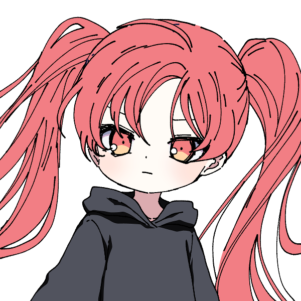

メインログ / 雑談ログ
関連作：「Counter Side」 / 「霧の狭間の罪人達」
キャラシート
PC1：胤角真環 (キャラシート) PL：ふろずんPC2：古代政宗 (キャラシート) PL：LISP
目次
■オープニングフェイズ01 運命の少女
02 鮮血の強者
■ミドルフェイズ
03 強奪作戦
04 再会
05 サクリファイス
06 情報収集1
07 情報収集2
08 情報共有
09 アポカリプス
10 お願い
11 禁断の果実
■クライマックスフェイズ
12 カタストロフィ
プリプレイ
GM : では自己紹介から初めて行きましょう、PC1お願いします！
■PC1：胤角真環
ロイス：さちか
カヴァー/ワークス：高校生/FHチルドレン
あなたはかつての実験が凍結される前、研究所で一人の少女と会ったことがある。
さちかという、あなたと同じように実験体にされていた少女だ。
さちかは他者に幸運をもたらす能力を持っており、その幸運の力であなたは実験の最中に助けられたことがあった。
今思えば、あなたがみゆきと出会えたのは、さちかから授けられた幸運のおかげだったのかもしれない。
しかし、さちかの方はあれからみゆきに助けられることもなく行方不明になっている。彼女は今どこにいるだろうか。
胤角 真環 :
PC1・胤角 真環(ミカド ミカン)は、デレデレツンデレFHチルドレンです🍊
FH特有の倫理観をガン無視した実験で生まれました。 HOロイスのさちかちゃんとは、そこで知り合ったカンジですね💊
マスターレイスを目標にもしてたのですが、その実験は失敗に終わってしまい、行き場を失くした時に霧下みゆきに拾われました🍈
このことをきっかけに霧下みゆきのことをスキになったらしいです。 スキになったのがみゆみゆで大丈夫？(過去の悪行を見ながら)
彼女に心酔する他のFHチルドレンたち(通称・みゆチル)よりも独占欲が強いので、玲瓏女学院での一件※は根に持ってます🍊💢
※霧下みゆきは胤角真環と同棲することになったにも関わらず、他校の寮で浮気していた。 詳細は『霧の狭間の罪人達』ログを参照。
身体的特徴としては「未成熟な身体」と「実験で移植された大きな角」が挙げられます👿
この二つについては、触れようとするとキレるので要注意ですね🍊💢
戦闘能力的には「高い攻撃力でいっぱい殴る」というシンプルなスタイルです🐺
クライマックスではヤバいバフを撒いたり撒かなかったり！ 以上！！
GM : み、みゆ…浮気…？知らんみゆね…
胤角 真環 : うそつけみか…しっかり浮気してフラれてたみかよ…🍊💢
GM : みみゆゆゆ…ちなみにこのシナリオは罪人卓が終わった直後になるのでオープニングでは回想の後に勝手に出て行ったみゆに怒るRPが出来ます
胤角 真環 : 存分にキレます💢💢💢💢💢
GM : 鎮まれ鎮まれみゆ…🍈💦
GM : 自己紹介分かりやすくて助かるね、ありがと！
GM : じゃあ次PC2いきましょ！
古代 政宗 : はいな！
■PC2：古代政宗
ロイス：晒科ザクロ（サラシナザクロ）
カヴァー/ワークス：指定無し/FHチルドレン
あなたはかつて落ちこぼれだったFHチルドレンだ。
“マスターブラッド”晒科ザクロはあなたと同じ施設で育ったチルドレンだが、今やマスターエージェントにまで登り詰めた彼女とは雲泥の差だった。
しかし現在のあなたは霧下みゆきに引き取られ、みゆきの指導で立派なエージェントとして成長した。
今では一人でもしっかりとFHの任務をこなすことが出来ている。
自身の成長を実感し始める中、みゆきからあなたに新たな指令が下されるのだった。
古代 政宗 : 「自己紹介…？ 私が、ですか…？」
古代 政宗 : 「えと…私の名前は古代政宗（コシロ・マサムネ）です。ヘンな名前ですよね…ご、ごめんなさい…」
古代 政宗 : 「組織の人からは”月下美人”とも…呼ばれてます…」
古代 政宗 : 「弱っちくてまだまだ半人前のオーヴァードですけど…今回もお役に立てるよう頑張り…ます…！」
古代 政宗 : PC2、古代政宗！ 病弱気弱チルドレンです！！！
古代 政宗 :
レネゲイドが自己破壊能力を持つ特異体質で生まれつき身体が弱く、FHの研究でなんとか生かされてきたという経歴の持ち主。
それゆえまともに能力を使うこともままならないけれど、みゆゆに指導を受けてからは弱点を克服して任務をしっかりこなせるようになりつつある感じです！
古代 政宗 : 自分のことは一人ではなにもできないグズという自己評価は変わってないので、何事にも自信がなかったりおどおどしがちだけど精一杯生きています。
古代 政宗 : 能力はブラッドボムを使った特攻型。反動はHP回復でカバーするけど出目が爆発してそのまま死亡するのはご愛敬。
古代 政宗 : みかんちゃんHP貸して！（紅のベーゼ）以上です！
GM : おどおどしてる女の子きゃわきゃわで良いぞ…
古代 政宗 : 気弱系の女子をやるのは数年ぶりのような気がする！がんばっておどおどするよ…（？）
GM : PC二人だけだから完全にHP取られるの確定してるみかんちゃん
胤角 真環 : 吸血衝動持ってるから、どちらかと言うと吸いそう側なのに；；
GM : かわいそうなみかんちゃん…
GM : りすぴっぴのこういうPC物凄く珍しいし楽しみね、紹介ありがと！
GM : じゃあオープニングから始めて行きましょう
メインプレイ
シーン1 運命の少女
GM : PC1、みかんちゃんのオープニングになります。登場侵食5点お願いします。
system : [ 胤角 真環 ] 侵蝕率 : 37 → 42
アレイスター計画 実験場
GM : これはあなたがまだアレイスター計画の実験体“被検体b-66”として扱われていた、霧下みゆきと出会う少し前の頃。
GM : 今日の戦闘実験を終え、食事を取った後に僅かに与えられた自由時間の間のことだ。
GM : あなたは疲れからか、施設の共有スペースで椅子に座ったままいつのまにか眠ってしまっていた。
GM : そろそろ自由時間は終了になる。だが、あなたを起こそうとする他の被検体は誰もいない。
GM : 被検体同士が殺し合う実験が行われるこの場所でそんな風に馴れ合う者はいなかった。
GM : ただただ無関心か、それとも時間を破って勝手に罰でも受ければいいと考えているのだろう。他の者達は次々に部屋から出ていく。
さちか : 「ねえねえ、起きて」
GM : しかし、あなたはそんな穏やかな声をかけられて目を覚ますことになった。
胤角 真環 : 「ん、あぁ……？ 」不機嫌そうによだれを拭って、目を開ける。

GM : 瞼を開けると、一人の少女があなたの前に立っていた。
GM : 緩やかにウェーブした長く白い髪が特徴的な幼い少女だった。
GM : ゆったりとした白いワンピースに身を包み、全身が白で覆われた彼女は一切の穢れがない透明感を覚えさせる。
GM : 初めて見るが、あなたと同じ被検体の一人だろう。だがその少女はどこか異様だった。
さちか : 「こんなところで寝てると、風邪ひいちゃうよ」
GM : 少女の声や雰囲気にはまるで敵意が無かったのだ。彼女は桜色の瞳であなたをただ心配そうに覘きこんでいる。
胤角 真環 : 「…………アンタには関係ないでしょ。 それとも何？ 戦闘試験の時に手を貸してほしいとかそういうの？」狙いがあるに違いない、と怪訝そうな目で見る。
さちか : 「手を貸す……？」 どういう意味か何も分かっていないようで、きょとんとしている
胤角 真環 : 「……はぁ。 いいから、そういう演技。 ここで生き残るために手を貸してほしいとかそういう話でもなければ、他のヤツに声をかける意味なんてないでしょ。」
さちか : 「……？」 首を傾げてから
さちか : 「そうかなぁ。よく分からないけど、さちかはさちかが話したい人に声かけるよ」
GM : さちか、とは彼女の名前のことなのだろう。しかし、それは被検体の番号名ではなかった。
胤角 真環 : 「はぁ？ 本気で言ってるなら呑気過ぎでしょ。そんなんでよく今まで生きてられたわね……。」
胤角 真環 : 「っていうか、何。 『さちか』って。」
さちか : 「え？ただの名前だよ。あなたにもあるでしょ？」
胤角 真環 : 「名前？ ハッ、そんなのアタシたち被検体にある訳ないでしょ。 ああ、『b-66』が名前って事になるのかしらねぇ？」鼻で笑って
胤角 真環 : 「……ああ、わかったわかった。 アンタ、外から連れてこられたクチでしょ？ ここでのルールを何にも知らないものね。」合点が言ったように
さちか : 「そう……なのかも……？」 外がどこなのか分かってないのか曖昧な様子
胤角 真環 : 「『なのかも』ってアンタね……。 あのね、元々はアンタにも家族とかいうのがいて、そいつらから貰った名前なんでしょってこと。 その『さちか』？ とかいうの。」溜息をついて
さちか : 「家族……家族っていうのは、よく分からないかも」
さちか : 「さちかって名前は、別の人から名付けてもらったんだよ」
胤角 真環 : 「ふうん……、外から攫われてきた訳じゃないのね。 じゃあ、別の人って誰よ？ 実験用のモルモットに名前なんて付けるバカがいるとは思えないけど。」
さちか : 「んー……。んーと、えーと……誰って言われると、どう言えばいいのかなぁ……」
さちか : 「お母さん……じゃないし、研究者……でもない感じがするし……」
さちか : 「何て言えばいいのか分からないけど、さちかと仲良くしてくれてた人、かなぁ……」
胤角 真環 : 「なかよくしてくれてた人、ねぇ……。 こんなところにそんなのいたとは到底思えないけど。」
胤角 真環 : 「……あのね、さちか。 アンタは状況がのみこめてないようだから、一応、教えてあげる。」
さちか : 「うん……？」
胤角 真環 : 「ここは殺し合いをする場所なの。 馴れ合いなんてしてもいずれ殺しあうことになるの。 他者と仲良くしたところで弱点になるだけ。 ……だから、アンタが話しかけてきたのは全くのムダって訳。」
胤角 真環 : 「これでアンタがどれだけバカかわかった？」
さちか : 「そうかなぁ……？さちかは別に、話しかけたいから話しかけただけだけど……」
さちか : 「あっ。でも無駄か無駄じゃないかで言うと、無駄ではないんじゃないかな？」
胤角 真環 : 「なんでそうなるの？？？？」はぁ、と肩をすくめる
さちか : 「だって、あなたに今親切に色々教えてもらえたじゃない」 嬉しそうに小さく笑って
胤角 真環 : 「……ヘンな奴。」
さちか : 「そう？さちかは普通にしてるつもりなんだけどなぁ」
胤角 真環 : 「そのフツウがここじゃヘンって話でしょ……。 まあ、いいわ。 」
胤角 真環 : 「アンタに話しかけられるのがイヤって訳でもないし、話しかけたいなら勝手に話しかければ？ 相手するかはその時の気分次第だけどね。」
さちか : 「ほんと？じゃあ、そうするっ」
胤角 真環 : 「次に話しかけてくるまでにアンタが死んでたら知らないけどね。」
さちか : 「じゃあさちか、死なないようにしなきゃね」 暢気そうに微笑みながら
胤角 真環 : 「まったくのんきね……。」フッと笑って
さちか : 「ふふっ……。あ、そうだ、もう時間だから起こさなきゃって思ってたんだ。そろそろ戻らなきゃ──」
GM : と、その時。くぅ……と、さちかの腹の音が小さく鳴った。
さちか : 「あ……」 両手でお腹を押さえてる
胤角 真環 : 「……何？ アンタ、おなか減ってんの？」
胤角 真環 : 「ま、見るからに戦闘成績悪そうだもんね。 どうせイモぐらいしか貰ってないんでしょ。」
さちか : 「うん……。ここのご飯、量少ないよね……もっとくれてもいいのにな」 しょんぼりして
胤角 真環 : 「アンタが強くなれば量も質もよくなるでしょ。 現にアタシはお腹一杯食べてるし？」
胤角 真環 : 「……ま、アンタが飢えてもアタシには関係ないハナシね。 それじゃ。」踵を返して
胤角 真環 : そのままスタスタと遠ざかっていくが、出口の扉まで歩いていったところで「はあ…。」と溜息をついて、さちかの元に戻ってくる。
さちか : 「……？忘れ物？」
胤角 真環 : 「…………。」無言でさちかちゃんの顔を見て
胤角 真環 : 「――アタシは戦闘成績優秀でお腹いっぱいだったから、これ余ったのよね。 処理しといて。」半分になった蜜柑を押し付けるように渡す
さちか : 「え？……いいの！？ありがとう！」 嬉しそうに半分の蜜柑を見て
胤角 真環 : 「……おめでたい奴ね。 残り物を捨てただけでしょ。」
さちか : 「そう？さちかは嬉しいけど……いただきますっ」
胤角 真環 : 「はいはい…。」
GM : さちかは蜜柑の実を一房口に運ぶ。
さちか : 「……！おいしい！おみかんって初めて食べたけど……久しぶりな感じがする！」
GM : そんなよく分からない感想を言いながら、美味しそうに笑顔でもぐもぐと食べ進めている。
胤角 真環 : 「初めてなのに久しぶりって、ホントにヘンな奴。」
さちか : 「ふふっ、なんでだろー……ごちそうさまでした。美味しかった！」 手を合わせて
胤角 真環 : 「そう。 それじゃ、アタシはこれで。」興味なさそうに
さちか : 「うん。……あっ、待って待って。さちかも一緒に戻るー」 あなたについていく
胤角 真環 : 「……待たない。 ついてきたいなら勝手についてきなさい。」(どうしてこんなのに蜜柑あげちゃったかな。深夜に食べようと思ってたのに…。)と思いながら、早歩きで
さちか : 「えー？んー、わかった」 小さいので歩幅が狭く、頑張って小走りでついていった
GM : ──これがさちかとの出会いだった。
GM : その後、あなたはさちかと共に過ごすことが多くなった。それはこの研究所ではありえない、友人関係に近い間柄だっただろう。
GM : だがしばらくして、今でも名乗っている胤角真環という名を一緒に考えた会話以降、あなたとさちかが顔を合わせることは無くなってしまった。
GM : 角の移植が主要な実験となり、実験体同士が接触する場がなくなってしまったのだ。
ルーム b-66
GM : そして、これはあなたが角の移植実験を受けた夜のこと。
GM : ……あなたは高熱を出して倒れてしまっていた。
GM : あなたの移植された角はジャームの力そのものと言える代物だ。角に適合しなかった実験体は非常に多く、皆ジャーム化し殺処分された。
GM : あなたは数少ない実験成功者だったが、それでも移植されたばかりの角がもたらす負担は凄まじいものだった。
GM : 角との拒絶反応のせいで暴れ狂うレネゲイドが体を蝕んでいく。
GM : この高熱はレネゲイドの暴走に体が抵抗しようとしているものなのかもしれない。
GM : だが体はだる重く、ベッドから少しも動くことが出来ない。
GM : 全身びっしょりと汗をかいて気持ちが悪い。喉はからからに乾いていて、とにかく水が飲みたかった。
GM : しかし、そんなあなたを診てくれる者は誰もいない。診たところでどうすることも出来ないのだろう。
GM : 「もしかしたら、b-66もダメだったのかもしれないな」「成功したと思ったのだがね。このままあの状態が続くようなら、処分するしかあるまい」
GM : 部屋の外から廊下を通りすがる研究者達の声が聞こえてくる。
GM : 視界は霞み、意識は朦朧としている。なのにあなたを見放すその言葉だけははっきりと聞こえていた。
胤角 真環 : 「(アタシは他の失敗作達なんかとは、ちが、う……！ アタシにはマスターの称号を得ることができる……。 アタシには価値がある……。 だから、だから……。)」
胤角 真環 : 「アタシを、捨て、ない、で……。」ぐらぐらと揺れる視界の中、なんとか立ち上がろうと体に力を入れるが、小さな声程度しか出すことができなかった。
さちか : 「捨てたりなんかしないよ」
GM : あなたのすぐ傍から、そんな優しい声が聞こえてくる。
GM : いつのまにか、ベッドの隣にさちかが立っていた。
胤角 真環 : 「ぇ……、あん、た。 なん、で……。」消え入りそうな声で言う
GM : さちかは、にこっと笑いかけて
さちか : 「さちかね、みかんちゃんに幸運を授けにきたの」
GM : そう言って、あなたの手を優しく握る。
GM : その瞬間、あなたは体を蝕む熱が消えていくのを感じる。火照った体はあっという間に冷えて、元の体温に戻っていた。
GM : 鉛のように重かった体は軽く、簡単に動かすことが出来るようになっている。
GM : 霞んでいた視界はカメラのピントが合うようにはっきりとし、微笑みかけるさちかの顔が綺麗に見えていた。
胤角 真環 : 「幸、運？ それって……。あ、あれ……？ 」尋ねようとした時には、もう声が通るようになっていて、いきなり治ったことに困惑する。
さちか : 「もう大丈夫でしょ？さちか、人を幸せにする力が使えるようになったから……」 安心したように優しく見つめて
胤角 真環 : 「う、うん。もう大丈夫、だけど……、幸せにする力って……？ 」
さちか : 「うん。さちかが今みたいにこうして触れるとね、その人は幸運になるみたいなの」
さちか : 「だから今の症状も治ったの。それにきっとこれから、みかんちゃんにはもっと良いことが起こるよ」
胤角 真環 : 「幸運と症状って関係あるのかしら……？ まあ、それはともかく、」
胤角 真環 : 「……その。 ありがと。 さちか。 ……助けてくれて。」
さちか : 「……うんっ。どういたしまして」 少し照れたように笑う
さちか : 「……っと。じゃあ、さちかもう行くね？」
胤角 真環 : 「えっ。 行く？ 何処に？ ――あ、そっか。 他の被検体の部屋に勝手に侵入するのは確かにダメね……。 」
さちか : 「それはそうなんだけど……他の人達の部屋にも行こうと思うの。さちか、ダメな子だね」
胤角 真環 : 「ああ、そういうこと……。 助けてもらった立場から言える文句なんてないわ。 そもそも、結構、アンタって勝手にしたいことするヤツでしょ。」
胤角 真環 : 「話しかけてきた時もそうだったし……。」懐かしそうに笑って
さちか : 「うん。他の人達にも幸運をあげにいかなきゃ……こんな実験で誰かがずっと苦しみ続けるなんて、さちか嫌だもん」
さちか : そうかな……？とあまり自覚の無さそうな顔をしている
胤角 真環 : 「こんな実験……。 そう、ね……。 ま、捕まらないようにうまくやりなさいよ？」
さちか : 「ありがと、気を付けるよ」
胤角 真環 : 「――アタシみたいに他の被検体たちも助けることができたなら、この実験は終わりに向かう……。 そうしたら、こうしてまた会える日も遠くなさそうね。」
胤角 真環 : 「だから、またね、さちか。 ……捕まったりしたら承知しないわよ！ 」
さちか : 「そうかも……。うん、わかった」 頷いて
さちか : 「またね、みかんちゃんっ」
GM : そう別れと再会の約束を告げる言葉と共に、笑顔を見せるさちかの姿が音もなく消えた。
GM : まるで幻だったかのように彼女の姿はもうどこにもいない。
GM : これがさちかとの最後の思い出だ。彼女はそれっきり、あなたの前に現れることは無かった。
GM : ──そして、アレイスター計画の実験凍結が発表されたのはそのすぐ翌日のことだった。
GM : 角持ちの実験体達はプライメントオーヴァードには至れないという判断が突然下された。
GM : 角付き達は確かに優秀な力を持っていたが、オーヴァードの範疇に過ぎなかったのだ。
GM : コストに対して採算が取れないことが明らかになり、長く続いた実験は凍結。あなたは研究所から解放されることになった。
GM : しかし、欲望が無いことで目標としていたマスターレイスにあなたが選ばれることもなかった。
GM : その後、何もかもを無くした空っぽのあなたが出会ったのが霧下みゆきだ。
GM : 世界を教えてくれたみゆきに憧れを抱き、その想いを告白するも彼女に届くことはなかった……。
GM : だが、今ではあなたがみゆきと同じ家に住むことが出来、それなりに幸せな日々を過ごしている。
GM : あなたとみゆきの関係はまだまだこれからだ。霧下みゆきを手にするというあなたの欲望を叶えられる時はきっといつか来るだろう。
GM : 実験が凍結され、さちかとも再会出来ず、全てを失った時は考えもしなかったことだが、
GM : 今のあなたの幸福は、本当にさちかから授けられた幸運のおかげなのかもしれない……。
GM : ……だと思っていたが、今のあなたは不幸そのものだった。
GM : 何故なら約一ヵ月前、突然みゆきが家を出ていってしまったからだ。
GM : なんでも玲瓏女学院という全寮制の学園に潜入したらしい。
GM : みゆきが勝手に潜入を決めてしまったせいで、あなたは一人取り残されて寂しい日々を送ることになってしまった。
GM : 未だにみゆきは帰ってこず、あなたは今日の放課後も一人で家路についていた……。
東雲市 住宅街
胤角 真環 : 「今日の夕ごはんはどうしようかな……。 ハンバーガーとか？ ううん、それは昨日も一昨日もたべたし……。」霧下みゆきという拠り所を失ったみかんは、それはそれは食生活が荒れに荒れていた…。
胤角 真環 : 「はあ…………。」深い深いため息をつく
GM : では、あなたが溜息をついたその時。
霧下みゆき : 「みかーんちゃん！」
GM : と、背後からあなたの名前を呼ぶみゆきの声が響く。
胤角 真環 : 「……！！ みゆっ……！！ 」ぱあっと喜んで即座に振り返る
GM : 振り返った瞬間、あなたの顔にみゆきの柔らかい胸が押し付けられた。
霧下みゆき : 「久しぶり～！元気だった？お姉ちゃんだよ～」
GM : みゆきはそう嬉しそうに言いながら、あなたを包み込むように抱きしめてくる。
胤角 真環 : 「んぅう……。」嬉しそうに抱き返すが、
胤角 真環 : その暫く後、判断能力が戻ってきた途端に、愛情が憤怒に反転。 ドンとみゆみゆをつきはなす。
胤角 真環 : 「久しぶり～！ じゃないわよッ！！ このっ……ばかぁっ！！」
霧下みゆき : 「えぇっ！？どうしたのみかんちゃん！？」
胤角 真環 : 「どうしたのでもないわっ！！ アタシを置いて勝手に出て行って！！」
霧下みゆき : 「あー……。うふふ、ごめんね？ちょっといきなりだったかしら」
胤角 真環 : 「アンタの『ごめんね』は気持ちが籠ってないのよ気持ちが！ アタシの気持ちも知らないで…！！」
霧下みゆき : 「わ、分かってるわよ～。寂しかったのよね？ほんとにごめんね？」
霧下みゆき : 「ちゃんと反省してるから！ごめんなさい、みかんちゃんっ！」 手を合わせて
胤角 真環 : 「ふうん…？ 」
胤角 真環 : 「じゃあ、あっちで浮気してたそうだけど、その件に関して弁明はある？」
霧下みゆき : 「そ、それはぁ……浮気っていうか、ただの仲間集めよー？」 えへって笑って
胤角 真環 : 「…………。」無言で睨む
霧下みゆき : 「しょうがないじゃない？ね？わたしのお仕事みたいなもんなんだしっ」
霧下みゆき : 「あっ、でもでも、もうこれからは勝手に長期間潜入するとかはしないから！ね？ね？」
胤角 真環 : 「……ホントかしら。 もう信用ならないわ。」
霧下みゆき : 「あーん、ほんとよー。信じてみかんちゃん～」
胤角 真環 : 「そう言うなら信じさせてよ、ばか。」
霧下みゆき : 「んー……あっ、じゃあこれからしばらくはお仕事抜きってことで！FHからの任務も大体他の人に回して断っちゃいましょ！」
霧下みゆき : 「寂しくさせちゃったお詫びってことで！だめかしら？一緒にたくさん遊んじゃいましょう！」 そう言ってみかんちゃんに腕を絡ませる
胤角 真環 : 「……わかった。」まだ不機嫌そうではあるが、拒否することはない
胤角 真環 : 「でも、今度また同じようなことがあったら、こっちにも考えがあるからね。」
霧下みゆき : 「分かってる分かってるわ。ありがと、みかんちゃんっ」
霧下みゆき : 「じゃあ、今日はこれからどうしようかなー……」
霧下みゆき : 「あっ、そうだ！まずはお買い物ね！みかんちゃんの好きな物いっぱい作ってあげちゃうんだから！」
GM : と、みゆきが腕を絡ませてあなたと歩いて行こうとした、その瞬間だった。
GM : あなたの腕から、みゆきの感触が消える。
GM : あなたは目撃するだろう。
GM : 突如襲い掛かってきた一条の光が、みゆきの右肩を背後から貫く瞬間を。
霧下みゆき : 「あ……っ！？」
GM : 光線に撃ち抜かれたみゆきはそのまま地面にうつ伏せに倒れる。
胤角 真環 : 「――えっ。」あまりに急なことに思考がついていかず、間の抜けた声を漏らす
胤角 真環 : 「みゆ、き……？ み、みゆきっ……！！ みゆきっ！！」次の瞬間、霧下みゆきが撃たれたのだと理解すると、血相を変えてみゆきに駆け寄る
霧下みゆき : 「……っ、う……ぅ……。だ、だいじょうぶ、よ……」 痛そうに撃たれた右肩を抑えて倒れているが、急所ではなかったため意識はある
胤角 真環 : 「……よかった、ほんとによかった。」一瞬、安堵の息を漏らして、
胤角 真環 : 「でも、いったい誰が……！ 」と周囲に敵影を探す
GM : 光線が放たれたであろう方向を探す。するとそこにいたのは黒いローブを頭から被った男だった。
GM : 男は幽霊のように地面から少し浮遊しており、ゆらゆらと左右に不安定に揺れながら
男 : 「マジカル……マジカル……」
GM : と、謎の言葉をぶつぶつと呟いていた。
胤角 真環 : 「は……？ マジカル……？ 意味分かんないけど、とりあえず同じ目には遭ってもらうからッ……！！」影を飛ばし、そのローブを攻撃する！
男 : 「マジカル……マジカル……マジカル……」 と、それしか言葉を知らないかのように繰り返した後
男 : 「マジカルうううううううう！！！！」
GM : 男は発狂したように叫びながら、あなたの操る影へと真っ向から飛んでくる！
GM : ローブの中からは獣のような爪が伸び、あなたを攻撃しようとしているようだが……！
胤角 真環 : 「(このローブ、『マジカル』とか言ってるクセに、アタシと同じキュマイラ能力者…！ 近接戦タイプなら、その影を踏んだ時点でッ…！！ )」
胤角 真環 : ローブの真下に向かった影は、ワニのアギトのようにカタチを変えると質量を持って、敵をかみ砕く。
男 : 「マッ！？」 奇妙な悲鳴を上げる
胤角 真環 : 「ふん！ そこらのキュマイラとは、リーチが違うのよリーチが！！ 」
胤角 真環 : 影鰐は標的に喰らい付くと決して離さず、ローブはその場から身動きが取れなくなった。
胤角 真環 : 「あれ……？ キュマイラ能力者なのに、さっきはエンジェルハィロゥの能力を……。 フツーにエンジェルハィロゥの能力を使っていないだけ……？」
胤角 真環 : 「まあ、いいわ。 この際だからそのローブの中身、しっかり見てやりましょ。」鰐に喰われているローブに近付いて、そのローブを引き裂いて中身を見る！
男 : 「マッ……ジ、カ……」
GM : まだ意識はあるようだが、男はもはや抵抗できない。
GM : ローブを引き裂くと、中から出て来たのは見知らぬ中年の男だった。
GM : 男の眼の焦点は合っていない。どう見ても正気では無いことは確かだ。
胤角 真環 : 「……ねえ、みゆき。 アンタ、玲瓏女学院で恨みでも買ったの？ 」みゆみゆにも心当たりはないかとその男を見せる
霧下みゆき : 「い、え……。そんな人、見覚えもないわ……」
GM : と、みゆきが答えたところで
GM : 『ピ…………ピ…………』
GM : という電子音が男から聴こえてくる。
胤角 真環 : 「……？ ……何、この音。」
GM : 『ピ…………ピ…………ピ……ピ……ピ……』
GM : 電子音の間隔は少しずつ狭まって聴こえてきていた。
霧下みゆき : 「……！？み、みかんちゃん！！そいつから離れて！！」
GM : 何かの危険を察知したのか、みゆきが慌てたように叫ぶ
胤角 真環 : 「もう、今度はなんだっていうのよっ！！」ワニを操って男を宙に放り投げる
GM : 『ピ……ピ……ピ、ピ、ピ、ピピピピピピ……』
GM : 電子音が連続してけたたましく鳴り響いた、その直後。
GM : 男の体が内部から発光し、爆発する！
GM : 耳を劈くような爆音。しかし、爆発はまだ小規模な方だった。
GM : 宙に放り投げておいたおかげであなた達まで爆風が届くことは無いだろう。
胤角 真環 : 「っ！ ああ～！ もう！！ なんなの！？ サイアク……！！」耳を抑えて
霧下みゆき : 「み、みかんちゃん……無事……？」 傷を抑えながら、心配そうに歩み寄って来る
胤角 真環 : 「アタシは無傷。 マスターの称号を得る予定のオーヴァードだもの。 ……それよりアンタでしょ、その傷はホントに大丈夫なの？ 」
霧下みゆき : 「ふふっ、流石ね」
霧下みゆき : 「わたしは……大丈夫。びっくりしちゃったけど、そこまで強い攻撃ではなかったみたいね」
GM : みゆきは肩から手をどけて見せる。撃たれて貫通していた傷口はオーヴァードの治癒能力で少しずつ治ってきていた。
胤角 真環 : 「そう。 それならよかったわ。 ……でも、あのローブは一体なんだったのかしら。」
霧下みゆき : 「そうね……」 周囲を見渡して
GM : 自爆した男は肉片の一つさえも残らず消滅してしまっている。
GM : どうやらあなた達を始末するための自爆ではなく、返り討ちに遭った時に痕跡を完全に消すためのものだったようだった。
霧下みゆき : 「駄目ね、何も残ってない。ここまで綺麗に全部吹っ飛ばせるなんて……」
霧下みゆき : 「顔は見れたけど、正直全く見覚えが無かったし……」
胤角 真環 : 「う～ん、消し飛ばすなら黒幕はバロール能力者とかかしら…。 まあ、そっちは情報全然ないし考えても仕方ないか。」
胤角 真環 : 「そういえば、あのローブはずっと『マジカルマジカル…』ってぼやいてたんだけど、そっちに心当たりはある？」
霧下みゆき : 「いいえ、それも全く。あの言葉は何だったのかしら」
胤角 真環 : 「さあ…。完全に正気じゃなかったことだけは確かなみたいだけど。」
霧下みゆき : 「その辺で勝手に発生したジャームかと思うところだけど、自爆機能がつけられていたところをみると……ジャームの手駒、かしら……」
霧下みゆき : 「何か少しでも痕跡があれば、そこから詳しく調べられそうだったのだけど」
胤角 真環 : 「消されちゃったわね。痕跡。」
霧下みゆき : 「しょうがないわね……」
GM : そんな風にあなた達が話していると、周囲から人々のざわめく声が聞こえてくる。
GM : 先程の爆発のせいで、周囲から野次馬が集まり始めていた。ワーディングもかける余裕がなかったせいだ。
GM : 今のところは全員ただの一般人のように見えるが、爆発と一緒にレネゲイドの反応を感知したUGNのオーヴァードが来るのは時間の問題かもしれない。
霧下みゆき : 「まずいわね。みかんちゃん、とりあえず離れましょう」
胤角 真環 : 「そうね、メンドくさいことになりかねないし。 UGNにアタシたちが殺したと思われたらたまんないわ。」
霧下みゆき : 「冤罪なのにね～」
胤角 真環 : 「FHでひとくくりにされるのは困るわ、ホント。 ま、痕跡自体なくなってるから、冤罪の方は大丈夫かな。」
胤角 真環 : 「それよりみゆき、これからはアタシから離れちゃダメよ。」
胤角 真環 : 「アタシなら、あの程度のジャームが束になったところで物の数じゃないし……。 アタシがアンタを守ってあげる。」
霧下みゆき : 「……！えぇ、頼りにしているわ！みかんちゃん！」 みかんちゃんの手を握る
胤角 真環 : 「……ん。」握り返し
GM : あなたはみゆきと共に、人々の間をすり抜けてその場から去っていく。
GM : UGNに見つかることもなく、一先ずは安全な場所まで避難することが出来たのだった。
東雲市 オフィス街
GM : ……そこから遥か遠く離れた、オフィス街。
GM : とあるビルの屋上に一人の少女が立っていた。

GM : 黒いゴシックドレスを身に纏ったその少女は、まるであなた達の様子を観劇するかのようにオペラグラスを覗いていた。
GM : やがて、彼女はオペラグラスを眼から外して監視をやめる。
GM : 紫色に淀んだ目は楽しそうに細め、満足するかのようににんまりと弧を描いた唇からは、
？？？ : 「……マジカルー★」
GM : という、奇妙な言葉が零れていた。
GM : シーンエンド。
GM : ではここでHOロイスの取得になります、さちかの感情の決定をお願いします。
胤角 真環 : 懐旧/不安Nで！
GM : 了解！
シーン2 鮮血の強者
GM : PC2、古代政宗のオープニングになります、登場侵食+5点お願いします。
system : [ 古代 政宗 ] 侵蝕率 : 32 → 37
FHチルドレン訓練施設
GM : これはあなたが十歳になった頃のこと。
GM : FHの研究の甲斐もあり、以前よりも体調が安定し始めたあなたはFHチルドレンとしての訓練を義務付けられることになった。
GM : しかし生まれつき体の弱いあなたがFHの過酷なトレーニングについていけるわけもなく、指導を受けてもまともに力を使いこなすことは出来なかった。
GM : いつまでも強くならないあなたを厳しく見た施設の訓練教官は、あなたの能力が一定のラインに達するまで食事を与えないことに決めた。
GM : 飢えを体感させて心身ともに追い詰めることで限界を超えさせたり、チルドレンの中に潜む欲望を見出して成長を図るFHの教育だ。
GM : しかし、食事を抜かれてもあなたのオーヴァードとしての力が向上することはなかった。
GM : 水だけは飲むことを許されているが、それでも空腹でまるで力が出ない。
GM : 飢えはあなたの体力を削っていくどころか、安定して来ていた体調を悪化させていくことになってしまっていた。
GM : 僅か二日目で、あなたはベッドから立ち上がることも出来なくなっている。
GM : 少しでも休みたいというのに空腹のせいで眠ることも出来ず、あなたは自室のベッドで一人眠れない夜を過ごしていた……。
古代 政宗 : 「んん……」空腹をごまかそうと頭まで布団をかぶっている。
古代 政宗 : 眠れずにもぞもぞと布団の中で寝返りする。息がつまりそうだ。
古代 政宗 : 「……お腹が……すきました……」
古代 政宗 : 布団をまくり上げて時計を見る。眠れないのは空腹のせいもあるが、明日が来るのが怖いのだ。
古代 政宗 : 病室にいた頃は明日を生きられることが幸せだったのに、どうして……。
古代 政宗 : 「……どうして、私はこんなに……だめなんでしょう……」
GM : あなたがそう一人で呟いた直後のこと。
？？？ : 「辛そうだな、古代」
GM : と、突然部屋の中から声がする。
古代 政宗 : 「……！？ 誰……ですか……？」
古代 政宗 : きょろきょろあたりを見回す。カギはかけたはずだが…
GM : 声がした方を見ても誰もいない。しかし、その床には赤い血だまりが広がっていた。
？？？ : 「やっぱり二日目でダウンか。まあお前の体ならよく持った方だろ」 血の中から声がする
古代 政宗 : 「ひっ……ち、血……」
GM : 血だまりが蠢き、立体的に形を変えていく。これは、体を液状化するエグザイルのエフェクトだ。
GM : やがて血の中から現れたのは、赤い髪をツインテールにした幼い少女だった。
GM : あなたはその気の強そうな顔に見覚えがある。話したことは無いが、この施設で何度も見たことがあった。
GM : 晒科ザクロ。あなたと同じ施設で育てられているFHチルドレンだった。
古代 政宗 : 「あ……あなたは……晒科……さん……」恐る恐る声を絞り出す
晒科ザクロ : 「そうだよ。ったく、勝手に部屋に入ったくらいで何びびってんだか」
GM : ザクロは適当にその辺の椅子に腰かけている。
古代 政宗 : 「ご、ごめんなさい……な、何か御用ですか……？」
晒科ザクロ : 「これ、やりにきた」
GM : ザクロはあなたに何かが入った袋を投げ渡す。
古代 政宗 : 「あっ……とっと……わっ！」落としそうになりながらキャッチするが、その勢いで転ぶ
晒科ザクロ : 「……はぁ。何やってんだよ」 呆れたように見てる
古代 政宗 : 「ご、ごめんなさい……力が出なくて……あの、これって……？」
晒科ザクロ : 「飯だよ」
GM : 袋の中を見れば、その中には施設の食事で出されるパンや、肉や魚の缶詰、林檎などの果物が入っていた。
古代 政宗 : 「わ、ほんとだ……いいんですか……？ こんなにいっぱい……」顔がぱあっと明るくなる
晒科ザクロ : 「構わねえよ。倉庫から盗んだやつだからな」
古代 政宗 : 「だ、大丈夫なんですか……それって……？」
晒科ザクロ : 「大丈夫じゃないな、ここのルール的には」
古代 政宗 : 「や、やめましょうよ……怒られちゃう……」おろおろしてる
晒科ザクロ : 「何だと？」 イラっとしたような声
古代 政宗 : 「ひっ……ごめんなさい……で、でも……」なんといったらいいかもごもごしてる
晒科ザクロ : 「お前、もしかして今自分が飯抜かれてることが正しいとでも思ってるのか？」
古代 政宗 : 「え……？」
晒科ザクロ : 「空腹で動きも出来ない位弱ってるくせに、ここから本当に強くなれるとでも思ってんのかってあたしは聞いてんだよ」
古代 政宗 : 「そ、それは……」
古代 政宗 : 「無理……だと思います……」
晒科ザクロ : 「だったら何故食わない。盗んだものだからダメだっていうのか？」
晒科ザクロ : 「どうせ元々お前に回されるはずだった分の食糧だろ、これ」
古代 政宗 : 「……」
古代 政宗 : 「そう……ですね、いただきます……」納得したような、押し負けたような微妙な表情でパンを手に取る
晒科ザクロ : 「ふん。最初から素直にそうすりゃいいんだよ」
古代 政宗 : 「ん……」パンを一口かじる。ずっとまともなものを食べていなかった身体に染み渡るようだ。
古代 政宗 : 「おいしい……です……」ゆっくりもくもく咀嚼してから、笑顔になって。
晒科ザクロ : 「そうか、よかったな」
GM : ザクロは不愛想にそう言い、適当に窓の外を見ている。食べ終わるまでここにいるつもりらしい。
古代 政宗 : 「あの……晒科さんは……どうして……助けてくれたんですか……？」
晒科ザクロ : 「気になんのか」 そちらに顔を向ける
古代 政宗 : 「はい……だって、見つかったら……晒科さんも危ないのに……」
晒科ザクロ : 「確かにそうだ。そもそも、お前が空腹だろうとあたしには関係がない」
晒科ザクロ : 「強い者は生き残り、弱い者は淘汰される。お前みたいな弱者が虐げられるのは当然の結果だし、あたしにとってもどうでもいいことだ」
晒科ザクロ : 「でもな、こんな方法がお前を強くさせるためのものだって組織がいうのはちょっと気に入らねえな」
晒科ザクロ : 「人間、腹が減ってて強くなれるわけねえだろ。何も食らわず強くなれる奴なんていねえ」
古代 政宗 : 「そう……ですね……」うんうん頷いてる
晒科ザクロ : 「だから盗んできたんだよ。気に入らねえものは気に入らねえんだからな」
古代 政宗 : 「なるほど……」納得して、深くうなずく
古代 政宗 : 「わたしも……しっかり食べて……強くなります……」
古代 政宗 : 「強く……なりたい……です」目の前のザクロのように。
GM : ザクロはその様子を見て、あなたに近付いて顔を見つめる。
晒科ザクロ : 「あぁ、そうだ。お前ももっと強くなれ、古代」
晒科ザクロ : 「あたしももっともっと、誰よりも強くなる……。強くなるためには、自分よりも強い奴を食らうのが一番だ」
晒科ザクロ : 「この礼は、お前が強くなってしっかりとあたしに返せ」
古代 政宗 : 「はい……！」珍しく力強くうなづく
晒科ザクロ : 「……それでいい」 あなたの返答に満足したように頷き返す
GM : そうした会話の後、あなたはザクロが持ってきてくれた食料を全て食べ終えた。
GM : 満腹と言えるわけではないが、エネルギーとして十分な量だ。これで今夜はもう飢えで眠れないということにはならないだろう。
晒科ザクロ : 「どうせ明日も飯抜きだろうし、またこの時間に持ってきてやるよ」
GM : ザクロはゴミを袋に片付けながらそう言う。
古代 政宗 : 「！ い……いいんですか……？」
晒科ザクロ : 「構わねえよ。そんな一日で強くなれるもんでもねえだろうしな」
晒科ザクロ : 「まあ、朝と昼はバレるだろうから我慢してもらうが」
古代 政宗 : 「はい……ありがとう……ございます……！」
GM : ザクロは口元に笑みを浮かべた後、≪鍵いらずの歩み≫を使用。
晒科ザクロ : 「じゃあな」
古代 政宗 : 「はい……おやすみなさい……！」
GM : ザクロは再び体を血液に変えて、扉の隙間から出ていった。
GM : その後も、ザクロは約束通り夜に食糧を持ってきてくれた。
GM : しかしそんな生活が一週間程経った頃、倉庫の食糧が不自然に減っていたことから、ザクロがあなたに食事を与えていたことが施設側にばれてしまった。
GM : ザクロは罰を受け、監視が強化されて一切の接触が禁じられてしまったため、彼女があなたに会いにくることはなくなった。
GM : その後もしばらくは同じ施設で育てられてはいたものの、あなた達があれから顔を合わすことはなくなっていた……。
GM : ──それから数年の月日が流れ、現在から約一年程前のこと。
GM : あなたは未だに自分の力を使いこなすことは出来ていなかった。
GM : 体の弱さは相変わらずで、一度も任務に出たことも無い。訓練教官からもほとんど見放されてしまっている状況だった。
GM : だがFHチルドレンとしていつまでもこのままではいけない。少しでも使い物にならなくては、いい加減あなたは始末されてしまうかもしれない……。
GM : そう焦るあなたは、夜中の訓練場で一人訓練に励んでいた……。
訓練場
古代 政宗 : 「はっ……！」血液を操って刃を作り、訓練用のターゲットを両断する。
古代 政宗 : これが政宗の持つブラム＝ストーカーの能力だ。威力は申し分ない……だが……
古代 政宗 : 「……ご、ほっ……！」血を使った反動で体の血管が破れ、口から血を吹き出し、そのまま床に倒れる。
古代 政宗 : 「どう……して……」赤黒い血だまりに沈みながら、何度やっても反動を抑えられない自分への焦りを口にする。
古代 政宗 : 「強く……ならなきゃ……いけないのに……」
古代 政宗 : 思い返すのは、遠い日の約束だ。それだけが、弱い彼女をずっと支えてきた。
GM : ではそこで、あなたは訓練場に鳴り響くこちらへと近づいてくる足音を聞く。
古代 政宗 : 「……？」膝で立ち上がって振り向く。
GM : そちらに目を向けると、一人の少女がこちらへと歩んでくるのが見える。
GM : 血のように赤い髪を二つに結んだ少女。その成長した姿を見るのは初めてだったが、あなたはすぐに彼女が誰か分かる。
GM : 晒科ザクロ。数年前にこの訓練施設から出ていき、今では“マスターブラッド”と呼ばれているFHチルドレンだ。
晒科ザクロ : 「随分励んでるな、古代」
GM : ザクロはあなたから少し離れた位置で立ち止まり、そう呼びかけた。
古代 政宗 : 「え……あ……っ！！」
古代 政宗 : 「晒科、さん……どうして、ここに……？」予想外のことに、気が動転している
晒科ザクロ : 「分からないのか。そりゃそうか……」
晒科ザクロ : 「古代……」
晒科ザクロ : 「あたしは、お前を殺しにきた」
古代 政宗 : 「え……！？」目を丸くする
晒科ザクロ : 「何呆けてやがる。当然だろ」
晒科ザクロ : 「FHも見込みのないチルドレンをいつまでも面倒見てあげるようなぬるい組織じゃないからな」
晒科ザクロ : 「落ちこぼれのお前を抹殺する……そういう任務があたしに回って来たってわけだ」
古代 政宗 : 「そ、そんな……！」顔が真っ青になる。
古代 政宗 : 半ば予感していたことではあるが、その任に当たるのがほかでもない彼女であることはこの上ない衝撃だった。
古代 政宗 : 今の彼女がどれほど強くなったのかは知らないが、力の差は歴然としているだろう……。
晒科ザクロ : 「どうした、信じられないか？」
古代 政宗 : 「……」何も言葉にできない。信じたくはないが、こうなるのは何もおかしいことではないのだ。
晒科ザクロ : 「…………」
晒科ザクロ : 「だけどまあ、同じ施設で育ったよしみだ。古代……殺す前にお前には一つチャンスをやるよ」
古代 政宗 : 「チャンス……それって、一体……？」
GM : ザクロは林檎を取り出して、片手で持って見せる。
晒科ザクロ : 「この林檎を食べ終わるまでの間、あたしはお前を襲わない」
晒科ザクロ : 「その間にあたしにほんの少しでも傷をつけれたら、お前のことを見逃してやる」
古代 政宗 : 「……！」
古代 政宗 : これは……チャンスだ。生きるための、そして、強くなるという約束を果たすための。
古代 政宗 : そのチャンスを、彼女はくれようとしている。
古代 政宗 : 「……本当、ですか……」
晒科ザクロ : 「なんだ、疑ってんのか」
晒科ザクロ : 「あたしはマスターエージェントだ。そのあたしに掠り傷一つでもつけれるなら、お前はまだ見込みがあるってことだろ」
晒科ザクロ : 「そんな奴を始末するのは損だからな。そういうわけだ」
古代 政宗 : 「……わかりました……晒科さん……！」覚悟を決める。やるしかない。
晒科ザクロ : ザクロは薄く笑みを浮かべ、林檎を口元に持っていく。
晒科ザクロ : 「それじゃ、スタートだ。せいぜい頑張りな」
GM : そう言って、赤い果実をそのまま齧り始めた。
古代 政宗 : 「はい……っ！」血液で刃を作る。自信はないが、やるしかない…！
古代 政宗 : 刃を手にし、ザクロへと向かって飛び掛かり、切り付ける。落ちこぼれでも、瞬発力だけならほかのオーヴァードと張り合える。
古代 政宗 : 「（最初の一撃が勝負です……お願い……！）」
古代 政宗 : 刃はリンゴを食べているザクロの眼前まで迫る！
GM : しかし、その直前であなたの視界からザクロの姿が消える。
古代 政宗 : 「――！？」
GM : 彼女はあなたを上回るオーヴァードの身体能力で攻撃を軽々と躱し、その隣まで移動していた。
晒科ザクロ : 「とろいんだよ！舐めてんのか、剣を振るならもっと速く振れ！」
GM : ザクロが怒鳴る。この間に、林檎はもう三分の一程食べ終わっていた。
古代 政宗 : 「そ、んな……は、はやい……！」
古代 政宗 : 体内から血液が昇ってくるのを感じる。でも倒れている暇はない。
古代 政宗 : 「ああ……！！」ふらつく身体を立て直して、二撃目に移る。すでに身体の限界は近い。
古代 政宗 : 必死に飛び掛かるが……やはり初撃ほどのキレはない。
晒科ザクロ : 「もっと本気で来いって言ってんだよ……！！」
GM : ──そうして、あなたは諦めずに攻撃を繰り返していく。
GM : だがしばらくして、あなたの体力が限界を迎えたと同時に、
晒科ザクロ : 「……ごちそうさまでした。……時間切れだ」
GM : ザクロは綺麗に芯だけ残した林檎を指でつまんであなたに見せる。
GM : ……結局、あなたの攻撃はザクロに一回も当たらなかった。
古代 政宗 : 「……ぐはっ」緊張の糸が切れたように、血を吐き出す。訓練でもここまで長い時間戦ったことはない。とうに限界を超えている。
晒科ザクロ : 「残念だったな、古代」 ゆっくりと近づいてくる
古代 政宗 : 「……はっ」逃げ延びようと必死に地面を這う。
晒科ザクロ : 「わりいが、チャンスはもう終わりだ」
GM : ザクロの全身が血液に変わる。液状化したザクロはあなたに飛び掛かってその四肢を絡めとり……
晒科ザクロ : 「お前を始末させて貰う」
GM : あなたの体は地面にうつ伏せに叩きつけられる。一瞬の内に実体化していたザクロに上に乗られて体を押さえつけられていた。
古代 政宗 : 「うぐっ……う、ぁ……」激痛と息苦しさにたまらずうめき声をあげる
GM : ザクロは爪で指先から切り、流れ出た血を凝固させて紅の剣を作り出す。
晒科ザクロ : 「…………」 赤い目を細め、呻き声をあげるあなたをしばらく見降ろした後
GM : ザクロが赤い剣を振りかぶる──その時だった。
GM : 突然、あなた達の周囲に白い霧が立ち込める。
古代 政宗 : 「……！？」
晒科ザクロ : 「何……！？なんだ、この霧……」
GM : あなたの上からザクロの重みが無くなる。
晒科ザクロ : 「くそっ……古代、一体これは……！！」
古代 政宗 : 「え……し、知らないです……私は……！？」
GM : ザクロの姿が白い霧の中に消えていく。
GM : すぐ真上にいたはずの彼女はどこかへと引っ張られるようにして見えなくなり、声は遠ざかっていった。
古代 政宗 : 「き……消えた……晒科さんが……？」何が起こったのかわからず同様して、あたりを見回す
霧下みゆき : 「大丈夫よ、安心して。あなたとお話するために、ちょっとだけ離れてもらっただけだから」
GM : 霧に包まれた訓練場を見回していると、あなたの背後から穏やかな声がかけられる。
古代 政宗 : 「わっ、わっ……！？ だ、誰ですか……？」
GM : そこにいたのは白い髪の少女だった。彼女は優しそうにあなたに微笑みかけている。
霧下みゆき : 「わたしは“霧の魔女”、霧下みゆき。あなたを迎えに来たの」
古代 政宗 : 「“霧の……魔女”……？ わ、私に……なんの御用でしょうか……？」
霧下みゆき : 「それはね……政宗さん」
霧下みゆき : 「わたしのところへ来ない？」
古代 政宗 : 「ど、どういう……ことですか……？ あなたのところって……」
霧下みゆき : 「わたしはね、色んなオーヴァードの勧誘や保護をしているのだけど……」
霧下みゆき : 「あなたみたいに、FHから見捨てられたチルドレンの保護もしているエージェントなの」
霧下みゆき : 「あなたが望むのなら、平穏な生活をさせてあげることも出来るし……」
霧下みゆき : 「力を求めるのなら、強くなるためのトレーニングもつけてあげられるわ」
古代 政宗 : 「見捨てられた……チルドレンの……」
古代 政宗 : 「どうして、そんなことを……？」弱ければ切り捨てられる、それが当たり前だと思ってきた政宗には、あまりにも唐突すぎた。
霧下みゆき : 「どうして、って言われると……それがわたしの欲望だからよ」
古代 政宗 : 「欲望……」
霧下みゆき : 「殺されそうな子に手を差し伸べたり、自分が好きになった子を助けたり、同じオーヴァード同士仲良くなりたいと思うのはおかしいことかしら？」
古代 政宗 : 「……いえ、私には……よくわからないけど……」
古代 政宗 : 「その、とても、いいことなんだと……思います……」消え入りそうな声で
霧下みゆき : 「ほんと？」 消え入りそうな声だったのが気になったのか、心配そうに顔を覗き込む
古代 政宗 : 「あ、はい！ そう、思います……！」近づかれてびっくりしながら
古代 政宗 : 「え、えっと……助けてくれて、ありがとうございます……！ その……」少しもじもじしてから
古代 政宗 : 「私、もっと……強くなりたい……です……！」
霧下みゆき : 「そう……！」 優しく微笑んで
霧下みゆき : 「じゃあ、とりあえずわたしと一緒にここから離れましょう」
古代 政宗 : 「は、はい……！」
霧下みゆき : 「これからのこととか、あなたに詳しく説明したいしね。突然だったし、口で言ってもピンと来ないところはあったと思うし……」
霧下みゆき : 「全部ちゃんと分かってもらってから、また改めてお礼を言ってもらおうかしら？」 そう手を差し伸べる
古代 政宗 : 「は、はい……！ よろしく……お願いします……！」 手を取る
霧下みゆき : 「えぇ、よろしくね。政宗ちゃん」
古代 政宗 : 「はい……霧下さん……！」
GM : みゆきは嬉しそうにあなたと手を繋ぎ、霧の奥へと歩んでいく。
晒科ザクロ : 「…………っ！！」
GM : 霧に行く手を阻まれていたザクロは、やっとみゆきの見せていた酷い幻覚から解放された。
晒科ザクロ : 「あいつ……一体どこに……っ」
GM : 不意打ちだったとはいえ、みゆきに敗北してしまったザクロは苛立った目で誰もいなくなった訓練場を見渡していた。
GM : ──これがあなたと霧下みゆきとの出会いだった。
GM : その後、あなたはみゆきに保護されて彼女の指導を受けることになる。
GM : みゆきの指導はレネゲイドのコントロールや衝動の抑制などを重視した、どちらかというとUGNの指導方法に近いものだった。
GM : 今までのFHの訓練からは考えも出来なかったことだったが、彼女のおかげであなたは力の扱い方を習得し、身体的な弱点も克服しつつある。
GM : 最近では、簡単な任務であれば一人でもこなすことが出来るようになってきていた……。
東雲市 市街地
GM : そんなある日の夕方。あなたが街を歩いていると、突然携帯電話の音が鳴る。何かのメッセージが届いたようだった。
GM : 表示画面を見ると、メッセージはみゆきからのものだ。
GM : 少しお願いしたいことがあり、話がしたいためこれからセルのアジトでは無くみゆきが所有している別の隠れ家へと来て欲しいということだった。
GM : メッセージには隠れ家までの地図も添付されている。ここからそう遠い場所ではなさそうだった。
古代 政宗 : 「あ、みゆきさんから……」メールを見る。
古代 政宗 : 「（いつものアジトじゃなくて隠れ家……なにかあったんでしょうか……）」
古代 政宗 : いつものように慣れない手つきで短い文を打って返信し、隠れ家へ向かう。何があったのだろうか…。
GM : シーンエンド。
GM : ではHOロイスの取得になります、ザクロの感情の決定をお願いします。
古代 政宗 : そうね！ では憧憬／〇恐怖で！
GM : 了解！
シーン3 強奪作戦
GM : ここからミドルフェイズ、合流シーンになります。二人共登場侵食+5点お願いします。
system : [ 胤角 真環 ] 侵蝕率 : 42 → 47
system : [ 古代 政宗 ] 侵蝕率 : 37 → 42
GM : あれから、みゆきは何度も襲撃に遭うことになった。
GM : 敵はあの時と全く同じ、「マジカル」と訳の分からないことを繰り返す自爆ジャームだ。
GM : UGNかFHか、オーヴァードかジャームなのか。襲撃に失敗すると自爆して全ての痕跡を消すため未だ何も詳しいことは分かっていない。
GM : せいぜい分かったことといえば自爆ジャームにはシンドロームや性別等の個体差があり、
GM : 叫ぶ言葉はマジカルの他にリリカルだとかミラクルだとかマカブルだとかある程度バリエーションがあったというどうでもいいことだけだ。
GM : ただ確かであることは、みゆきはずっと何者かに狙われているという事実。
GM : 今のところは約束通り、いつも一緒にいるみかんがみゆきを守れている。
GM : しかし敵の正体に辿り着けそうにもない中、これから先も彼女を守り切れるとは必ずしも言い切れないだろう……。
GM : ……と、思いかけそうだったところだったが、毎日のように続いていた自爆ジャームの襲撃はある日を境にぱったりと止んでしまった。
GM : 何度も失敗に終わって敵は諦めてしまったのか？それとも何か他の思惑があるのか？
高等学校
GM : そうみかんちゃんが不審に思う中、帰りのHRが終わった直後のことだった。
GM : 突然、携帯電話が震えて通話の着信を訴える。表示画面にはみゆきの名前が出ていた。
胤角 真環 : 「ん、みゆきから？ 」教室から出て、人目のないところですぐに通話に出ましょ
霧下みゆき : 「みかんちゃん！電話でごめんね？今日はちょっと、大事な要件があるのっ」
胤角 真環 : 「大事な要件？ 」
霧下みゆき : 「詳しい話は別の場所でしたいのだけど……」 と、一呼吸置いて
霧下みゆき : 「さちか」
霧下みゆき : 「……って子、みかんちゃんは知ってるわよね？」
胤角 真環 : 「……っ！？ 」急に出た懐かしい響きに驚いて、スマホを落としかける
胤角 真環 : 「アタシは知ってるけど、なんで、アンタがその名前を……。」
霧下みゆき : 「それはまあ、みかんちゃんを助けにいった時からずっと気になってたから……色々とね。調べてたのよ」
胤角 真環 : 「さちかのことが気になって……？ 」
胤角 真環 : 「……あー、聞きたい事はいろいろあるけど、あんまり込み入ったことはここじゃ話せないし、言われた通りに別の場所で聞くことにするわ。 」人通りが少ない場所で通話してるとはいえ学校なので
胤角 真環 : 「で、どこに行けばいいの？」
霧下みゆき : 「ありがと、そうしてもらえると助かるわ」
霧下みゆき : 「わたしが所有してる隠れ家があるの。住所は電話を切ってから送るわ」
霧下みゆき : 「お姉ちゃんは少し準備していくことがあるから、先に行ってもらえる？」
胤角 真環 : 「ふうん、隠れ家ね……。 先に行くのはいいけど、アタシが知らないって事は、浮気に使ってる場所って訳？」
霧下みゆき : 「え～！ち、ちがうわよ～！」
胤角 真環 : 「あやし……。」
霧下みゆき : 「別にやましい場所じゃないんだから～！」
胤角 真環 : 「……まあいいわ。 問い詰めてもボロは出なそうだし、勝手に調べておくことにしましょ。」
胤角 真環 : 「じゃあ、そろそろ切るけど……みゆきも気を付けなさいよ？ 最近、マジカルジャームは見なくなったとはいえ、安心できる訳じゃないんだから。」
霧下みゆき : 「もー……。えぇ、分かってるわ。ちゃんと気を付ける」
霧下みゆき : 「ありがとう、みかんちゃん」
胤角 真環 : 「……ん。 それじゃまたね。」ありがとうって言葉に微笑んで、通話を切る
隠れ家
GM : ではみかんちゃんは学校を出て、みゆきの指定した住所へと向かう。
GM : そこは住宅街の中に建つ洋風の一軒家だった。
GM : 外観からはFHの活動拠点とは全く分からないだろう。
胤角 真環 : 「……うん。住所は合ってる、わね。フツーの家すぎて入るのが躊躇われるくらい。 ……なるほど、隠れ家にはもってこいだわ。」家の前でうなずいて
胤角 真環 : 「さて、おじゃましま～す」とガチャリとドアを開けて入ろう
GM : みかんちゃんが来ることが分かっているからか、鍵は開けられていた。
GM : 玄関に入ると、廊下のおくからメイド服姿の銀髪の女性がやってくる。

雫石真理 : 「初めまして、この家の管理をみゆき様から任されている雫石真理（シズクイシマリ）と申します」
GM : そう名乗った彼女は礼儀正しく頭を下げる。
胤角 真環 : 「……は？ 聞いてないんだけど。」影を玄関の壁に這わせて
雫石真理 : 「……？聞いていない、とは？」
胤角 真環 : 「アンタのこと。みゆきから聞いてないんだけどって言ってんの。」
胤角 真環 : 「なんでか知らないけど、アイツは狙われてる立場なのよね。 隠れ家に先に敵がいてもフシギじゃないでしょ。 アンタがホントにみゆきのメイドだってことを証明できるものとかない訳？」
雫石真理 : 「証明できるもの、ですか……」
GM : 真理は表情はあまり変わらないが困っているようだ。
雫石真理 : 「みゆき様の携帯電話の番号ならありますが。これで普段連絡を取っているということでお分かりいただけるでしょうか」
GM : そういって、携帯電話の通話履歴を見せる。
胤角 真環 : 「ふうん……。 アンタがみゆきのメイドっていうのは、どうやらホントみたい。 疑って悪かったわね。 」
胤角 真環 : 「……話は変わるんだけどさ。 アンタ、メイドとは言ってたけど、実際のところ、みゆきとどういう関係なの。」
雫石真理 : 「どういう関係……とは……？」
胤角 真環 : 「デートしたことがあるとか、キス、した、とか……。ほら、いろいろあるでしょっ……！！ 」
雫石真理 : 「キス……？」 よく分かっていないのか、不思議そうに首をこてんと小さく傾げる
胤角 真環 : 「……な、なに？ もしかして、キス知らないとか？」
雫石真理 : 「いえ、情報としては知っていますが……。何故みゆき様とキスをするのかと疑問に思いまして」
胤角 真環 : 「ふ～ん……。 なるほど、なるほどね……。」ほっと胸を撫でおろし
胤角 真環 : 「ならいいの。 わかった。 わかったわ。」
雫石真理 : 「……？」
胤角 真環 : 「は、話を戻しましょ…！ アンタ、玄関まで迎えに来たってことは、隠れ家の案内とかしにきたんじゃないの？ 」
雫石真理 : 「はい。こちらについていただけますか？」
胤角 真環 : 「ん。 」家の様子を見回しながら、ついていこう！
GM : ではみかんちゃんは真理に案内されて、客間へと向かう。
雫石真理 : 「こちらです。先にもう一人、みゆき様がお呼びになられた方がお待ちしています」
胤角 真環 : 「もう一人？ みゆきのヤツ、アタシに話してないこと多すぎじゃない？」
雫石真理 : 「そうなのですか」
胤角 真環 : 「って、アンタに言っても仕方ないか。 案内ありがと。」
雫石真理 : 「いえ。では、失礼します」
胤角 真環 : 「ん～」小さく手を振って、客間に入ろう
GM : 真理が一礼して去った後、みかんちゃんは扉を開ける。
GM : そこには今言われた通り、一人の先客がいた。
古代 政宗 : 「あ……こ、こんにちは……？」 ソファの端でちょこんと座り、湯呑でお茶を飲みながら挨拶する。
胤角 真環 : 「……誰。 ……もう、次々と知らない女が出てくるわね。」
古代 政宗 : 「あ、あの……あなたも……霧下さんの教え子なんでしょうか……？」
古代 政宗 : 初対面なのでおどおど
胤角 真環 : 「はあ？ 教え子？ そんな訳ないでしょ。 アタシは次のマスターレイスなのよ？」
古代 政宗 : 「そ、そうなんですか……！？ し、失礼しました……！」
胤角 真環 : 「いいわ。 その様子からすると、みゆきのヤツ、アンタの方にアタシのことも教えてないみたいだし。 まったく、そういう連絡はしっかりしておいてほしいものだけど……。」
古代 政宗 : 「き、霧下さんは忙しいみたいですから……えっと……」
古代 政宗 : どう話を切り出そうかもごもご
胤角 真環 : 「それじゃあ、待ってる間に自己紹介でも済ませておきましょ。」
胤角 真環 : 「アタシは "未冠の落胤"胤角 真環。 スキに呼んでくれて結構。 アンタは？」
古代 政宗 : 「あ……わ、私は……古代……政宗です……」
古代 政宗 : 「”月下美人”とも呼ばれています……胤角さんですね……よ、よろしくお願いします……！」
胤角 真環 : 「……ま、テキトーによろしく。」手をひらひら
胤角 真環 : 「……ん？ アンタ、女なのに政宗って言うの？ 結構前に戦ったUGNの男と同じ名前じゃない。」
古代 政宗 : 「あ……はい、ヘンな名前ですよね……せめて名前は強そうにって、両親が付けてくれたんですけど……」
胤角 真環 : 「ふうん……。 両親が、ね……。」両親なんていないチルドレン
古代 政宗 : 「えっと……真環……みかんさんは……かわいいお名前ですね……！」精一杯の対応
胤角 真環 : 「……そう？ かわいい？ かしら？ でもでも、結構テキトーな名前よ？ 単純に果物のみかんあげたから『みかん』って名前つけられただけだし。」とは言いつつ、嬉しそう
古代 政宗 : 「そうなんですね……でも、とってもいい名前だと思います……」
胤角 真環 : 「ん。 悪い気はしないわ。 なんだかんだで気に入ってるし……。」
胤角 真環 : 「――そういえば、アンタもメイド服着てるけど、みゆきのメイドとかなの？ 」
古代 政宗 : 「あ、いえ、そういうわけでは……ないんですけど……」
古代 政宗 : 「お掃除とか、雑用をよくするのにこの服が便利なんです……」大真面目な顔で
胤角 真環 : 「掃除？ 雑用？ アンタ、コードネーム持ってるのに戦闘するエージェントじゃないの？ 」
古代 政宗 : 「霧下さんに教えて貰ってからはそうなんですけど……以前は任務もさせてもらえないくらい……弱かったので……」
古代 政宗 : 「なので……セルの掃除とか……そういう仕事ばかりしていました……いまもこれと同じ服ばっかりもってて……」
胤角 真環 : 「ふうん、なるほどね。 どーりで名前負けした弱そうな話し方してると思ったわ。」ぽろっと本音が出てしまう
古代 政宗 : 「あ、そ、そうですよね……すみません、弱そうで……」しゅん
胤角 真環 : 「……あ。 ごめん。」
胤角 真環 : 「まあ、自信なんて力と一緒に付いてくるものだし……。 でも、もっとハキハキ話した方がいいとは思うけど。」
古代 政宗 : 「いえ、いいんです……自分でも……どうにかしたほうがいいとは……思っているので……」
胤角 真環 : 「(あー、やっちゃったわ……。 久しぶりに、マトモに話ができそうなFHの人間に会えたのに……。)」
古代 政宗 : 「あの……き、霧下さんはご一緒ではないんですね……？ 遅れてくるんでしょうか……」
胤角 真環 : 「支度があるから遅れてくるって。 来たら文句いってやりましょ。」
GM : ではそんなところで、部屋の扉が開けられる。
霧下みゆき : 「ごめんね、二人共お待たせ！」
GM : と、遅れて到着したみゆきが部屋に入ってくる。
古代 政宗 : 「あ……！ 霧下……さん……！」
胤角 真環 : 「言ってる傍から来たわね、みゆき。 他にも人がいるなら先に言っておいてよ！ 攻撃しかけたじゃない！！」
霧下みゆき : 「あぁ、ごめんなさい忘れちゃってた！」
胤角 真環 : 「まったくもー……。」
霧下みゆき : 「まあまあ、攻撃しかけただけなら大丈夫だったのよね？安心したわ」
GM : みゆきはその辺のソファに腰かける。
胤角 真環 : 「……まあ、結果的には大丈夫だったんだけど。そのあたりはアンタのメイドの冷静な対応に救われたわね。」
古代 政宗 : 「え、と……それで、今日はどういったご用件で……？」
霧下みゆき : 「そうそう。本題に移りましょう」
霧下みゆき : 「今回はね、みかんちゃんには言ったけど……さちかちゃんって子についての話なの」
古代 政宗 : 「さちか……さんですか……？ それは、どのような方で……？」
霧下みゆき : 「みかんちゃんが昔いた研究所で、実験体にされていた女の子よ」
胤角 真環 : 「……でも、どうして今になってさちかの名前が出てくるのよ？ 数人の生き残りの『角付き』にはいなかったし、音沙汰もなかったから、てっきりあの実験で死んだものだと思ってたんだけど。」
霧下みゆき : 「あの子は死んでいないわ。今も生きているのよ」
胤角 真環 : 「生きてる……？ それは確かな情報なの？ 」
古代 政宗 : 「死んだ、と思われていたけど実は生きていた……？」首を傾げる。普段は隠れている左目が半分見える。
霧下みゆき : 「もちろん本当よ。そもそも、みかんちゃんを助けた時からずっと妙だと思っていたの」
胤角 真環 : 「妙……？ 」
霧下みゆき : 「わたしはアレイスター計画の被検体のリストを手に入れていたんだけどね」
霧下みゆき : 「途中で死んだ子、最後の実験でジャーム化し処分された子、みかんちゃんのように成功して生き延びた子……」
霧下みゆき : 「リストを照らし合わせて見ても、さちかちゃんだけはどうなったのか記されていなかったし分からなかった。不自然に行方不明になっていたのよ」
古代 政宗 : 「確かに……それは不自然……ですね……」
胤角 真環 : 「はぁ…？ 行方不明？ あの実験は完全な閉鎖空間で行われてたのよ？ 行方不明になんて、なる訳ないじゃない。」
霧下みゆき : 「でも彼女だけ行方が分からなかったのは事実よ。だからこれは何かあると思って、ずっと調べていたのだけど……」
霧下みゆき : 「つい最近、さちかちゃんの居場所が判明したのよ」
胤角 真環 : 「……それって、どこなの？ 」
霧下みゆき : 「アレイスター計画とは全く別のFHの研究所よ」
胤角 真環 : 「まったく別の……。 途中で他の研究所に引き取られたってこと……？ 」
霧下みゆき : 「そういうことね。理由は何も分からなかったけど」
胤角 真環 : 「ふうん……。あの研究所にいるよりは幸運かもね。 結局、被検体のほとんどがジャームになっちゃったし。」
古代 政宗 : 「引き取られた先で何があったかは……わからないんですね……。でも、胤角さんのお友達が……無事で……よかったです……」
胤角 真環 : 「さちかの能力は幸運に関連する力のようだったし、それでそっちに引き取られたってことかもね。」
霧下みゆき : 「幸運ね……。特異な能力があったのなら、別の研究対象になってもおかしくないわね」
霧下みゆき : 「……と、それでね？わたしには実験体の子をある程度自由に引き取る権限があるから、さちかちゃんも保護するように交渉しにいったのよ」
霧下みゆき : 「でもあそこの所長さん、全然話も聞いてくれなくてね。何が何でもさちかちゃんを渡さないみたいなの」
霧下みゆき : 「だから強行手段に出ようと思って、準備を進めていたのだけど……」
胤角 真環 : 「だけど？」
霧下みゆき : 「それがつい最近、研究所で酷い爆発事故が起きたらしいのよ」
古代 政宗 : 「爆発……！？」
霧下みゆき : 「そう、爆発……。実験の途中で何かあったのかしらね」
胤角 真環 : 「……。」
霧下みゆき : 「あぁ、でもさちかちゃんは無事だったみたいよ」
霧下みゆき : 「その事故のせいで施設が全く使い物にならなくなったから、別の新しい研究所にさちかちゃんは移されるらしいのよ」
胤角 真環 : 「……そう、さちかはほかの施設に。」ほっと息をつく
古代 政宗 : 「そう、だったんですね……ひとまず……無事でよかったですが……」
霧下みゆき : 「えぇ。そして、さちかちゃんの輸送は今日行われるみたいなの」
霧下みゆき : 「今日の夜八時……さちかちゃんを運ぶ輸送車がここを通るわ」
GM : みゆきはテーブルの上に地図を広げ、さちかが現在預けられている施設と新しい研究所を繋ぐ道を赤いマジックペンでなぞって示す。
霧下みゆき : 「この輸送車を襲撃して、さちかちゃんを奪っちゃいたいの。今日はそのために、二人を呼んだのよ」
胤角 真環 : 「みゆき……。 アンタ、そういうことするから恨み買うのよ？ 」
古代 政宗 : 「しゅ、襲撃……わぁ……奪還作戦……ですね……」
霧下みゆき : 「あらあら、良いじゃない。そもそも向こうがわたしの言うこと聞かないのが悪いんだもの」 口元を手で隠しながらくすくす笑って
霧下みゆき : 「奪還作戦、強奪作戦、救出作戦……ま、どれも同じね。力づくで連れて行きましょう」
古代 政宗 : 「（敵に回したら恐ろしい方ですね……みゆきさん……）」
胤角 真環 : 「アタシとしては、奪うにも理由が欲しい訳だけど、あっちでどんな実験受けてるとか分かんないの？」
霧下みゆき : 「さあ？そこまでは分からなかったわ」
古代 政宗 : 「ん、少し気になりますね……向こうで丁重に扱われているのであれば……無理をして身柄を奪う必要は……ないと思いますし……」
古代 政宗 : 「でも……それも襲撃してみないと……何もわからない……のでしょうか」
胤角 真環 : 「ん～、確かに爆発事故ってのはアヤしいとこではあるけどね？ 言い訳っぽいカンジするし。」
霧下みゆき : 「そうね。どんな風に扱われているかは、さちかちゃんから聞いてみるしかないわ」
霧下みゆき : 「でも、みかんちゃんがこの作戦に参加する理由はあると思うわよ？」
GM : みゆきはそう言って、地図のある地点を指差して示す。
胤角 真環 : 「……？」その地点に注目しよう
GM : そこでみかんちゃんはあることに気付く。
GM : さちかが輸送される新しい研究所の場所は、みかんちゃんが以前いたアレイスター計画の実験跡地だった。
胤角 真環 : 「……えっ！？ 嘘でしょ、ここって実験場跡！？ なんで！？ 前の事件で行ったときには確かに廃墟同然だったハズでしょ！？」
霧下みゆき : 「えぇ。だけど廃墟でも解体されずにずっと残ってるしね。改装でも何でもすれば使いようはあるわ」
霧下みゆき : 「それに機材もある程度生きていたはずだし……」
霧下みゆき : 「それか、あの場所でないと出来ない実験がある、という線もあるけど……そこまでは分からなかったわ」
胤角 真環 : 「っ……、それはそうだけど……。 今度はあそこで何しようってのよ……。」
胤角 真環 : 「はぁ……、アタシにとって終わったはずのことが、今になって……。 確かに、これなら奪う理由は十分ね……。 何よ、アイツ、全然幸運じゃないみたいじゃない。」
古代 政宗 : 「……？」なんでみかんちゃんが焦ってるのかよくわからないできょとんとしてる
霧下みゆき : 「詳細は省くけど……この場所はとても非人道的な実験場だったのよ。その場所に、今さちかちゃんは連れていかれそうになってるってこと」
古代 政宗 : 「……！ そう、なんですか……！ それは、なんとかしないと……」状況を理解した！
胤角 真環 : 「……非人道的な実験なんて、FHじゃそう珍しくないことでしょうけど、アタシにとっては、とても放ってはおけないわね。」
霧下みゆき : 「よね……！じゃあ、協力してくれる？みかんちゃん」
胤角 真環 : 「……ええ。 あそこにもう一度行くなんて、気乗りはしないけどね。 」
霧下みゆき : 「ありがと！頼りにしてるわっ」
古代 政宗 : 「私も……微力ながらお力になります……！」
霧下みゆき : 「ほんと？ありがとう、政宗ちゃん！……そうだ。政宗ちゃんを呼んだのも一つ理由があるのよ」
古代 政宗 : 「？ 理由……ですか……？」
霧下みゆき : 「えぇ。この輸送車の警備にはね、“マスターブラッド”がついているのよ」
古代 政宗 : 「……！ ”マスターブラッド”って……晒科さんの……！」
古代 政宗 : どこかおどおどとしていた顔が急に険しくなる。
胤角 真環 : 「マスターエージェント……。」
霧下みゆき : 「そ。みかんちゃんは知らないわよね、この子よ」 と、隠し撮りされたザクロの写真を見せる
胤角 真環 : 「ふうん……、融通が利かなそうな女。 政宗の知り合いなの？」
霧下みゆき : 「知り合い……知り合いよね？お友達って感じではなさそうだったし」
古代 政宗 : 「はい……同じ施設で育った……チルドレン同士でした……」
胤角 真環 : 「なるほど、アタシにとってのさちかみたいなものね。」
古代 政宗 : 「弱い私は小さい頃、晒科さんによく助けられたのですが……」
古代 政宗 : 「以前再会したとき、晒科さん……”マスターブラッド”は、私を処分する任を受けたと……言っていました……」
古代 政宗 : 「そのときは……霧下さんに助けていただいたのですが……今、彼女がどうしているのかは、わからないです……」うつむきながら
胤角 真環 : 「要するに、フクザツな関係なのね。」
古代 政宗 : 「そう、ですね……割り切れない、ものがあります……」
霧下みゆき : 「懐かしいわよね。あの時の政宗ちゃんは一方的に殺されちゃいそうになってたけど……」
霧下みゆき : 「でも、今の政宗ちゃんならマスターブラッドにも勝てるとわたしは思うのよ」
古代 政宗 : 「……晒科さんに……私が……！？」信じられないといった顔
霧下みゆき : 「えぇ！」 笑顔で頷く
胤角 真環 : 「この政宗がマスターエージェントにねえ…？ 」値踏みするように見る
古代 政宗 : 「……し、信じられません……でも……霧下さんがそうおっしゃるなら……」
霧下みゆき : 「大丈夫よ、政宗ちゃん。あなたは本当に強くなったもの……自分の力を信じてあげて。ね？」
古代 政宗 : 「はい……！ 私、頑張って……みます……！」
古代 政宗 : 今度こそ、彼女との約束を果たせるかもしれない。悲しい運命なのに、どこか胸の高鳴りを感じる。
霧下みゆき : 「えぇ、頑張って政宗ちゃん！」
霧下みゆき : 「それに何も一人で挑めだなんて言わないわ。わたしもみかんちゃんもついてるんだからっ」
古代 政宗 : 「……！ はい……！」そう、今の自分は一人ではない。
胤角 真環 : 「ふふん、まあ、アタシの相手をするなら、マスターエージェントくらいじゃないとね。」
胤角 真環 : 「……でも、わざわざチルドレン一人の護衛にマスターエージェントを使うなんて、結構なことね？」
霧下みゆき : 「言われてみればそうねぇ……」
霧下みゆき : 「目立たないように運びたいみたいだから、多くの人員をつけるわけにはいかなかったみたいだけど」
古代 政宗 : 「それだけ……高く価値を見積もられている能力……なんでしょうか……」
胤角 真環 : 「ん～……。 幸運にするだけなら、オルクス能力者にそこそこいそうなものだけど……。」
霧下みゆき : 「その辺りは、実際にさちかちゃんに会って確かめてみるしかないわね」
胤角 真環 : 「そうね、考えても仕方ない。」
霧下みゆき : 「えぇ。それじゃ、シンプルだけど今回の作戦を説明するわ」
古代 政宗 : 「はい……！」
霧下みゆき : 「まず、襲撃地点はここ。研究所に着く前の市街地ね」 地図を指差して
霧下みゆき : 「この場所ならさちかちゃんを連れて逃げやすいと思うの。詳しくは実際に到着してからまた説明するわ」
胤角 真環 : 「街中ならあっちはハデに動けないし、人込みにも紛れやすいだろうしね。」
霧下みゆき : 「そうそう。入り込める路地も多いしね」
古代 政宗 : 「向こうは、目立ちたくないようですからね……なるほど……」感心
霧下みゆき : 「そして、輸送車についている警備なのだけど」
霧下みゆき : 「情報によると輸送車の運転席にはオーヴァードの運転手が一人だけ。後は車の荷台にマスターブラッドが乗り込むらしいわ」
霧下みゆき : 「運転手の方もFHのエージェントだけど、マスターブラッドに比べれば大したことないからわたしだけで何とかしようと思うの」
霧下みゆき : 「だから、二人にはマスターブラッドの撃破をお願いしたいのよ。どうかしら？」
胤角 真環 : 「OK。 別にアタシ一人でも大丈夫だろうけど、目的のために念には念をね。」
霧下みゆき : 「ふふっ……そうね」 にこにこしてる
古代 政宗 : 「……了解、です……！ よろしくお願いします……胤角さん！」
胤角 真環 : 「ええ、一応よろしく。」
霧下みゆき : 「それと、最後に。輸送車の中にはさちかちゃんがいるから、車自体を攻撃するわけにはいかないわ」
胤角 真環 : 「それでどうやって車を止めるの？ 」
霧下みゆき : 「わたしが霧を出して走行を妨害するわ。車の進行方向を思いっきり濃くしたらまず止まるでしょう」
霧下みゆき : 「それに、こちらも霧に隠れれば接近は楽になるわ」
胤角 真環 : 「なるほどね、それならいけそう。」
霧下みゆき : 「でしょ！作戦は大体こんな感じね！」
古代 政宗 : 「霧下さんの支援……心強いです……！」
霧下みゆき : 「うふふ……。じゃあ、よろしくね。二人共」
霧下みゆき : 「絶対に、さちかちゃんを連れて帰りましょう！」
古代 政宗 : 「はいっ……！」
胤角 真環 : 「ええ…！」
GM : こうして、あなた達はさちかの強奪作戦に参加することになった。
GM : 準備を整え、襲撃地点へと向かうために隠れ家を出ていく……。
GM : と、そんな感じなのですが輸送車襲撃まで時間があるので、何か調達したいものとかあれば購入判定できます。
胤角 真環 : 応急手当キット調達したさ！(今後のHP消費を見据えて)
古代 政宗 : あ！わしもわしも！
GM : 重要！どうぞ！
胤角 真環 : 1dx+7 調達の達人(1DX10+7) ＞ 4[4]+7 ＞ 11
GM : さすみか
胤角 真環 : げっとみかーん🍊
古代 政宗 : 1dx 調達とかそういうのはない(1DX10) ＞ 7[7] ＞ 7
古代 政宗 : タリン！
GM : たりんちぇ！
GM : あとはロイス取得とかは大丈夫かしら？
胤角 真環 : 政宗ちゃんに取りたいかも！
古代 政宗 : こっちもみかんちゃんに取ろうかな…！
GM : どうぞちぇ！
胤角 真環 : 庇護/不安Nで！ 実力への不安の側面が強め
system : [ 胤角 真環 ] ロイス : 3 → 4
古代 政宗 : 胤角 真環/〇連帯感/劣等感 で！
system : [ 古代 政宗 ] ロイス : 3 → 4
古代 政宗 : これから頑張って不安を払拭するぜ……
GM : 了解！じゃあシーンエンドで…！
シーン4 再会
GM : 輸送車を襲撃しにいくシーンです！二人共登場侵食+5点お願いします。
system : [ 胤角 真環 ] 侵蝕率 : 47 → 52
system : [ 古代 政宗 ] 侵蝕率 : 42 → 47
東雲市 市街地
GM : あなた達はみゆきと共に、輸送車の通るルートへとやってきた。
GM : 輸送車は市街地の真ん中を通るため、どうしてもワーディングを使う必要がある。
GM : 近辺にはUGNの支部もあるため、あまり時間をかけすぎれば警備側だけでなく察知して来たUGNからの妨害も受けるかもしれない。
GM : なので出来る限りUGN支部から離れ、かつ離脱しやすく、拠点へとすぐに戻れる地点をみゆきは選んだ。
GM : あなた達が逃走経路の確認などをしつつ道路の脇で待ち構えていると、ついにこちらへと走って来るさちかを運ぶ輸送車らしきトレーラーが見えてくる……。
霧下みゆき : 「あの車で間違いないわ。二人共、準備はいい？」
古代 政宗 : 「はい……っ！」 息をひそめている
胤角 真環 : 「当然。いつでもオッケーよ。」
GM : みゆきは二人に頷き、
霧下みゆき : 「じゃあ……行きましょう！」
GM : ≪ワーディング≫、そして≪ケミカルスモッグ≫を使用する。
GM : 非オーヴァードが気を失って倒れていく中、周囲に白い霧が立ち込めていく。
GM : 霧のせいで視界が悪くなったせいでトレーラーは進行出来ず、ブレーキがかかった。
霧下みゆき : 「これでよし。二人共、気を付けてね！」 トレーラーの前方へと駆けだし、霧の中に消えていく
胤角 真環 : 「ふっ、こっちのセリフよ！！」さちかちゃんを積んである荷台の方に向かおう
古代 政宗 : 「そちらも、お気をつけて……！」スカートの端をもって走る！
GM : ではあなた達はみゆきと別れ、荷台のあるトレーラーの後ろへと回り込む。
GM : 霧で多少見通しが悪かったが、あなた達は問題なく辿り着くことが出来る……。
GM : ……が、トレーラーに近付いた瞬間。
GM : あなた達は鋭い殺気を感じる。その直後、赤い血の弾丸が霧の中から飛んでくる！
GM : 血の弾丸はトレーラーへの接近を阻むかのように目の前の道路に飛び散り、あなた達は足を止めざるを得なくなった！
胤角 真環 : 「ふん、情報通りに来たみたいね……。」殺気を鼻で笑う
古代 政宗 : 「っ……！！」 瞬時に反応して足を止め、弾丸の跳んできたほうを向く
晒科ザクロ : 「まさかお前が来るとはな、古代」
GM : いつの間にかトレーラーの上に立っていたザクロが、あなた達を見下ろしながら言う。
晒科ザクロ : 「狙いは荷台に積まれてるガキか？」
古代 政宗 : 「はい……私も……こんなところで会うだなんて、思いもしませんでした……晒科さん……！」
古代 政宗 : 「そちらの事情は、わかりませんが……得体の知れない実験に胤角さんの友達を……巻き込むわけにはいきませんから……！」
晒科ザクロ : 「そっちのチビは知らねえ顔だな。誰だ」
胤角 真環 : 「チビとは御挨拶ね…！！ アタシは"未冠の落胤"胤角 真環。 アンタをたおして、次のマスターの称号を得る女よ…！ 覚えておきなさい！ 」指を差して
晒科ザクロ : 「ふーん……」 面白そうに薄く笑う
胤角 真環 : 「……何？ バカにしてんの？ ……そんな風に笑っていられるのも、今のうちだからっ！！」羽織っていたジャケットを脱ぎ捨て、影を展開する。
晒科ザクロ : 「あたしを倒すとか、友達だから巻き込まないとか、そんな理由で襲撃しにきたって聞いたらな」
古代 政宗 : 「何か……知っているんですか……？！」
晒科ザクロ : 「いや、知らねえよ。あたしはただ雇われただけだ」
晒科ザクロ : 「ただ、ここに積まれてるガキは随分と珍しい能力持ってるみたいだからな。お前達もその能力目当てで寄って来たのかと思っただけだ」
胤角 真環 : 「ふん、そんな奴らと一緒にしないでほしいわね。 」
古代 政宗 : 「霧下さんは……そういう目的で……この作戦を実行したわけでは、ない……と……思います……」
晒科ザクロ : 「霧下……霧下な……。まあ、理由なんざ何でもいい」
晒科ザクロ : 「護衛任務なのに何事もなくて退屈してたんだ。あっさり終わるより、お前らみたいなのがいた方が面白い」
晒科ザクロ : 「……だが。いいのか？古代。向かってくるのなら、あたしは今度こそお前を殺すぞ」
古代 政宗 : 「……かまいません……」
古代 政宗 : 「前の時とは……違います……から……！」 弱気な心を抑え、みゆきの言葉を思い出しながら
晒科ザクロ : 「…………」
晒科ザクロ : 「良いだろう。後悔すんなよ……！」
古代 政宗 : 「……っ！」一瞬その気迫にたじろぐが、引かずに踏み込む。
GM : ザクロはトレーラーの上から飛び降り、あなた達の目の前に着地。
GM : ザクロの真っ赤な瞳と目が合う──これが戦いの合図となった！
【イニシアチブ】
12 晒科ザクロ
10 古代政宗
04 胤角真環
【初期配置】
PC達---(5m)---晒科ザクロ
GM : まずはセットアップから！
胤角 真環 : ターゲットロック+攻性変色！ みかんがザクロちゃんに対する攻撃を行う時、攻撃力+34！ 更に変異暴走します！！(HP回復不可・戦闘不能で暴走解除)
system : [ 胤角 真環 ] 侵蝕率 : 52 → 59
古代 政宗 : HP貸して！《血色の花嫁》！
胤角 真環 : 渇きの主でHPコスト賄える分、リザレクトしかないみかんにHP借りない方がいいという説もある(消費する系エフェクトはHP足りないと発動すらできないため)
古代 政宗 : 確かにそうかも！ じゃあいったん引っ込めて様子見て使おうかしら…！
GM : じゃあみかんちゃんだけかな？了解！
GM : ではまず行動値12のザクロから。
GM : マイナーでブラッドアームズ（赫き猟銃+赫き鎧）を使用
GM : 射撃武器と、HP6点消費して装甲値12点の防具を作成します。
GM : ザクロの手首から溢れだした血が凝固して拳銃に変わり、点々と服に付着した血が急所を守るプロテクターになる。
GM : メジャーで血榴砲（赫き弾+滅びの一矢+血の宴+コンセントレイト）を使用、対象は範囲で二人共！
GM : 11dx+7@8 命中(11DX8+7) ＞ 10[1,2,3,3,4,5,5,5,6,9,10]+10[4,8]+10[9]+10[8]+7[7]+7 ＞ 54
GM : クリ値８なのに殺意が凄い。リアクションどうぞ！
胤角 真環 : 変異暴走なのでリアクションはできる！ 一応のガード！
古代 政宗 : ガード値とかないんでな…ドッジしましょう！
GM : どうぞ！
古代 政宗 : 3dx+1>=54(3DX10+1>=54) ＞ 8[4,5,8]+1 ＞ 9 ＞ 失敗
GM : 命中なんです、ではダメージ！
GM : 6d10+10 装甲有効ダメージ(6D10+10) ＞ 21[2,3,3,4,6,3]+10 ＞ 31
胤角 真環 : ガード値3点なので28ダメージ受けて、残りHP4！ ギリギリ耐えた！
system : [ 胤角 真環 ] HP : 32 → 4
古代 政宗 : 死んだー！！ リザレクトしませい！
古代 政宗 : 1d10(1D10) ＞ 6
system : [ 古代 政宗 ] 侵蝕率 : 47 → 53
system : [ 古代 政宗 ] HP : 28 → 6
GM : 了解！では描写
GM : 赤い銃の先からシャボン玉が膨らむようにして、野球ボールほどのサイズの血の弾丸が一発発射される。
GM : 果物のザクロの実に似た球形の弾は一直線に二人へと飛んでいき──
晒科ザクロ : 「っらぁ！！」
GM : 命中する前に、ザクロが手を握り締める動作を合図に空中で突如爆発！
GM : 赤い球は弾け飛び、中に詰まっていた更に小さな弾丸が炸裂した！
GM : ルビーのように煌く赤い弾丸が無数にばらまかれ、二人の体を撃ち抜いていく！
古代 政宗 : 「っ……は、ぅ……！！」 攻撃を受けた個所から出血し、白いエプロンが赤く染まる
古代 政宗 : 「さすが、です……でも……っ……！」 一度膝をつくが、すぐ立ち上がる。
古代 政宗 : 以前の政宗ならここで倒れていただろうが…みゆきのもとで変わった、それを見せるまでは…！
晒科ザクロ : 「へぇ……」 少し驚き、感心した風にその様子を見ている
古代 政宗 : 「……！」 負けないとばかりににらみ返す。
胤角 真環 :
即座に影のワニを盾にするが、それはあっけなく無数の弾丸に貫かれる。
……しかし、威力の減衰には成功している。 致命傷は回避できた。
自分の力はマスターエージェントにも通用するのだ、と血を流しながら笑う。
胤角 真環 : 「はっ、この程度でたおれてやるかっての！！ このところ、こっちは爆発には慣れてんのよッ！！」
晒科ザクロ : 「はっ、そうかよ！」
GM : ザクロは銃を構え直し、次の攻撃の準備に移る……。
GM : といったところで、政宗ちゃんの行動です！
古代 政宗 : いくぜ！
古代 政宗 : マイナーで《赫き剣》《スーパーランナー》 HP2点消費で武器を作ってザクロちゃんにエンゲージだ
system : [ 古代 政宗 ] HP : 6 → 4
system : [ 古代 政宗 ] 侵蝕率 : 53 → 57
古代 政宗 : メジャーで《鮮血の一撃》《渇きの主》《ブラッドボム》《コンセントレイト：ブラム＝ストーカー》！
system : [ 古代 政宗 ] 侵蝕率 : 57 → 66
GM : 命中どうぞ！
古代 政宗 : 7dx8+2 ダイス数がちょっと心もとない！！(7DX8+2) ＞ 10[1,3,5,5,6,9,9]+3[1,3]+2 ＞ 15
古代 政宗 : ぬあああ！！
GM : ちぇ…ちぇぁー！！ドッジします！！
GM : 5dx+2(5DX10+2) ＞ 10[2,6,8,9,10]+2[2]+2 ＞ 14
GM : 当たった！！
古代 政宗 : あ、あぶねー！！
GM : 当たればいいのだ当たれば、ダメージどうぞ！
古代 政宗 : 2d10+10+2d10 装甲値無視だ！(2D10+10) ＞ 4[2,2]+10+9[5,4] ＞ 23
古代 政宗 : 命中したのでまずは渇きの主によるHP回復！16点
system : [ 古代 政宗 ] HP : 4 → 18
古代 政宗 : 鮮血の一撃のぶん引いて14点回復…そしてダメージが通ったらブラッドボムの効果が発動するよ！
古代 政宗 : 4d10 ブラッドボムによる追加ダメージ！(4D10) ＞ 16[1,9,3,3] ＞ 16
古代 政宗 : 対抗種と合わせて……ＨＰが足りない！
GM : 大変すぎる…（ふらふら政宗ちゃん）
古代 政宗 : でもリザレクト1回で済むわ！振ります振ります
古代 政宗 : 1d10(1D10) ＞ 9
system : [ 古代 政宗 ] HP : 18 → 9
system : [ 古代 政宗 ] 侵蝕率 : 66 → 75
GM : 処理は以上かな？攻撃描写どうぞ！
古代 政宗 : 血を失って身体は万全ではない。まるで、みゆきと出会ったあの日と同じだ。だが……。
古代 政宗 : 「（以前は……まるで晒科さんのスピードに全然追いつけなかった、でも、今は……！）」
古代 政宗 : 被弾した箇所から流れた血液を凝固させ、剣を生み出す。それと同時に、地面を蹴って一気にザクロへと飛び掛かる！
古代 政宗 : 「せいっ……！！」
古代 政宗 : 控え目な掛け声とは裏腹に、力強い、紅い太刀筋がザクロを一閃する！ 自己破壊能力のある政宗のレネゲイドによる攻撃は、同じオーヴァードには特段大きなダメージを与える……！
晒科ザクロ : 「……っ！？何……！！」
GM : ザクロは身を翻す。が、あとほんの少しのところで躱し切れなかった。
GM : まさか斬られるとは思わなかったのか、その眼は驚愕で見開いている。
古代 政宗 : 「……っ……！」 目と目が合う。あの時とは違う。まずは一矢報いた！
晒科ザクロ : 「……。随分と、やるようになったな。古代」 傷口を抑えながら睨みつける
古代 政宗 : 「はい……約束……しましたから……！」反動で傷口から大きく出血するのを抑える。
晒科ザクロ : 「ふん……」
GM : ザクロは嬉しそうな笑みを僅かに浮かべたが、吐血し汚れた口元を手の甲で拭ってすぐに見えなくなった。
GM : では次、みかんちゃん行動どうぞ！
胤角 真環 : マイナーアクションでエンゲージ！
胤角 真環 : メジャーアクションでコンセントレイト+シャドーテンタクルス！！
system : [ 胤角 真環 ] 侵蝕率 : 59 → 62
胤角 真環 : 7dx8+9 対象は"マスターブラッド"(7DX8+9) ＞ 10[1,3,4,5,6,6,10]+1[1]+9 ＞ 20
GM : ザクロのリアクションはドッジ、回避します
GM : 5dx+2(5DX10+2) ＞ 8[4,5,5,8,8]+2 ＞ 10
GM : 当たった！ダメージどうぞ
胤角 真環 : 3d10+8+34 装甲有効ダメージ！(3D10+8+34) ＞ 24[9,7,8]+8+34 ＞ 66
GM : ザクロのHPは92なので…これで倒れます！
GM : ザクロはオートで≪蘇生復活≫を使用。戦闘不能状態を回復します
GM : ただし戦闘自体はこれで終了です！攻撃描写どうぞ！
胤角 真環 :
距離にして約5m。
タン！ と勢いよくコンクリートを蹴り出したマスター候補の小さな身体は、矢のように跳び立ち、その差を瞬時に詰める。
胤角 真環 : それと同時に、足元にあったジャケットが影に沈み――そして、"マスターブラッド"と"月下美人"の間に生まれた影に浮かびあがる。
胤角 真環 : その真白いジャケットは、まるで吸血衝動を持ったかのように、二人の間に滴り落ちる血をじゅるじゅると啜り、鮮血の赤色に染まっていく。
胤角 真環 : そして、二人の血を吸ったソレは――無機物であることにも関わらず――アンデッドさながらに地を這って、"マスターブラッド"の足に空っぽの両腕で絡みついた。
胤角 真環 : これはウロボロスの能力。 "マスターブラッド"の能力を吸収し、空っぽのジャケットを二人の血で動かしているのである。
晒科ザクロ : 「……っ！人の血を勝手に吸いやがって……！！」 腕を振り払おうとあがく
胤角 真環 : ヨユウを失くしたマスターエージェントを見て、にやりと笑う。
胤角 真環 : 「それじゃ……こっちは、さっきのおかえしよっ！！ 」
胤角 真環 : 跳躍した勢いのまま、体勢を崩している"マスターブラッド"を押し倒して、渦巻く血の弾丸を叩き込む。 ……そう、おかえしという言葉通り、先ほど撃ち込まれた血を使ったものを。
晒科ザクロ : 「がっ……！！」
GM : 体に点々と貼りつけた血のプロテクター越しに衝撃が襲い掛かる。
GM : その一撃はザクロの体に大きなダメージを残した。彼女の口から、操られたものではない血が漏れる。
晒科ザクロ : 「げほっ、げほっ……。テメエ……！」
GM : 倒れた状態のままみかんちゃんを睨みつける。普通のオーヴァードなら気絶していてもおかしくないはずだが、まだはっきりと意識は残っているようだ。
胤角 真環 : 「アレをまともに喰らって、まだ意識があるの？ 流石はマスターエージェントといったところかしら。」肩で息をして笑う
古代 政宗 : 「（胤角さん……！ すごい……！ さすが”マスター”になる人……）」
晒科ザクロ : 「当たり前だ……っ。なめんなよ」 とはいうものの、かなり消耗している
胤角 真環 : 「……それじゃあ、取引なんだけど、アンタ、この件から手を引きなさい。 そうしたら、アタシもこの手を引いてあげるわ。」押し倒した状態で
晒科ザクロ : 「取引だと？ ……この件から手を引くってのは無理だな」
晒科ザクロ : 「だが、あのガキは持っていけよ。流石にもう厳しそうだからな」
GM : ザクロがそう言った直後、トレーラーの前方から足音がしてくる。
GM : 霧でよく見えないが、おそらくみゆきが駆けつけてきているのだろう（ものすごく遅い走り方で）
胤角 真環 : 「……厳しそうって、どういう意味よ。」足音の方を一瞥して尋ねる
晒科ザクロ : 「この状態で三人相手はあたしでも厳しいって意味だ」
GM : ザクロは≪鍵いらずの歩み≫を使用。全身を血液に変えてみかんちゃんの手から逃れる。
晒科ザクロ : 「あのガキはくれてやるよ。任務失敗だ」 少し離れた場所で再び実体化して
胤角 真環 : 「ちっ、 拘束できないなんて厄介な能力ね……。」
古代 政宗 : 「晒科さん……」 緊張を解いて、どこかほっとしたような顔でその状況を見ている
晒科ザクロ : 「何安心したような顔してやがる、古代」
古代 政宗 : 「……！」
晒科ザクロ : 「さっき手を引くのは無理って言ったろ。失敗したまま終わるつもりはねぇし……」
晒科ザクロ : 「あたしが負けたと思ってねえ内はお前らの勝ちじゃねえ。これで終わったと思うなよ」
古代 政宗 : 「は……はいっ……！？」勢いに押されて微妙な返事をしてしまう
晒科ザクロ : 「はっ……なんだそりゃ」 その返事に気が抜けたように少し笑って
晒科ザクロ : 「じゃあな」
GM : ザクロは≪神出鬼没≫を使用。再び液状化すると道路に染み込んで消えていき、シーンから退場します。
古代 政宗 : 「い、行ってしまいました……」
胤角 真環 : 「はっ、アイツがなんと言おうと、さちかの奪還は成功したんだし、アタシたちの勝ちだっての！！ 侮るからこうなるのよ！！ 」
古代 政宗 : 「そ、そうです……よね……！ 任務、成功です……！」
胤角 真環 : 「(でも、ブラム=ストーカーっていうのは、アタシと相性サイアクね、ホント……。 今もこいつの血がのみたくてたまらないわ……。)」ふらっとして、吸血衝動を抑えようと頭に手を当てる(マイナーでの暴走解除)
古代 政宗 : 「だ、大丈夫ですか……？」
胤角 真環 : 「ええ……、さすがにマスターエージェントとの戦闘は応えたみたい。 でも、今はさちかの方が先でしょ。」血がのみたい、なんて言えるわけないし…、と誤魔化す。
古代 政宗 : 「……！ そう、ですね……！ さちかさんを確保しないと……！」
霧下みゆき : 「み、みかんちゃーん……政宗ちゃーん……」
GM : 霧の中から、みゆきがふらふらになりながら走ってくる。いや、歩いてきている。
古代 政宗 : 「き、霧下さん……（疲れてる……）」
胤角 真環 : 「みゆきっ……！？ って、息が乱れてるからケガでもしたのかと思ったら、歩きつかれてるだけじゃない。 それなら移動にエフェクト使えばいいのに……。」
霧下みゆき : 「ち、違うわよぉ。怪我は掠り傷で済んだけど、こっちもちょっと大変だったのぉ」
古代 政宗 : 「一体、そっちでは何が……？」
霧下みゆき : 「運転手がまさかの“ディアボロス”だったの……。変装してたせいで情報からは分からなかったわ……」
霧下みゆき : 「まあ、勝てたんだけどね。でもちょっと疲れちゃって」
胤角 真環 : 「"ディアボロス"相手にかすり傷で済んだって……。 かつてのエリートエージェントも堕ちたものね……。 そうはなりたくないものだわ。」
霧下みゆき : 「運転手に使われて色々不満だったみたいね。調子が悪そうで助かったわ」
古代 政宗 : 「大変だったんですね……！ お疲れ様です……」ぺこり
霧下みゆき : 「えぇ、ありがと政宗ちゃん。そっちも片付いたみたいね」
古代 政宗 : 「はい……！ 胤角さんのお陰で、なんとか……！」
胤角 真環 : 「ま、アタシにかかれば当然の結果よね！ でも、思ったより政宗もやるものね。 サシでもいい勝負できたんじゃない？」
古代 政宗 : 「そ、そんな……！ 私なんてまだまだです……！」たじたじになってる
胤角 真環 : 「でも、それはそのとおりよね。 自分の攻撃で死にかけてるようじゃ、一人で任せるのはムリそうだし。」(弱いと言っても、自分の攻撃で死にかけてるとは思ってなかったので、内心は驚いていたみかん)
古代 政宗 : 「そ、そうです……よね……もっと頑張ります……」ちょっとしゅんとしてる
霧下みゆき : 「政宗ちゃん、そんなしゅんとしないで？マスターブラッドには勝てたんだから全然凄いわ！ね？」
胤角 真環 : 「ま、そこそこね、そこそこ。」
古代 政宗 : 「は、はい……！ ありがとう……ございます……！」 笑顔になって
霧下みゆき : 「ふふっ……。さて、と！あまり長くおしゃべりしているわけにもいかないわね」
霧下みゆき : 「トレーラーに入って、さちかちゃんを連れだしましょ！」
古代 政宗 : 「はいっ！」
胤角 真環 : 「そうね、さっさと終わらせて、他の奴が追ってくる前におさらばしましょ。」
霧下みゆき : 「えぇ！じゃあ、こっちよ」
GM : と、あなた達はみゆきに続いてトレーラーの中へと乗り込む。
GM : 薄暗い車内を見渡すと、奥には仄かに光る物体が置かれていた。
GM : それは直径一メートル程のカプセルだった。
GM : 透明なガラスのカプセルの中には、丸まって眠るさちかの姿が見えていた。
胤角 真環 : 「……！！ さちか……！！ 」駆け寄ろう
古代 政宗 : 「さちかさん！ 無事……なんでしょうか……？」みかんちゃんに続けて小走りで駆け寄る
GM : さちかに反応はない。カプセルに遮られて一切の音が届いていないようだった。
霧下みゆき : 「この子がさちかちゃん……？写真がなかったから、実際に姿を見るのは初めてだけど……」
胤角 真環 : 「ええ、さちかで間違いないわ。 アタシも寝顔を見るのは初めてなんだけど。」
霧下みゆき : 「………………」
GM : みゆきは何故か呆けたようにさちかをじっと見ている。
胤角 真環 : 「このカプセル、壊して開けちゃっていいのかしら？ ……みゆき？ 」質問に返答がなかったので、みゆの顔を覗き込む。
古代 政宗 : 「……？ どうか……しましたか……？」
霧下みゆき : 「……あっ。いえ、ごめんなさい！ぼーっとしちゃって……！」
霧下みゆき : 「そうね、壊して開けるのは……」
GM : カプセルのガラスをよく観察してみると、異常に頑丈そうだと分かる。
GM : おそらく、攻撃用のエフェクトを何度もぶつけないと壊れないだろう。
霧下みゆき : 「ちょっと大変そう？かしら」
胤角 真環 : 「ん、そういわれてみるとそうね、硬そう…。 それに、貫通してさちかに当てちゃったら元も子もないし。」
古代 政宗 : 「そうですね……解錠の得意な専門のオーヴァードに任せたほうが……」
霧下みゆき : 「そうね……ロックもかかってるし……」
霧下みゆき : 「時間もないわ。もうこのカプセルごとさちかちゃんを運びだしましょう」
古代 政宗 : 「はい……！」
胤角 真環 : 「そうね、それがよさそう。 ……それで、トラックで運ぶの？ それとも持ち運び？」
霧下みゆき : 「うふふ……持ち運び。誰も運転できないでしょ？」 ちょっと申し訳なさそうにえへって笑って
胤角 真環 : 「……政宗、元々雑用してたんだから運転できないの？(ナゾ理論)」
古代 政宗 : 「そ、それはちょっと……！ み、未成年ですので……！」
胤角 真環 : 「FHで今更そんなこと気にする……？ でも、できないなら仕方ないわ……。 持ち運ぶしかないみたいね……。」
霧下みゆき : 「がんばりましょ！」
古代 政宗 : 「はい……！ ちょっと大変ですけど……」
胤角 真環 : 「ん、目立たないようにさっさと終わらせなきゃね。 」
GM : ではあなた達はさちかを閉じ込めているカプセルを運び出し、その場から離脱する……。
隠れ家
GM : あなた達は無事に隠れ家へと戻ってきた。すぐにカプセルのロックの解除を試みる。
GM : ロックは複雑そうで真面目に解除するより上手く壊した方が早いのではないかと思われたが、
雫石真理 : 「開きました」
GM : 雫石真理がノイマンシンドロームだったため、あっさりと解除することが出来た。
GM : カプセルの蓋が開き、今までガラス越しだったさちかの姿が直に見えるようになる。
古代 政宗 : 「す、すごい……！」あっさり解除したのを見て感心してる
霧下みゆき : 「流石真理ちゃんね！」
胤角 真環 : 「メイドって、結構なんでもできるのね……。 政宗も見習って弟子入りしたら？」
古代 政宗 : 「わ、私にもできるでしょうか……？」 真に受けてる
雫石真理 : 「わたしなどで良ければお教えいたしますが……」
古代 政宗 : 「そ、それなら……お、教えていただいても……？」 どんどん脱線していく
胤角 真環 : 「……アタシが言いだしたことだけど、それは後で、ね。」
雫石真理 : 「かしこまりました」
古代 政宗 : 「は、はいっ！」
GM : そんな風に真面目で天然なメイド服の二人が話していると、
さちか : 「ん、んぅ……」
GM : さちかが小さく唸った後、その瞼を開く。
胤角 真環 : 「……よかった、目を覚ましたみたいね。 ……さちか、アタシのことわかる？ 」
さちか : 「……え？みかん……ちゃん……？」 驚いて目を丸くして
胤角 真環 : 「そう。 ……ふふ、あれからしばらく会うことはなかったけど、ちゃんと覚えててくれたのね。」呟くように
古代 政宗 : 「よかった……！ 無事、だったんですね……」
霧下みゆき : 「えぇ、何ともないみたいでよかった！それにかわいらしい子！」 微笑んでその様子を見て
さちか : 「え、え、えと……」
さちか : 「こ、ここは……？さちか、どうして……」
胤角 真環 : 「ここは、みゆきの――ああ、アタシの保護者の、って言えばいいのかしら。 そのみゆきの隠れ家よ。 FHの護送車を襲撃して、アンタを連れてきたって訳。」
さちか : 「みゆき……みかんちゃんの保護者って……」
霧下みゆき : 「わたしわたしっ」 笑顔で自分を指差して
さちか : 「……ま、待って、襲撃したって……どうして……！？」
胤角 真環 : 「アンタがアレイスター計画の実験跡地に連れていかれそうになってたから、その、心配で……。」
さちか : 「…………っ」
さちか : 「そんな……。だ、だめだよ……！みかんちゃん達に迷惑かかっちゃう……！」
古代 政宗 : 「迷惑が……？」
胤角 真環 : 「迷惑？」
さちか : 「そう、そうなの……！さちかと一緒にいたら……本当に良くないの……！！」
GM : さちかは何かに怯えるように、小さく震えながらそう訴えている。
胤角 真環 : 「……何があったか、話してもらえる？ 」震える肩に手を置いて
さちか : 「……あっ！？だ、だめ！！」
GM : みかんちゃんがさちかに触れたその瞬間。
GM : 頭上からバキッ、と何かが壊れる音。
GM : 天井に取り付けられていた蛍光灯が突如落下し、みかんちゃんの頭に直撃する！！
GM : HPにダメージがいく程では無いが……かなり痛い！
胤角 真環 : 「っ！？ 」"マスターブラッド"との戦闘で受けた傷が開いて、頭から出血する。
古代 政宗 : 「胤角さん……！？」
霧下みゆき : 「みっ……みかんちゃん！？大丈夫！？」
胤角 真環 : 「ちょっと傷口が開いただけ……。 問題ないわ。」
古代 政宗 : 「て、手当をしないと……！」おろおろ
霧下みゆき : 「よ、よかった……いえよくはないのだけど。どうしていきなり……」
雫石真理 : 「救急箱を持ってきました」 って真理が応急処置してすぐに血を止めてくれるよ
胤角 真環 : 「……ん、ありがと。」おとなしく手当され
古代 政宗 : 「それにしても……きゅ、急に蛍光灯が落ちてくるだなんて……」
胤角 真環 : 「……タイミング的には、さちかに触れた瞬間だったわね。」
胤角 真環 : 「それに、触れてはまずいような事を言ってたけど、どういうことか改めて話してもらえるかしら？」
さちか : 「ご、ごめん……ごめんなさい……ごめんなさい……さちかのせい、またさちかのせいで……」
古代 政宗 : 「お、落ち着いてください……！」おろおろ
胤角 真環 : 「別に気にしてないわよ、このくらい。 蛍光灯が落ちたくらいで、マスター候補は動じないっての。」
さちか : 「あ……う、ぅ……でも……っ」
胤角 真環 : 「もしもアタシがアンタを嫌いになったら、その時はハッキリ嫌いになったから出てけって言ってやるわ。 言いたい事はハッキリ言う事にしてるのよね、アタシ。」
胤角 真環 : 「だから、今はホントに気にしてない。 いい？ ……アタシが気にしてないんだから、アンタも気にしないでいいの。」
さちか : 「…………」 不安そうにしていたが、みかんちゃんの言葉を聞いて
さちか : 「……わかった……」 まだ気にしてはいるようだが、多少落ち着きはしたようだった
胤角 真環 : 「ん、それでいい。 ……これまでにあったことを話してもらえる？」
さちか : 「うん……」
さちか : 「さちかね、能力が変化したの。……さちかに触った人を、不運にする力に」
胤角 真環 : 「やっぱり、そういうことだったのね……。 」
さちか : 「あの日……みかんちゃんと最後に会った日……」
さちか : 「他の人達に幸運を与えて回っていたら、捕まって……別の研究所に移されて……」
さちか : 「さちかの幸運を与える能力を研究されていたの」
さちか : 「……だけど、いきなり能力の性質が変わって。こんな風に、不運にするようになって……」
さちか : 「さちかの、せいで……あんなことまで、起こって……」 顔を俯かせて
胤角 真環 : 「……あんなことって、もしかして爆発事故はそういうことだったの？」
さちか : 「……うん」
さちか : 「さちかのせいで……さちかの力のせいで、爆発事故が起きて……！」
古代 政宗 : 「さちかさん……」
さちか : 「たくさん、たくさん人が死んだの！だ、だから、だから……！！」 頭を抱えてその場に蹲る
さちか : 「さちかと一緒にいちゃ、だめなの！今度は、蛍光灯が落ちるくらいじゃすまないかもしれないの……！！」
胤角 真環 : 「……アンタが怯えてたのは、自分自身にだったのね。」
さちか : 「…………」 小さく頷く
胤角 真環 : 「そうね……」考えるように
胤角 真環 : 「能力が変わったきっかけに心当たりとかない訳？ 」
GM : さちかはぷるぷると首を横に振る。
胤角 真環 : 「ま、あったら苦労はないわよね。」溜息
胤角 真環 : 「……それで、アンタはどうしたいの？ 研究所に帰りたい？ 希少な能力だとか言ってたし、その不幸を治したいってカンジじゃなかったけど。」
さちか : 「さちかは……」
さちか : 「……分からないよ。研究所ではさちかの能力を元に戻して、この力を利用するんだって言ってた人がいたけど……」
さちか : 「その人もさちかのせいで死んで……すっごく、悲しくて……さちかはここにいちゃだめだったんだって思って……」
古代 政宗 : 「さちかさん……」心配そうに二人の会話を見ている
さちか : 「だから研究所に帰りたいとは思わない……。でも、ここにいたら今度はみかんちゃん達まで……あの人たちと同じような目に遭っちゃうかもしれない……」
さちか : 「分からない……。分からないの……！さちか、どこにいけばいいの……！？」
GM : さちかは嘆きながら涙を流す。
胤角 真環 : 「じゃあ、誰も死なせたくないから死にたい？ 違うでしょ？ 」
さちか : 「…………」 頷く
胤角 真環 : 「生きたいけど、居場所が欲しいけど、死なせたくない。 ……そうよね。」状況は違うけど、被検体同士の殺し合いを強要されていた時、そう思ったことがある。 その時はどうしようもなかったけど……。
さちか : 「うん……」
胤角 真環 : 「ふっ、ならアタシがすることは決まってるわね。 」
さちか : 「え……？」
胤角 真環 : 「……こういうことよ。」再びさちかちゃんに近付くと、自身に不幸が降りかかることを知りながら、その小さい体を抱き寄せる。
さちか : 「……！？」
胤角 真環 : 「アタシは死なないわ。 だから、アタシがさちかの居場所になってあげる。 」
さちか : 「そんなっ、でも……でも……！！」
胤角 真環 : 「でも、迷惑がかかるって？ 」
さちか : 「……っ」 強く頷く
胤角 真環 : 「はっ、バカね……。 迷惑か迷惑じゃないかなんて、アンタが決めることじゃないでしょ。 アタシが決めること。」笑って
胤角 真環 : 「そして、アタシにとってそれは迷惑じゃない。 」
さちか : 「……みかんちゃん……」
胤角 真環 : 「……なんて顔してんのよ。さちかを助けることは、アタシがしたいことなのよ。 ……その過程でいろんな不幸に見舞われたとしても、ね。」
さちか : 「……ずるいよ、みかんちゃん。そんな……そんな風に、さちかに希望を持たせるようなこと、言って……」 静かに涙を流しながら
さちか : 「……本当に、さちかの不幸で死なない？」
胤角 真環 : 「愚問ね。 アタシは次のマスターの称号を得る女よ？ アンタに殺せると思った？」
さちか : 「……さちかは。さちかは……今も、そう思ってる」
さちか : 「だから約束して。絶対に死なないって……」 震えながら抱きしめ返して
胤角 真環 : 「……ええ、約束する。 アタシは死なないし、アンタも死なせない。」
さちか : 「……分かった。約束だからね、みかんちゃん……っ！」
GM : さちかは涙を流しながらも、再会して初めて笑顔を見せる。
胤角 真環 : 「ん。 やっぱりそっちの方がアンタらしくていいわね。」微笑んで
胤角 真環 : 「……さて、この隠れ家が倒壊するのは流石に困るし、そろそろ離れましょうか。 」抱き締めていた腕を離すと、さちかちゃんの涙を指で拭って離れる。
さちか : 「……うん」
GM : ではさちかの目元から手を離した瞬間。
GM : バンッ！と音を立てて、部屋の窓が一人でに開く。
GM : 窓からは嵐でもないの強風が吹きつけている。この風のせいで開いたようだ。
古代 政宗 : 「こ……これは……！？」
GM : そして、強風に乗って無数の橙色の何かが部屋へと飛び込んでくる……！！
GM : ベチャッ！ベチャベチャベチャッ！！と、気持ち悪い水音を立てて、それらは全てみかんちゃんの全身に命中した！！
古代 政宗 : 「胤角さんっ……！？」
胤角 真環 : 「っ……？！ 今度は何っ！？ 」
GM : 飛んできたのは……蜜柑だ。それも全て腐っている！ぐずぐずになっているためさほど痛くはない、痛くは無いが……
GM : ……非常に気持ちが悪い。
胤角 真環 : 「あ～～～……。 アンタの不幸って、脈絡とかそういうの関係ないのね……。」体に付着した腐った蜜柑を手で払おうとして、更に手にこびりついてしまって溜息を漏らしながら
さちか : 「う……うん……そう、なの……」
古代 政宗 : 「こ、これは……大変ですね……！」鼻をつまむ
霧下みゆき : 「みかんちゃん……！」
霧下みゆき : 「いえ、腐ったみかんちゃん……！？」 のんきそうに
胤角 真環 : 「ふざけてると、このまま抱き着くわよ！？！？」呑気なみゆに半ギレみかーん(腐)
霧下みゆき : 「やだ～！ごめんなさいっ」
霧下みゆき : 「うふふっ、でも……どうなることかと思ったら、全然かわいらしい不運で気が抜けちゃって」 口元を手で隠しながら笑ってる
胤角 真環 : 「まったくもう、他人事だと思って……。」うぇぇ…となりながら、(でも、昔は血塗れのまま寝る事もあったし，その頃と比べればまあ…)と思いみかーん
霧下みゆき : 「まあまあ……。あ、そうだ、じゃあお姉ちゃんと一緒にお風呂入る？」
胤角 真環 : 「……。」さちかの前だし、甘えるのも……と思いつつ、「……そうする。」その誘いには抗えなかったみかーん…。
霧下みゆき : 「じゃあ、そうしましょっか！」
さちか : 「……ふふっ」 その様子を見て、自然と笑みが零れてしまう
古代 政宗 : 「着替えも……準備しなければいけませんね……！ 戦闘でも汚れてますし……」
霧下みゆき : 「えぇ、そうね……！」
さちか : 「……！」 と、そこでハッとして
さちか : 「あ、あの……。みゆきさんに、その……」 政宗と真理の方を見て
古代 政宗 : 「はい……？ 何でしょう……？」
雫石真理 : 「……？」
さちか : 「み、皆は、良いの……？さちかがみかんちゃんと一緒にいても……」
さちか : 「死ぬような不運や……。そうでなくても、今のみかんちゃんみたいな、酷い目に遭うかもしれないのに……」
さちか : 「も、もちろん、さちか近付かないようにするよ……！？で、でも、もしうっかり何かで触っちゃったりしたら……！！」
古代 政宗 : 「えっと……大丈夫……とまでは言えませんけれど……」
古代 政宗 : 「それでも、放ってはおけない、ですから……！」不安がらせないよう、つとめて笑顔で
胤角 真環 : 「……意外ね、アタシはさちかと二人で行動するつもりだったけど、付き合ってくれるの？ 」
古代 政宗 : 「あ、えっと……はい……！」 一瞬戸惑うけど、はっきりと返事
胤角 真環 : 「ふうん……。 じゃあ、次に蜜柑が飛んできたら盾にしましょ。」冗談めかして笑って
霧下みゆき : 「まあ、みかんちゃんったら酷い子！」
胤角 真環 : 「どの口が言うのよ、どの口が。」
霧下みゆき : 「うふふ……」
古代 政宗 : 「え、えっ……それは……困ります……？」おどおど
霧下みゆき : 「本気で言ってるわけじゃないから大丈夫よ。まあ、冗談はさておき」
霧下みゆき : 「わたしもみかんちゃん達と一緒にいるつもりよ。だってお姉ちゃんだもの」
霧下みゆき : 「それに、さちかちゃんを助け出すように言ったのはわたしなんだからね。ちゃんと面倒を見て当たり前よ」
胤角 真環 : 「……そう？ まあ、マジカルジャームの件もある訳だし、一緒にいてくれた方が守りやすくていいわね！！」口元が綻んでいる。嬉しそう。
霧下みゆき : 「えぇ！」 嬉しそうなみかんちゃんを見て釣られて微笑み
霧下みゆき : 「……と、真理ちゃんは……」
雫石真理 : 「わたしは問題ありません。みゆき様のメイドですから」
霧下みゆき : 「そう言うと思ったわ。じゃあ、みんなでさちかちゃんをこれから守っていきましょうか」
古代 政宗 : 「はい……！」
胤角 真環 : 「ん。 ……でも、守るだけじゃ仕方ないし、さちかの能力を戻す糸口も探さなきゃね。」
霧下みゆき : 「そうね……！道のりは長いかもしれないけど、頑張っていきましょう」
GM : さちかはそんなあなた達の様子を見て、
さちか : 「……ありがとう、みかんちゃん。みゆきちゃんも、真理ちゃんも……」
さちか : 「……え、えっと」 政宗ちゃんの方を見上げる。名前が分からないらしい
古代 政宗 : 「あ……えっと、政宗、です……！ 古代……政宗……！」
さちか : 「政宗……！」
さちか : 「……ま、まさむね？ちゃ……ん？」 混乱した顔
古代 政宗 : 「あ、合ってます……！ ちょっとヘンな名前ですけど……よろしくお願いします……！」
さちか : 「う、ううん、変じゃないよ！よろしくね、政宗ちゃん……！」
古代 政宗 : 「はい……！ さちかさん……！」
さちか : 「みんなも……！め、迷惑……じゃないんだよね、そうじゃなくても、いっぱい大変かもしれないけど……」
さちか : 「よろしく、ね……！」 嬉しそうに笑顔を見せて
胤角 真環 : 「もちろん。 改めてよろしく、さちか。 」
さちか : 「うん……！」
GM : みゆきは微笑みを返し、真理は丁寧に一礼する──。
GM : こうして、さちかを救出したあなた達は彼女を守っていくことになった。
GM : ……とりあえず、みかんちゃんの体にべったりとついた腐った蜜柑を洗い落としてから、だったが。
GM : シーンエンド。
胤角 真環 : さちかちゃんのロイスを懐旧/不安N→庇護/不安Pに！
古代 政宗 : さちか 〇同情/不安 でロイスとります！
system : [ 古代 政宗 ] ロイス : 4 → 5
GM : 了解！
シーン5 サクリファイス
GM : 登場は二人共です、登場侵食+5点お願いします
system : [ 胤角 真環 ] 侵蝕率 : 62 → 67
system : [ 古代 政宗 ] 侵蝕率 : 75 → 80
隠れ家
GM : さちかの強奪作戦から数日が経過した。
GM : あれから、あなた達は隠れ家でさちかと共に暮らしている。
GM : 今のところは研究所からの手先や晒科ザクロがさちかを奪い返しに来る動きはない。
GM : そんなある日の夕方のこと。
GM : あなた達は隠れ家のリビング・ダイニングルームでさちかと共に体を休めていた。
GM : みゆきはセルのアジトに少し調べものに出ている。
GM : すぐに戻るとのことだ。とりあえず心配はいらないだろう。
GM : キッチンの方から真理が料理をする音が聴こえている。もうじきに夕食の時間だ。
さちか : 「……あっ。ねえねえ、テレビのチャンネル変えてもいいかな？」
GM : テレビで流れていたニュース番組が終わる頃、さちかは突然あなた達にそう聞いてくる。
古代 政宗 : 「私は……かまいませんよ……！」
胤角 真環 : 「だって。 スキにしたらいいんじゃない？ 」
さちか : 「やった！じゃあそうするねっ」
胤角 真環 : 「(テレビ見るだけで、よくそうまで喜べるわね……。 考えてみれば、研究所じゃ自由が利くことはなかっただろうし、それも当然か。)」
GM : さちかはテレビから少し離れた位置にぺたんと座り込むと、リモコンを操作しチャンネルを切り替える。
GM : すると、次にテレビに流れたのはとあるアニメ番組だった
タイトルコール : 『いちご魔法少女！マジカル☆アリーチェ2.5！！！』
妖精っぽいゆるキャラ : 『ちぇああ……！バルバロスの気配を感じるちぇ！智絵ちゃん、変身ちぇ！』
変身する主人公らしき少女 : 『ルミエル・ストロベリー・パワー！』
かわいい衣装に身を包んだ魔法少女 : 『ちぇちぇっと参上、マジカル☆アリーチェ！世界の平和は、わたしがこの手で守ってみせる！』
魔法少女と妖精 : 『はっじまっるよー！』
GM : どうやら女児向けの魔法少女アニメのようだった。
GM : 赤いツインテールの少女が変身したり戦ったりするオープニング映像が流れて始めている……。
さちか : 「わぁぁ……！」 嬉しそうに見てる
古代 政宗 : 「あ、魔法少女アニメ……！ かわいい……ですね……！」思わず笑顔になる
さちか : 「えへへ、でしょ……！」
胤角 真環 : 「マジカルねえ？ 二人はこんなお子様向けのが好きなの？」
さちか : 「うん……！さちかね、ずっと昔にこの番組見てたことあるの」 実際おこさまなので気にしてない様子
胤角 真環 : 「昔？ 昔って、いつの昔よ。 ずっと研究所にいたんじゃないの？」
古代 政宗 : 「ずっと昔……ですか……？」 そんな昔からあるアニメなのかとちょっと疑問
さちか : 「えっと……何年前なのかはよく分からないけど」
さちか : 「みかんちゃんと会った実験場に来るより前だよ。よく見せてもらってたの」
胤角 真環 : 「ふうん？ それって、アンタの名前を付けたって奴から？」
さちか : 「うん！」
古代 政宗 : 「へぇぇ……！」
さちか : 「今朝番組表を見た時にやってるって知ってびっくりしちゃった。人気だったから、今も続いてたんだね」
さちか : 「ふふっ、懐かしいなぁ……」 そのままアニメを見ている
古代 政宗 : 「かわいい……ですね……」一緒に見てる
胤角 真環 : 「……ずっとそいつのとこにいればよかったのに、どうしてあんな計画に参加させられることになったのよ？」頬杖をついて、同じくアニメを見ながら
さちか : 「うーん……よく分からないよ。いきなり、しばらく会えなくなるって言われて……連れていかれることになったの」
古代 政宗 : 「いきなり……ですか……」
胤角 真環 : 「可愛がられてたのに、急にぽいっと捨てられた……ねえ？ ペットみたいな扱いじゃない。」
さちか : 「……そうなのかも」
古代 政宗 : 「……あ、主人公の子の変身シーンが……！ かわいいです……ね……！」微妙な空気を感じてちょっと強引に話を持っていこうとする
さちか : 「わ……！ほんとだ！」 見入ってる
胤角 真環 : 「……。(突っ込み過ぎたか。)」と反省して、黙ってアニメに目をやる。
GM : ではそんな感じで皆でアニメを見ていく。
主人公の魔法少女 : 『そ、そんな……メリーちゃん、どうして……！？』
悪堕ちした仲間の魔法少女 : 『うふふ……このイグニスの力さえあれば、世界中のかわいい子は全員わたしのものよ……！』
妖精 : 『ちぇ、ちぇぁぁぁ……。えらいことになっちゃったちぇ……！』
GM : ～つづく～
GM : ……二十数分経ち、番組が終了する。子供向けなようで大人も割と楽しめる、意外と面白いアニメだった。
さちか : 「次回、どうなっちゃうんだろ……」
胤角 真環 : 「さあ。 次も見れば分かるわよ。」
古代 政宗 : 「ええ……来週も……見なければいけませんね……！」 すっかりハマった
さちか : 「忘れないように見なきゃ……！ふふっ、面白かったね」 政宗ちゃんが愉しんでそうなの見て満足そうに
胤角 真環 : 「……ん、確かにまあまあ面白かったわね。 途中から見たせいでわかんないところはあったけど。」
さちか : 「さちかも久しぶりだったから分かんないとこあったなぁ……これまでの分って見れないのかな？」
古代 政宗 : 「どうなんでしょう……？ インターネット……とかで、見れたりする……のかも……？」
胤角 真環 : 「そこそこ続いてるアニメみたいだし、レンタルショップなら確実にあるでしょ。 ……そうね、明日にでもアタシが借りてきてあげる。」
さちか : 「いいの？でも、お金かかっちゃうんじゃ……」
胤角 真環 : 「別にいいわ。 ……アタシも見たいし。」
古代 政宗 : 「ん……ふふ……」その様子を見て微笑ましくなる
さちか : 「そっか……！ありがとう、みかんちゃん。じゃあ、みんなで一緒に見よ……！」
胤角 真環 : 「ここに籠ってる間はヒマを持て余すし、そうしましょ。 」
さちか : 「うん！えへへ、楽しみ……」
GM : と、そんなところで玄関の扉が開く音が聴こえる。
雫石真理 : 「……！みゆき様ですね」
胤角 真環 : 「帰ってきたのね。 そっちはごはんの支度があるし、アタシらの方で出迎えるわ。」
雫石真理 : 「ありがとうございます。お願いします」
古代 政宗 : 「よろしく……お願いします……！」玄関行こう！
さちか : 「おかえりなさいしなきゃ！」 ぱたぱたと二人についていく
GM : ではあなた達はみゆきを出迎えに行く。
GM : 玄関へ向かうと、みゆきが帰ってきていたのだが……。
霧下みゆき : 「あ……。た……ただいまぁ……」
GM : みゆきは疲れているようだった。どこか顔色が悪い。
胤角 真環 : 「おかえり……ってちょっと？ どうしたのよ…？ 」
古代 政宗 : 「き……霧下さん……？ 顔色が……よくないですよ……？」
さちか : 「み、みゆきちゃん……？」
霧下みゆき : 「や、大丈夫……大丈夫なのよ？でも少し疲れちゃったみたいで」
霧下みゆき : 「ちょっとだけ横にならせてもらおうかしら……」
胤角 真環 : 「そう、それならいいんだけど……。 」
古代 政宗 : 「は、はい……！ すぐにベッドを用意します……！」
霧下みゆき : 「あ……ありがと、政宗ちゃん」
胤角 真環 : 「じゃあ、真理にはアタシの方で伝えておくわ。 ゆっくり休みなさい。」
霧下みゆき : 「えぇ。みかんちゃんもありがとね……」
GM : みゆきはふらふらと寝室へ向かおうとするのだが
GM : バランスを崩したように、その体がぐらりと揺れる。
GM : みゆきは力が抜けたように、バタリと廊下に倒れ込んでしまった。
古代 政宗 : 「き、霧下さん……！！」
胤角 真環 : 「ちょ、ちょっと、みゆき？！ みゆきっ！！」血相を変えて駆け寄って、身体を揺さぶる
さちか : 「み、みゆきちゃ……っ」 触ることが出来ないためおろおろして
霧下みゆき : 「……っ、はぁ……はぁ……」
GM : みゆきは荒く息をしている。
GM : 体に触れたみかんちゃんはすぐに分かるだろう。みゆきは異常な程高い熱を出していた。
胤角 真環 : 「あつっ……！？ 何、この熱！？ 何が『大丈夫』よ……！！ 」
古代 政宗 : 「ど、どうしましょう……！ 真理さん……！！」
GM : 政宗ちゃんに呼ばれ、すぐに真理が駆けつけてくる。
雫石真理 : 「……！今、FHの医療班を呼びます！すぐに来るはずですので、お待ちください……！」 急いで携帯電話で連絡を行う
胤角 真環 : 「医療班を呼ばなきゃいけないほどなの……？ そんなの隠すなんて、何を考えてんのよ、みゆき……。 」
雫石真理 : 「いえ、まだ分かりませんが……その方が確実ですので……！」
さちか : 「……みゆきちゃん……」
古代 政宗 : 「だ、大丈夫……だといいのですが……！」
GM : みゆきは意識が朦朧としているのか反応がない……。
GM : あなた達が心配して見守る中、三分と経たずしてFHの医療班が到着。
GM : みゆきはすぐに彼らの診断と治療を受けることになった。
GM : ──医療班の診断によると、どうやら疲労から来た高熱らしい。
GM : 薬を飲み、安静にすればすぐに治るとのことだ。
霧下みゆき : 「ごめんなさいね、みんな……。突然こんなことになっちゃって」
GM : 診断が終わった後の隠れ家の寝室。
GM : ベッドに横になるみゆきは、申し訳なさそうに弱々しく謝る。
胤角 真環 : 「それだけみゆきが頑張ってたってことでしょ。 でも、心配させないでよね……。」
古代 政宗 : 「あ、謝る必要なんて……！ 今はゆっくり、お休みしてください……！」
さちか : 「そ、そうだよ……。ゆっくりしてて、ね……」
霧下みゆき : 「ふふ……ありがとう。次からはもうちょっと気を付けるわ……」
胤角 真環 : 「ホント、気を付けてよね……。 でも、どうしてそんなに疲労がたまってたの？ この隠れ家に来た日にも、一人で準備してたみたいだけど……。」
霧下みゆき : 「うーん……なんでかしら……。自分ではそんなに無理してたつもりはなかったのだけど……」
古代 政宗 : 「気になりますね……こんな急に疲労が出る……なんて……」
胤角 真環 : 「はあ……。 前の事件でも、疲れすぎてセルで寝てた気がするし、もうアンタは単独行動禁止よ。 アタシが見ててあげないと、守る以前に自滅しかねないわ……。」
霧下みゆき : 「えぇ～……」
胤角 真環 : 「……何よ？ アタシと一緒じゃ不満だっての？ 」おこみかーん
霧下みゆき : 「ち、違うわよぉ……！ありがとう、みかんちゃん」
胤角 真環 : 「……最初からスナオにそう言っておけばいいのよ。」
胤角 真環 : 「――ああ、そういえば、アンタは何の用で外出してたの？ 」溜息をついて、ベッドの脇に腰かけながら
霧下みゆき : 「あぁ……ちょっと、ね。セルのアジトに、さちかちゃんの調査に必要な資料がありそうな気がして探していたの。結局見つからなかったのだけど」
さちか : 「さちかの……？」
胤角 真環 : 「浮気とかだったら、アレンのサラマンダー借りてきてベッドごと燃やしてやろうかと思ったけど、さちかのことだったら仕方ないわね……。」
霧下みゆき : 「ち、ちがうわよぉ……これまでの経歴とか、アレイスター計画の実験のこととか……色々、ね」
古代 政宗 : 「なるほど……」
胤角 真環 : 「アタシがさちかのことを探した時は、さちかが生きていること自体も分からなかった訳だし、それも仕方ないことかもね。」
霧下みゆき : 「そうね……」
さちか : 「……。あ、あの。みゆきちゃん……」
霧下みゆき : 「うん？」
さちか : 「さちか……みゆきちゃんに、触ってないよ……ね？」
GM : そう問いかけるさちかは不安そうに震えている。みゆきの熱は自分の能力のせいかもしれないと疑っているようだ。
古代 政宗 : 「さちか……さん……」 かけてあげる言葉が見つからない
霧下みゆき : 「……大丈夫、触ってないわよ。まあ、わたしはさちかちゃんのことむぎゅむぎゅなでなでしたいくらいだけど」
霧下みゆき : 「でもちゃんと我慢してるし！それに、もしうっかり触ってたらみかんちゃん達もすぐ気づくでしょう？」
胤角 真環 : 「そうね。 それに、みゆきがムリするのは、今に始まったことじゃないし。」
霧下みゆき : 「そうそう、わたしが無理しちゃっただけ。だからこれは全然さちかちゃんのせいなんかじゃないわ」 微笑んであげて
さちか : 「……う、ん。わかった……」
さちか : 「ごめんね……ちょっとだけ、不安になっちゃって……」
霧下みゆき : 「いいのよー……」 と言うが、ずっと喋っていてまた熱が上がってきたのか目がとろんとしている
古代 政宗 : 「霧下さん……今日は、そろそろお休みになられたほうが……」
霧下みゆき : 「そう、ね……。そうさせてもらおうかしら……」
胤角 真環 : 「ん。 安静にしてなさいバカ……。」そっと布団をかける
霧下みゆき : 「うん……」
GM : みゆきは瞼を閉じ、そのまま静かに眠り始める。
雫石真理 : 「……皆さま、夕飯の準備は出来ています。みゆき様には、あとでおかゆを持っていきますので……」
古代 政宗 : 「あ、真理さん……！ ありがとうございます……！」
胤角 真環 : 「おねがいね。 ……さ～て！ さちか！！ ムリのしすぎでおかゆになったバカは寝かせておいて、アタシたちはおいしいごはんをたべましょうか！！ 」
さちか : 「うん……。え！？ば……ばか！？」 びっくりして
胤角 真環 : 「自滅してアタシに心配させるような奴は、バカでいいのよバカで！！」
古代 政宗 : 「（胤角さんがすごく怒ってる……！）」
さちか : 「え……えぇー……」 とまだ驚いているが、少し笑顔が戻っている
胤角 真環 : 「あ、好き嫌いせずにたべなきゃダメだからね！！ 」と言いつつ、自分は好き嫌いが激しい
さちか : 「う、うん。さちか好き嫌いしないよ。それに真理ちゃんのご飯、すっごく美味しいから……」
胤角 真環 : 「そうね、さすがはメイドってカンジ。 」
雫石真理 : 「ふふ……ありがとうございます。では、参りましょうか」 ちょっと嬉しそうにほんの小さく笑って
古代 政宗 : 「はい……！」
GM : その後、あなた達は真理が作った夕飯を食べ、みゆきの回復をゆっくり待つことにした……。
GM : ──だが。
GM : それから一日が経過してもみゆきの容態は良くならなかった。
GM : FHの医療班に診てもらったのに、未だにみゆきの高熱は続いたままだ。
GM : 何かがおかしい。これは本当にただの疲労による症状なのか？
GM : それにさちかを捕らえていた研究所や警備にあたっていた晒科ザクロ達は、さちかを奪われて数日が経つのに不自然な程に表立った動きがない。
GM : 今のみゆきの状態に何か関係があるかどうかは分からない。
GM : だが、察知できなかっただけですでに敵は何かを仕掛けているのかもしれない。
GM : 不審に思ったあなた達は、それぞれ調査を開始することになった……。
GM : ……と、こんな感じで次から調査フェイズに移るのですが
GM : 何か調達したいものがあればしてもいいよ！
胤角 真環 : 応急手当キット！！(即断)
古代 政宗 : 手当キット！手当キット！
GM : 了解どうぞ！
胤角 真環 : 2dx+7 HP確保が重要すぎる(2DX10+7) ＞ 10[9,10]+5[5]+7 ＞ 22
古代 政宗 : 3dx(3DX10) ＞ 10[5,7,10]+10[10]+9[9] ＞ 29
古代 政宗 : なんだこの出目！？
GM : なんだこれ！？
胤角 真環 : シーン1回を無限に使えるやつをゲットできるレベルで草
GM : あれ常備化出来たら便利だなーってよく思う
GM : では二人共ゲット！
古代 政宗 : わあい！
GM : ロイス整理は大丈夫かしら
胤角 真環 : 霧下みゆきのロイスを幸福感/隔意N→幸福感/不安Nに！
GM : 了解！
GM : ではシーンエンド！
シーン6 情報収集1
system : [ 胤角 真環 ] 侵蝕率 : 67 → 72
system : [ 古代 政宗 ] 侵蝕率 : 80 → 85
◆さちかについて
<情報：FH> 7
◆晒科ザクロについて
<情報：FH> 6
◆霧下みゆきの状態について
<情報：FH><知識：医学、レネゲイド> 8
胤角 真環 : みかんは ◆さちかについて<情報：FH> 7 を調べます！！
胤角 真環 : 2dx+1(2DX10+1) ＞ 8[6,8]+1 ＞ 9
GM : 成功した！
古代 政宗 : ◆晒科ザクロについて 行きましょう！
GM : どうぞ！
古代 政宗 : 3dx+1>=6(3DX10+1>=6) ＞ 9[1,1,9]+1 ＞ 10 ＞ 成功
古代 政宗 : よしよし
GM : 成功成功！
胤角 真環 : そしてまたまた応急手当キットを調達します！
胤角 真環 : 2dx+7(2DX10+7) ＞ 7[3,7]+7 ＞ 14
GM : またまたゲット！
胤角 真環 : 3個目！ このあとぜんぶ自分に使っちゃおうかしら
古代 政宗 : こっちも調達しよう！ 余らせるかもしれないけど
GM : あるだけ取っておこうの精神、どうぞどうぞ
古代 政宗 : 3dx(3DX10) ＞ 10[7,9,10]+10[10]+8[8] ＞ 28
胤角 真環 : つよすぎるのよ
GM : すごくない？？？？？
古代 政宗 : さっきから何？？
古代 政宗 : これがメイド服の効果か…（？）
GM : ミドルの命中は何だったのかみたいな出目
胤角 真環 : ではでは、自分に全部使っちゃいますね！
GM : どうぞどうぞ
胤角 真環 : 6d10+4 回復！(6D10+4) ＞ 27[1,3,9,2,3,9]+4 ＞ 31
system : [ 胤角 真環 ] HP : 4 → 31
胤角 真環 : 1足りないけど十分！
古代 政宗 : こっちも2個ともつかっちゃおう
GM : おｋおｋ！
古代 政宗 : 4d10+9(4D10+9) ＞ 27[10,10,4,3]+9 ＞ 36
system : [ 古代 政宗 ] HP : 9 → 28
胤角 真環 : ？？？？？？
古代 政宗 : 今日出目おかしくない？
GM : 雑用とか傷の手当は得意的な…（？）
胤角 真環 : 出目さんは戦闘で本気出して
GM : では情報開示していきます
研究所に捕まっていた実験体の少女。
シンドロームはウロボロス/オルクスのクロスブリード。
さちかは“特異点”（シンギュラリティ）と呼ばれる、レネゲイドウイルスによって導かれた異常確立を引き寄せる存在らしい。
この特異点の力で触れた者の運気を操作し、幸運をもたらすことが出来るようだ。
しかし現在は逆に触れた者に厄災を降りかからせる能力に変化してしまっている。
その原因はさちかの特異点がウロボロスシンドロームの力を源とすることにある。
ウロボロスの力がレネゲイドを吸うように、さちかは触れた相手から不運を吸い取っていたらしい。
そのためさちかは特異点の力を使う程吸い取った不運が蓄積し、さちか自身が不幸になるようだ。
能力が変化したのは、さちかが不幸になったことで彼女が望まない方向に能力が進化したのだと推測できる。
GM : さちかはこんな感じ
胤角 真環 : わ～！ 特異点だった！！ なるほどね！！ やっぱりウロボロスは滅ぼさなきゃ。。。
GM : 頭プランナーずん！？
GM : では次はザクロの情報。
FHチルドレンの少女。コードネームは“マスターブラッド”。
FHからの指令でさちかを運ぶ輸送車の警備を行っていた。
彼女の欲望は“裕福な生活”だと言われている。より裕福な生活を送るために戦い、強くなり続けた結果、
現在の彼女はマスタークラスのエージェントとなり、任務で得る報酬は非常に高額だという。
ザクロはこの数日間、訓練施設でトレーニングを行っているようだ。おそらくあなた達にリベンジを果たすために鍛え直している。
いずれザクロは再びあなた達の前に現れるのは間違いないため警戒は必要だが、
彼女はトレーニングに集中して外部との接触を断っているため、現在のみゆきの状態には特に関与していないだろう。
GM : こんな感じですが、この情報を政宗ちゃんが取得したあるいは共有された場合
GM : 今までのザクロの言動や性格を見ると、欲望の内容に少しだけ違和感を覚える。
GM : なんかちょっと違うような気がするって感じですね。
古代 政宗 : おお？
GM : 今一何か違うような…みたいな。詳細は分からんけどふわふわした違和感で大丈夫！
古代 政宗 : 了解よ！
東雲市
古代 政宗 : 政宗自身は、こういった調査は得意ではない……が、みゆきから教えてもらった伝手をたどって情報を集めていた。
古代 政宗 : 収集対象は、晒科ザクロ。優先度としては本来高くない情報だが……彼女がこのまま引き下がるとは思えなかった。
古代 政宗 : 「……表立った動きは、してないんですね……でも……」
古代 政宗 : 「”裕福な生活”……ですか……」
古代 政宗 : 確かに、記憶の中のザクロは欲望に忠実な性格だった……だが、どちらかといえば貪欲に強さを求めるタイプだったような。
古代 政宗 : 「何か、ヘンな気がします……言葉にはできないけど」
シーン7 情報収集2
system : [ 胤角 真環 ] 侵蝕率 : 72 → 77
胤角 真環 : ◆霧下みゆきの状態について<情報：FH>8 を調べます！
GM : どうぞ！
胤角 真環 : 2dx+1 精神ダイス1個より情報固定値1の方がえらいような、そんな気がしたの。(2DX10+1) ＞ 9[4,9]+1 ＞ 10
GM : 成功してるのでえらい！
胤角 真環 : わあい！ 更にアームドスーツ調達したいです！！
GM : どうぞどうぞ！
胤角 真環 : 2dx+7 出目がよければいける目標値15(2DX10+7) ＞ 6[3,6]+7 ＞ 13
胤角 真環 : 2足りない！ 財産点もない！！ ターンエンド！！
GM : あかんかった！では情報の方を公開。
現在のみゆきの高熱症状はかつて胤角真環がアレイスター計画の被検体だった頃、
角を移植された時の拒絶反応や体への負担、レネゲイドの暴走等のせいで起こした高熱と全く同じである。
しかしみゆきの体に角が移植された様子はなく、体内のレネゲイドが乱された原因も分からない。
この症状に対してアレイスター計画の研究者が何も対処しなかったことを考えると、さちかが幸運を与えて本人の抵抗力を高める以外に対処法は存在しない。
みゆきの症状は今も悪化し続けている。このままではみゆきはいずれジャーム化するか、死に至るだろう。
GM : こんな感じのみゆみゆ
胤角 真環 : ぢぇ、ぢぇあ゛あ゛…！！ 今のところ、どうしようもないみゆ…！！
GM : ないんみゆなぁ…！！
隠れ家
胤角 真環 : FH医療班に詳しい話を聞いて、その帰り。 自室として借りている部屋に戻る前に、霧下みゆきの寝室に立ち寄ることにした。 一目でも様子を見ておきたかったからだ。
胤角 真環 : 今は霧下みゆきはすやすやと寝息をたてて眠っていた。 しかし……。
胤角 真環 : 「このままじゃ……。」起こさないよう静かにベッドに座ると、そっとみゆきの髪を撫でる。
胤角 真環 : 「――ううん、弱気になっちゃダメ！ アタシが守るって言ったのよ！！ みゆきはアタシを頼ってくれてるの！！ 」
胤角 真環 : 「さちかを治すことと、みゆきを治すことはきっと繋がってる……。 だから、することは変わらないわ。 」
胤角 真環 : 「そう、むしろこれは好機！ 二人への借りを返せる時が、ようやく来た。」
胤角 真環 : 「……だから、待っていて。 絶対に死なないでね、みゆき。」それだけ言うと、改めて抱いた覚悟を胸に、寝室を後にした。
GM : シーンエンド！
シーン8 情報共有
GM : 集めた情報を共有するシーンです、二人共登場侵食+5点お願いします
system : [ 胤角 真環 ] 侵蝕率 : 77 → 82
system : [ 古代 政宗 ] 侵蝕率 : 85 → 90
隠れ家
GM : もうすぐ日が傾き始める頃。
GM : みかんがみゆきの寝室からリビングルームに戻ってくると、情報収集から帰ってきた政宗……
GM : そして、暗い顔で椅子に座っているさちかがいた。
古代 政宗 : 「あ……胤角……さん……！」
胤角 真環 : 「……？ どうしたの？ 政宗がさちかを泣かせでもしたの？」
古代 政宗 : 「そ、そうではなく……！」
さちか : 「……え！？ち、ちがうよ、さちか泣いてないよ……！」 慌てて顔を上げて
胤角 真環 : 「それならいいけど。 さちかまで元気ないみたいだったから。」そう言うと、リビングの机に黒い袋を放り投げる。
さちか : 「……だって、みゆきちゃんのこと……心配で……」
胤角 真環 : 「……そう。でも、心配して俯いてても仕方ないでしょ？ それより、それでも見て元気出して、明るい顔を見せてあげたら？」
古代 政宗 : 「胤角さん……」
さちか : 「ん……」
さちか : 「え、えと、それって……？これのこと？」 黒い袋を見て
古代 政宗 : 「これは一体……？」
胤角 真環 : 「なにって、昨日に約束したばっかりでしょ？ 」笑って
さちか : 「……あっ」 言われて思い出し、袋の中を見てみる
胤角 真環 : 黒い袋を開けると、ブルーレイディスクが収められた箱が数箱入っており、その全てに『いちご魔法少女！マジカル☆アリーチェ』というタイトルが刻まれている。
さちか : 「わぁぁ……！」 思わず嬉しそうな声が出る
古代 政宗 : 「わあ……！」 つられてうれしそうに
胤角 真環 : 「アンタら、子供か。」笑ってつっこみ
古代 政宗 : 「す、すいません……つい……！」
さちか : 「さちか子供だもん！……借りて来てくれたんだ。さちか、すっかり忘れちゃってた……」
さちか : 「ありがとう、みかんちゃん。さちか……嬉しいよっ」 そう笑顔を見せる
胤角 真環 : 「ふふ、それでいいのよ！ 」満足そうに笑みを返す
胤角 真環 : 「早速、見始めたいところだけど、まずはディスクの準備をしながら、調査内容を共有しましょうか。」
古代 政宗 : 「そ、そうですね…！」
胤角 真環 : 「すっかりもう見る予定だったような気の抜けた返事ね……。」
さちか : 「そ、そんなことないよ！ねえ、政宗ちゃん……！」
古代 政宗 : 「そ、そうですよ……！」ちょっと目が泳いでる
胤角 真環 : 「ホントかしら……、アヤしいところだわ……。」
さちか : 「さちか、調査とか出来なかったけど……ちゃんと聞くよっ」 椅子に座り直す
胤角 真環 : 「……よろしい。 じゃあ、先に政宗から話して。」
古代 政宗 : 「はい…！」
古代 政宗 : 「私は、晒科さんについて……調べてきました。しばらく動きがなくて、気になったので……」
古代 政宗 : ◆晒科ザクロについて 共有します！
GM : 出来ます！
古代 政宗 : 「……と、いうわけ、なんですが……」
胤角 真環 : 「マスターエージェントがアタシたちのためにトレーニング……。 まあ、ライバル認定されてるのは悪い気はしないけど、さっさと諦めてくれればいいのに。」
さちか : 「そんな人が……。さちか、運ばれる前から眠らされてたから知らなかったな……」
胤角 真環 : 「ああ、ムダに硬いカプセルに入れられてたものね。」
さちか : 「うん……。あの中に入れられると、すぐに眠っちゃうようになってるから……」
胤角 真環 : 「ふうん……、催眠ガスでも出るようになってんのかしら。」
胤角 真環 : 「次に"マスターブラッド"が来たら、痛めつけてエフェクトが使えなくなったところでカプセルに入れて寝かせてやりましょうか。」
古代 政宗 : 「そ、そこまでしなくても……！」あせあせ
さちか : 「えぇ！？入る……のかな？さちかくらいの身長ならがんばれば……」
胤角 真環 : 「……冗談よ。 サイズ的に液状化した時に自分から入ってもらわないとムリでしょ。」
胤角 真環 : 「でも、ヘンなハナシよね。『裕福になりたい』ってだけなら、アタシたちへのリベンジのためにトレーニングなんてしてないで、他の仕事に手を付けた方が金は稼げるんじゃない？」
古代 政宗 : 「ん……実は、私も少し気になっていた……んですが……」
古代 政宗 : 「昔の……私の知っている晒科さんは……うまく言えないんですけど……裕福になりたいとか、そういう感じではなかったと……思うんです……」
古代 政宗 : 「どちらかといえば、自分の強さを追求するような……あまり富には頓着しない感じだったかと……」
古代 政宗 : 「昔のことなので、当てになるかは……わからないですが……」
胤角 真環 : 「『裕福になりたい』っていうのも、周りが言ってるだけみたいだし、アンタの知ってる"マスターブラッド"像の方が信憑性ある気はするわね。 ……そもそも、あっちの行動が分かればそれでいいんだし、アイツの欲望とかどうでもいいけどね！！」
さちか : 「さちかは、会ったこと無いからその人のことはよく分からないけど……」
さちか : 「もしまた襲ってきても、みかんちゃんと政宗ちゃんなら大丈夫……だよね？」
胤角 真環 : 「あったりまえでしょ？ どれだけ強くなってきても返り討ちよっ！！」
古代 政宗 : 「はい……なんとか……してみせます……！」一回退けて自信になったのか、力強い返事
さちか : 「ふふっ……！だよね……！」 安心したように胸に手を当てて微笑む
胤角 真環 : 「――さて、"マスターブラッド"の話はそんなところでしょ。 そろそろアタシの話をしてもいい？」
古代 政宗 : 「そ、そうですね……！ お願いします……！」
さちか : 「うん」
胤角 真環 : 「じゃあ、遠慮なく。 ……先に言っておくと、アタシが調べてきた内容は、いま置かれている状況についてね。」
胤角 真環 : ◆さちかについて 話したうえで、◆霧下みゆきの状態について の情報を共有した。
GM : おｋおｋ！
胤角 真環 : 「――つまり、今までと目的は変わらない。 まずはさちかを治す。 そうすればみゆきも治るって訳。」
さちか : 「さちかの力が元に戻れば、あの時のみかんちゃんみたいに治せるってこと……？」
胤角 真環 : 「そういうこと。 ぶっちゃけアンタ頼みね。 ……アタシには人を治す力なんてないから。」
古代 政宗 : 「なるほど……」思ったより状況が深刻で、少し不安げな表情になる
胤角 真環 : 「それで、さちかを治す方法については……、吸い取った不運をすべて放出することができれば治るかもしれないけど……、」
胤角 真環 : 「推測に過ぎないから分の悪い賭けになるし、リスクを考えるとあまり現実的じゃないわね……。」
さちか : 「出来る……かな。さちか、全然そういう力の仕組みだったことも知らなかったから、やり方もわからないよ……」
胤角 真環 : 「そうよねぇ……。 (仮説が正しくて、それができたとしても、爆発事故を起こした今でも不運が残ってるくらいな訳だし……。)」
GM : さちかは少し考えこんでから
さちか : 「……あの。さちか、今思いついたんだけど」
さちか : 「一つ、行ってみたい場所があるの」
胤角 真環 : 「行ってみたい場所？ "マスターブラッド"は籠ってトレーニングしてるって言っても、あんまりハデには歩き回れないわよ？」
古代 政宗 : 「それは……どこ……ですか？」
さちか : 「うん……。だから、二人にもついてきて欲しいんだけど」
さちか : 「さちかのいた、研究所の跡地に……一度戻ってみたいの」
胤角 真環 : 「研究所跡地……。 爆発事故があったところね。」
古代 政宗 : 「確かに……何か手掛かりが……残っているかも……！」
さちか : 「そう、爆発事故が起きた場所。もう研究所として機能しなくなった場所だけど」
さちか : 「もしかしたら……本当に、もしかしたらの話なんだけど」
さちか : 「さちかの手がかりになるようなもの……さちかの研究データが、残ってるんじゃないかなって……」
さちか : 「瓦礫に埋もれちゃってるかもしれないけど……」 自信無さげに
胤角 真環 : 「今のアンタは不運だものねぇ……。 」
古代 政宗 : 「でも……行ってみる価値は、十分……あると思います……！」
胤角 真環 : 「そうね。 それに……その程度の不運、アタシたちには関係ないわ。」
さちか : 「……！ありがとう、みかんちゃん、政宗ちゃんっ」
古代 政宗 : 「は……はいっ……！」
胤角 真環 : 「礼を言われるようなことでもないけどね。 それは治った時に取っておきなさいよ？」
さちか : 「でも、さちかはありがとうって言いたかったから……」 小さく笑って
胤角 真環 : 「……そう。 言いたいなら仕方ないわ。 アタシも言いたい事は言う事にしてる訳だし？」微笑んで
古代 政宗 : 「ん……ふふ……。それでは、さっそく……準備、しましょうか……！」
さちか : 「うん！」
胤角 真環 : 「そうね、アニメは帰ったらにしておきましょ！」
さちか : 「そうだね……みゆきちゃんも治して、みんなで見たいな……！」
胤角 真環 : 「みゆきも……うん、そうね……！」
GM : こうして、あなた達は準備を整えた後研究所の跡地へと向かうことになった……。
胤角 真環 : シーン終わりにアームドスーツを調達したいですッッッッ！！
GM : 了解、どうぞよ！
古代 政宗 : 同じく！
胤角 真環 : 3dx+7 目標値15(3DX10+7) ＞ 4[1,4,4]+7 ＞ 11
GM : ちぇ、ちぇぁー！！
胤角 真環 : 出目の偏りが来てる
GM : 政宗ちゃんもアームドスーツかな？どうぞ！
古代 政宗 : 3dx(3DX10) ＞ 7[2,2,7] ＞ 7
古代 政宗 : そう！ 取れなかった！
GM : こういう時は駄目なダイスさん
古代 政宗 : さっきの出目はなんだった…( ˘ω˘ )
GM : わからんね…とりあえずシーンエンド！
シーン9 アポカリプス
GM : 研究所に向かうシーンになります、二人共登場侵食+5点お願いします。
system : [ 胤角 真環 ] 侵蝕率 : 82 → 87
system : [ 古代 政宗 ] 侵蝕率 : 90 → 95
研究所跡
GM : 日が沈み、辺りが暗くなり始める頃。
GM : あなた達は東雲市の外れにある研究所跡へとたどり着いた。
さちか : 「……ここだよ。ここが、さちかがいた場所で間違いないはず」
GM : そうさちかは示すが、そこはもはやただの廃墟にしか見えない。
GM : 爆発は研究所の奥で起きたらしい。しかし入口の方まで火の手が回ったのか、壁や床はどこも黒く焦げ付いている。
GM : 今いる入口の辺りでこの有様では、奥の方はもっと酷いことだろう……。
胤角 真環 : 「ここ……ここね……。 ううん、これだけ燃えてると、紙の資料は燃えちゃってそうな気もするけど……。」
古代 政宗 : 「それでも……何か手掛かりさえあれば……エフェクトで調査ができる……かも……！」
さちか : 「……うん。そう、だといいな……っ」
胤角 真環 : 「んー……。 それじゃあアンタ、調査向けのエフェクト持ってるの……？ 」
古代 政宗 : 「そ、それは……ない……です……けど……」どんどん声が小さくなっていく
胤角 真環 : 「はぁ……。 アタシもそんなのないわよ？ あんまりアテにはしないでよね？ 」
さちか : 「……と、とにかく、いこう！エフェクトが無くても、なんとかなるかもしれないし……！」 政宗ちゃんを元気づけるように大きな声で
古代 政宗 : 「えと……そうです！ とにかく……行ってみましょう……！」その声を聴いて、ちょっと元気を出す
胤角 真環 : 「……そうね、そういうエフェクトがあれば便利だったけど、ないならないなりに調査するしかないし。」
GM : ではあなた達は研究所跡を進んでいく。
GM : 思った通り、奥に向かう程爆発の被害は大きくなっていっているようだった。
GM : 入り口やエントランスはまだ焦げ付くだけで済んでいたが、奥の方はほとんど焼け落ちてしまっている。
GM : 床には瓦礫の山が広がり、所々に真っ黒に朽ちた人間の死体の一部らしきものさえ転がっていた。
GM : ……この有様で、さちかのデータを保管したファイルなどが残っているとは到底思えない。
GM : もしも奇跡的にファイルが瓦礫の下に埋まっていたのだとしても、それを見つけ出すのはかなり難しいだろう……とあなた達は感じる。
胤角 真環 : 《影絵芝居》で死体に影を被せて、さちかちゃんに死体が見えないように進みます。
古代 政宗 : 「……っ……！」ちょっと顔色悪そうにしつつも、口を押えて我慢。
さちか : 「……みかんちゃん、あれは……？」 黒い影を見て
古代 政宗 : 「み……見ないほうが……良いです……」
胤角 真環 : 「……そういうこと。 」
さちか : 「あ……」
さちか : 「……そ、そっか……わかった」 察しがついたのか顔を伏せる
胤角 真環 : 「(……気付かれちゃったか。 もっと自然に隠せればよかったんだけど。)」
古代 政宗 : 「（さすがに、すべてを隠し通せるわけじゃありません……よね……）」
さちか : 「……これ、探せるかな……。やっぱり、難しい……？」
さちか : 「その……さちか達が無暗に触らない方が、いいのかな……って……」 死体の事を考えているようだ
胤角 真環 : 「まあ、難しいでしょうけど……、他にアテがある訳でもないし。」とひょいひょいと瓦礫に跳び乗る。
さちか : 「……そうだよね」
古代 政宗 : 「それに……ここに残された人たちも……きっと、真相を解き明かしてほしい……と、思っていると、思います……」
さちか : 「ん……」
さちか : 「じゃ、じゃあ……あっちの方を探してみよう！大雑把にしか分からないんだけど、位置的にあの辺りがさちかのいた研究室だったと思う……！」
GM : さちかは気を取り直したようにそう言って瓦礫の山を指差す。
古代 政宗 : 「はい……やってみましょう……！」
胤角 真環 : 「……この山が研究室だって言うなら、エフェクト使って吹っ飛ばさないといけないけど。」
さちか : 「う……。そ、それもそう、だよね……」
胤角 真環 : 「――そういえば、こんな事故に遭ったのに、アンタはよく無事だったわよね。 」
さちか : 「うん……さちかも不思議に思うよ」
さちか : 「でも多分、そういう能力なんだと思う……。誰かを不幸にした結果では、さちかには傷一つつかないんだよ」
古代 政宗 : 「……」
さちか : 「みかんちゃんがさちかに触った時もそうだったでしょう？」
胤角 真環 : 「そう言われるとそうね……？ 蛍光灯も、腐った蜜柑も、さちかに当たらないような距離で降ってきてたような……。」
さちか : 「うん。だから、そういうことなの……」
古代 政宗 : 「……なるほど……」なんと声をかけていいのかわからず
胤角 真環 : 「案外、ずっとくっついてたら大丈夫だったりしないものかしら。」
さちか : 「だ、だめだよ！死ななくても、そんなことしちゃだめ！」 みかんちゃんから後ずさって
胤角 真環 : 「なあに？ アタシとくっついているのはイヤなのかしら？」離れるさちかちゃんを見て、ニヤリと笑って
さちか : 「うぅ……いやじゃない、いやじゃないんだよ？でも、長時間さちかに触れていた場合の実験が昔あったから……」
さちか : 「その時は腹痛とか頭痛とか、くっついててもさちかが無傷で済む不運が起こってたの」
胤角 真環 : 「ああ、なるほど……。 嫌に融通が利く不運ね……。」
さちか : 「うん……」
古代 政宗 : 「徹底的なんですね……」
胤角 真環 : 「……分かった。 しないわよ。 ずっとくっついたりしない。……って、アタシがくっつきたいみたいになってるのはおかしいわね？」
さちか : 「……ふふっ。さちかの力が元に戻ったら、いっぱいくっついて大丈夫だよ」 少し笑顔が戻る
胤角 真環 : 「別に、いいわよ……。 逆にアンタがしたいっていうならしてあげてもいいけど。」照れくさそうにひらひらと
胤角 真環 : 「――それより、これどうする？ ホントに吹っ飛ばしてもいいんだけど、そこそこ骨が折れそうな気もするのよね。」研究室跡の瓦礫の山を見て
古代 政宗 : 「んん……それで手掛かりが、吹き飛んでしまうかもしれませんし……」悩んでる
さちか : 「う、うーん……どうしよう……」
GM : ではあなた達が瓦礫の山をどうするか悩んでいると、
GM : 「マジカル★マジカル★」
GM : と、突然頭上から声がする。
古代 政宗 : 「！？ い、今、何か聞こえませんでした！？」
胤角 真環 : 「この、声……！ この、言葉っ……！？ 」
さちか : 「う、うん……！？」
胤角 真環 : 「敵よっ……！！ 構えてッ！！」ギリと歯噛みして、死体を覆っていた影を足元に集める。
さちか : 「え、えぇ……！？」 頭上を見上げながら
古代 政宗 : 「敵！？ 敵……なんですか！？」
GM : ではあなた達が身構えていると
GM : 一人の少女が空中に浮かんでいるのが見える。
？？？ : 「おやおや、そんなに身構えなくてもいいんじゃないかい？物騒な子だね」
GM : 背にした夜空に溶け込んでしまいそうな、黒いゴシックドレスを身に纏ったその少女は、紫色の瞳であなた達を面白そうに見下ろしている。
古代 政宗 : 「だ、誰ですか……！？ あなたは……！」
胤角 真環 : 「(女……、意味のある言葉……、いつものローブじゃない！？ )」
さちか : 「え……エミリーちゃん！？」
GM : さちかは驚きながら、少女をそう呼んだ。
古代 政宗 : 「え……知り合い……ですか……？」
胤角 真環 : 「エミリー……？ アンタ、どういう関係なのっ！！」
エミリー : 「どういう関係って言われるとねぇ……一番適してるのは名づけ親かな？」
エミリー : 「それよりさちかー……。僕のことを呼ぶ時は、マジカル★エミリーと呼ぶように言っただろう？ちゃんじゃなくてそっちをつけてよ」
さちか : 「えっ……ご、ごめんなさい……？」
胤角 真環 : 「……名付け親？ ……ああ、なるほど！ さちかを研究所に売り飛ばしたのはアンタって訳！！」
エミリー : 「売り飛ばしたか……。あっはっは！確かにそうなるね！」
胤角 真環 : 「何がおかしいッ……！！ 」足元に集めた影を槍にして投擲。 浮いている女に攻撃する。
エミリー : 「おやおや？」
GM : エミリーは影の槍を軽く足のつま先で蹴り、簡単に方向を逸らして見せる。
エミリー : 「いきなり攻撃するなんて酷いじゃないか。どうしたんだい？そんなに怒ってさ」
胤角 真環 : 「ふん……！ 肩口にでも当てて、こっちまで降りて話をしてもらおうと思っただけよっ……！！ 」
胤角 真環 : 「『なんでさちかを捨てたのか』『なんでみゆきを狙ってジャームを送り込んでくるのか』、話してもらわなきゃいけないことは山ほどあるんだからッ……！！」
古代 政宗 : 「そ、そうですよ……！ あなたは……何を、知っているんですか……！」
エミリー : 「あはははっ、分かった分かった。それならそうと最初から言ってくれよ。言葉の通じないジャームじゃあるまいし」
GM : エミリーはゆっくりとあなた達の目の前へと降り立つ。
エミリー : 「ほら、降りたよ」
胤角 真環 : 「……本気でそうしてもらいたいなら、まずはそのムカつく喋り方をやめなさいよ。 コスプレ女。」
エミリー : 「そんなこと言われてもな～。これが僕の自然体だから仕方ないよ」
エミリー : 「それよりほら、まずは自己紹介から始めようじゃないか」
エミリー : 「僕はFHエージェント、“魔法少女”マジカル★エミリーさ。よろしくね」
胤角 真環 : 「魔法少女？ マジカル★？ いい歳してあたまおかしいんじゃないの？ 」
エミリー : 「いやいや、おかしくないよ。だってレネゲイドっていうのは魔法だろう？」
古代 政宗 : 「そ……そうなんですか……？」
エミリー : 「そうなのだよ！」 政宗ちゃんを嬉しそうに指差す
胤角 真環 : 「そんな訳ないでしょ。 あの言葉から分かることはアイツはジャームってことだけ。 ……仕方ないから、代わりに紹介してあげるわ。 」
胤角 真環 : 「……タブンだけど、今までみゆきを狙って自爆するジャームを送り込んできた一派の女。 それでさちかの保護者だった奴。 名前はエミリー。 」
胤角 真環 : 「これで分かった？ 政宗？ ……アイツは敵よ。」
古代 政宗 : 「！ 霧下さんを狙って……それは、看過できませんね……！」
さちか : 「エミリーちゃんが……ジャームで、敵……」 呆然としてる
エミリー : 「マージーカールー★エーミーリー！もー、全然呼んでくれないな……ま、ちゃん付けもかわいいけどさ」
古代 政宗 : 「ええと……どうして、霧下さんを狙うんですか……！」いろいろ聞きたいことがありすぎてうまく言葉にできない。
エミリー : 「別に僕は霧の魔女を襲ってないよ。襲ったのは木羽くんだろ？」
胤角 真環 : 「……木羽ってのは知らないけど、差し向けたのはアンタなんじゃないの。」
エミリー : 「違う違う！逆だよ、僕は頼まれたんだよ」
エミリー : 「木羽くんが僕の使い魔を使いたいっていうから貸してあげただけさ」
胤角 真環 : 「……じゃあ、その木羽ってのは、なんでみゆきを狙うの。」
さちか : 「そもそも、木羽……って、誰……？」
古代 政宗 : 「私もいろいろ調査していますけど、木羽という名前は初めて聞きました……」
エミリー : 「あぁ、知らなかったのか。さちかから聞いてたと思ってたよ。じゃあ教えてあげよう」
エミリー : 「この場所に会った研究所の所長にしてセルリーダー、“バフォメット”木羽零士（キバレイジ）のことだよ」
エミリー : 「霧の魔女を襲っていたのは、そうだねえ。研究所が爆発して随分と苛立っていたからね。彼の性格を考えると、腹いせだったんじゃないかい？」
古代 政宗 : 「！ この研究所の所長は、まだ生きている……ということ、ですか……？」
エミリー : 「あぁ、生きてるよ。結構元気さ」
さちか : 「さちか以外に生きてた人、いたんだ……」 喜んでいいのかどうか分からない複雑そうな表情をしている
古代 政宗 : 「ということは……その木羽という人が事情を知っているかも、しれないんですね…！」
エミリー : 「そうだねぇ。まあ、会えないだろうけど」
エミリー : 「君達が会おうとしてもすぐ逃げちゃうんじゃないかな？」
古代 政宗 : 「むむぅ……」
胤角 真環 : 「そうよね、そんな奴に協力が望める訳もないわ。」
エミリー : 「そうだね、僕が協力しにきたからね」
胤角 真環 : 「……はぁ？ それこそ意味不明なんだけど？」
エミリー : 「あっはっは！じゃあ君、なんで僕がこんなとこまで来たと思っていたんだい？」
胤角 真環 : 「そりゃ、アンタ……、また依頼を受けての襲撃とかでしょ？」
エミリー : 「まっさかー！仮にそうなら、もっと使い魔を連れてたり、こんなおしゃべりせずに襲ってるとは思わないかい？」
古代 政宗 : 「確かに……」
胤角 真環 : 「…………そうにしても、アンタが協力する意味が分からないわ！！ さちかの辿る運命を知りながら、研究所に売り飛ばしたクセして、何を今更……！！」
エミリー : 「ふふっ、そうだねぇ……。うんうん、確かにそう考えても仕方ない」
エミリー : 「じゃあ納得するしないには関わらず、理解はできるようにあるものを渡してあげよう」
GM : エミリーはどこからか青色の杖を取り出す。
GM : それはまるで先日見た魔法少女のアニメに出てくるような、星や羽のアクセサリーでかわいく飾られた魔法のステッキのようだった。
エミリー : 「これ、なーんだ？」
古代 政宗 : 「な……何ですか……？？？」
胤角 真環 : 「……アンタの狂ったシュミのコスプレグッズ。」
エミリー : 「うーん、半分正解でいいか……」 不満そう
エミリー : 「……さて。あそこかな？」 瓦礫の山の一点を見つめて
GM : エミリーはステッキを小さく回すように振る。
エミリー : 「マジカル★リリカル★エミリール★瓦礫よ浮かべ！」
GM : 奇妙な呪文と命令が告げられた瞬間、ステッキの先端が紫色に発光。
GM : その瞬間、あなた達から少し離れた場所に積もった瓦礫の山が弾け飛んだ。
GM : 瓦礫は重力に逆らい、ふわふわと浮かんでいる。バロールシンドロームの能力のように無重力だ。
エミリー : 「正解は魔法のステッキでした！」
古代 政宗 : 「！？ す、すごい……！？」
エミリー : 「だろー？」 嬉しそう
胤角 真環 : 「嘘つき！ ステッキの力じゃなくて、アンタのバロールの能力でしょ！！ ジャームを自爆させてるのと同じじゃない！！」
エミリー : 「違うよー。僕はバロールじゃなくて、ノイマンとモルフェウスのクロスブリードさ」
エミリー : 「でも、バロールっていうのは当たりだね。僕じゃなくて、この杖が感染してるって方だったけど」
胤角 真環 : 「嘘はもういいわ、魔法のステッキなんてある訳な……あ、EXレネゲイド……？ 」
エミリー : 「そうそう！EXレネゲイド！僕の作ったマジックアイテムってことさ！」
胤角 真環 : 「……EXレネゲイドはEXレネゲイドでしょ。マジックアイテムではないわ。」
エミリー : 「レネゲイドは魔法って言ってるだろー？……ま、それはさておき」
エミリー : 「君達、さちかの研究データを探しに来たんだろう？今日この時間にここに来るのは予測済みだったからねぇ」
エミリー : 「そして、まず見つけることは不可能であることも分かっていた。だからこうして手伝いに来てあげたんだよ」
GM : ……ふわふわと浮かぶ瓦礫の中に、あるものが浮かび上がっている。
GM : それは頑丈そうな黒い金庫だ。爆発に遭っても耐えたのか、傷はついているものの中は無事そうに見える。
エミリー : 「探し物はこれだよ。鍵は壊しておいたから、開けて見なよ」
GM : 金庫はあなた達の目の前に落ちてくる。
胤角 真環 : 「…………。」敵意がないのは分かったけど、いまさら協力してくることに納得できないので、ジト目でエミリーちゃんを見る。
エミリー : 「なんだい？ほらほら、早く！」
古代 政宗 : 「んん……少し腑に落ちませんけど……ありがとうございます……！」
古代 政宗 : 「胤角さん……開けてみましょう……！」
胤角 真環 : 「……政宗、アンタが開けなさい。 アタシはコイツが妙なマネしないか見張っとくから。」
古代 政宗 : 「え……！？ あ、はい……！？」
古代 政宗 : 「い、いいんでしょうか……それでは……」鍵開けるぞ！
GM : では金庫を開ける。
GM : その中に入っていたのは、一冊の分厚い日記帳だ。探していた研究データやファイルの様には見えない……。
さちか : 「日記……？」
胤角 真環 : 「日記なんて、わざわざ金庫に入れるもんじゃないと思うけど、どうして……。」
エミリー : 「それがね、入れちゃうんだよ。木羽くんは」
エミリー : 「彼は日頃の鬱憤を日記に書き殴って発散する子でねぇ。研究所まで持ってきてよくせっせと書きまくっているんだ」
エミリー : 「でも誰かに見られたくはないから、こうして金庫にしまっていたというわけさ」
古代 政宗 : 「す、すごい……真面目なのか不真面目なのか……」
胤角 真環 : 「イライラを日記にぶつけたり、関係ないみゆきにぶつけたり……キモいわね、木羽とかいうやつ……。」
エミリー : 「あはははははははは！そう言ってあげるなよ！そのキモい行いのおかげでこうして役に立ってるんだから！」 楽しそうに笑って
エミリー : 「さちかの研究ファイルが残ってたら良かったんだけどねえ。でもこれを読めば、君達が知りたいことは大体分かると僕は予測してるんだよ」
胤角 真環 : 「ノイマンの能力でってワケ。 なんだか気に入らないけど……、読んでみて、政宗。」
さちか : 「さちかも読みたい……。でも、漢字分からないかも。お願い、政宗ちゃん」
古代 政宗 : 「は……はい……」
古代 政宗 : ちょっと緊張しながら朗読を始める
GM : ではあなた達は日記を読み始める。
GM : 日記の最初の方には、このようなことが書かれていた。
くそ！霧の魔女め！
いつもいつもおれの実験体を勝手に持っていきやがる！
何がリエゾンロードから貰った特権だ！セルリーダーでもマスターエージェントでも何でもないただの平エージェントがでかい顔しやがって！
始末してやろうにもあいつの部下にはおれの手駒じゃまるで敵わねえ！くそくそくそクソクソクソクソ！！！
まだアレイスター計画の貴重な実験体には目をつけられていないからいいけどな……！
全くあいつはFHの病原菌だ！あいつのせいで研究がまるで進まねえ！どうすりゃいいんだ！！
GM : ……と、みゆきへの恨みが何ページにも渡って書き綴られていた。さらに、木羽はアレイスター計画に参加していた研究者だということも分かる
古代 政宗 : 「……こ、これ……続きも読んだほうが……いいですかね……」 内容が内容だけに読みあげながら不安になる
胤角 真環 : 「はっ、ざまあないわね。 人間をモルモット扱いしてるんだから、自業自得よ。 愉快な日記じゃない。」
胤角 真環 : 「……でもアレイスター計画の研究者っていうのは、気になるわね。 もしかすると知ってる顔かもしれないし。」
胤角 真環 : 「構わず続けて、政宗。」
古代 政宗 : 「は、はい……では……」
エミリー : 「補足すると、彼はアレイスター計画のリーダーだよ」
胤角 真環 : 「……そう、リーダー。 無能に違いないわね。 あんな計画のリーダーなんて。」
エミリー : 「あっはっは！酷い言われよう！でも間違いないね！」
エミリー : 「あぁ、ごめんごめん、邪魔したね。続けていいよ、政宗くん？」
古代 政宗 : 「は、はいっ！」
古代 政宗 : 続きを読みます！
GM : ではしばらくはみゆきに対する愚痴のページが続いていたが、打って変わって上機嫌なページを見つける。
やったぞ、やった！ついにやってやった！！
霧下みゆきの細胞を手に入れてやったぞ！！
ははははははあのクソ女が！今日ものんきにお山の大将やってやがる！
たった今から、おれがテメーの細胞から複製体を作ってやるとも知らずになあ！
毎度毎度勝手に実験体を奪ってきやがった罰だ！これからはお前の複製体で実験を続けてやる！
全く、何で今まで思いつかなかったんだろうなあ！奴に盗まれた分だけ、奴の複製体を実験体にしてやりゃいいんだよ！
いや、大量に作るなら一部は憂さ晴らし用のサンドバックにしたり、性処理用の奴隷にでもして飼ってやるか？
オリジナルの性格はクソそのものだが、あいつ見た目だけはいいからな！ハハハハハハハ！！！
胤角 真環 : 「――もしかして、この日記、初めてマジカルジャームが襲ってきて、みゆきがケガをした時の……？」
古代 政宗 : 「か、かもしれません……しかし、なんて日記……」
エミリー : 「いやいや、政宗くん日付をよく見てごらん？それよりもっと前、二年くらいは昔だろう？」
胤角 真環 : 「二年……。まだアタシが研究所にいる頃ね……。」
さちか : 「あの……ちょっといい？」
さちか : 「せいしょりって何なんだろ？」
古代 政宗 : 「あっ……」やっちまったという顔
胤角 真環 : 「さあ……。何なの？ 政宗？」
エミリー : 「何なんだい！？政宗くん！？」
古代 政宗 : 「わ……私に聞かないで……ください！！」 珍しく強い口調で顔を真っ赤にしながら
さちか : 「え……！？ご、ごめんなさい……」
胤角 真環 : 「何よ、そんなに大声出さなくても、教えてくれればいいじゃない。」
古代 政宗 : 「！？ ち、違うんです……！ えっと、さちかさんに言ったんじゃなくて……！」
古代 政宗 : 「と、とにかく、次に行きましょう！」
さちか : 「う、うん……？」
胤角 真環 : 「そうね、そんなに重要なワードではないみたいだし。」
古代 政宗 : 「そ、そうです……今回の事件とは関係がないので……！」
エミリー : 「補足するとあれだよ、サンドバッグってある流れだからとにかく酷い目に遭わせるみたいな感じだよ」
エミリー : 「殴ったり蹴ったり縛ったりとかが好きな人もいるからね」
胤角 真環 : 「……許せないわね。 ……捕まえたら同じ目に遭わせてあげましょ。」
さちか : 「ひどい人だ、ね……」
胤角 真環 : 「アレイスター計画のリーダーって時点で、救いようのないクズなのは分かっていたけどね……。」
胤角 真環 : 「……改めて、次おねがい。 政宗。」
古代 政宗 : 「はい……読みますよ……」
GM : では次のページ。
GM : しばらくは試しに培養した複製体一体の経過を機嫌良く記録したものだったが、途中から様子が変わっていた。
エミリーに霧の魔女の複製体と、細胞を奪われた。
何でこうなるんだよ！？理由を聞いても全く意味が分からねえ！
この複製体にはオリジナルを超えた未知の可能性が眠っている、だと！？
ただのコピーなんだからそんなわけねえだろうが！！あの痛々しい魔法少女が！
あんなのがリエゾンロードだなんて今でも信じられねえ！ただの頭のイかれたガキじゃねえか！
しかも“さちか”だなんて名前までつけて随分とかわいがってやがる！
複製体ごときに名前なんていらねーだろうがよお！！ああああああああああああああああああああああああああ
GM : と、みゆきの複製体はさちかであること。そして、エミリーがリエゾンロードの一人だということが記されていた。
胤角 真環 : 「さ、さちかが、みゆきの……！？ 」
古代 政宗 : 「そう……だったんですか！？？」 自分で読みながらおもわず驚嘆する。
さちか : 「…………え？」
さちか : 「さちかが、みゆきちゃんの……」
胤角 真環 : 「ちょっと、これ……ホントのことなの……！？」当事者であるエミリーちゃんに聞く
エミリー : 「あぁ、もちろん。本当だよ」
胤角 真環 : 「っ……。 みゆきと初めて会った時、荒んだ心が落ち着いたカンジがしたのは、そういうこと……。 ようやく、腑に落ちたわ……。」
さちか : 「…………」 かなり動揺しているようで、黙り込んでしまっている
古代 政宗 : 「り……リエゾンロードっていうのも本当なんですか……」噂にしか聞いたことはないが、その情報の重大さは知っている
エミリー : 「本当だよ。……って、言うつもりなかったんだけどね。木羽くん、そこまで書いちゃってるとは」
エミリー : 「FHに十二人しかいない最高幹部の一人がまさかこんなかわいい魔法少女だとは信じられないかもしれないけど、嘘じゃないよ」
胤角 真環 : 「……こんな狂った女だとは、の間違いでしょ。 アンタに対する評価だけは木羽に同意するわ。 ……まあ、実力だけはホントみたいだけど。」
古代 政宗 : 「し、信じられません……いえ、今はそれは……おいておきましょう」
古代 政宗 : 「（だんだん、読み進めるのが怖くなってきました……）」
エミリー : 「みかんくんも政宗くんも酷いなぁ、信じてくれよー」 特に酷いとも思ってなさそうな声
胤角 真環 : 「なんとも思ってないクセに……。」
エミリー : 「あははは、ばれたか！」
胤角 真環 : 「はあ……、いつからリエゾンロードしてるのか知らないけど、FHも終わりかしらね……。」
胤角 真環 : 「ま、ひとまずコイツのことは置いておきましょ。 政宗、次に……。」
胤角 真環 : 「あ、いいえ、ちょっと待って。」
古代 政宗 : 「ど、どうかしましたか……？」
胤角 真環 : 「……ちょっとね。」そう言うと、さちかちゃんに近寄って、しゃがみこんで目線を合わせて
胤角 真環 : 「アンタ、大丈夫……？ この先も聞ける……？」瞳を覗き込んでそう問いかける
さちか : 「……みかんちゃん……」
GM : その瞳は不安で仕方がなく、怖がっているようにも見えるが……
さちか : 「……だいじょうぶ。さちかは、だいじょうぶだよ」
さちか : 「だって、さちかのことだもん……みゆきちゃんの命が、かかってるんだもん」
さちか : 「だから……だいじょうぶ。ちゃんと、聞くよ……っ」
古代 政宗 : 「さちか……さん……」
胤角 真環 : 「……そうね。 まあ、ムリだったら抱き着いてくるといいわ。 あんまり抱き着かれると、ここが倒壊しちゃうかもしれないけど。」
さちか : 「うん……」
さちか : 「……あっ、だ、だいじょうぶ、抱き着かないように頑張る！から！」 両手をあわあわと振って
さちか : 「でも……ありがとう、みかんちゃん」 小さく微笑む
胤角 真環 : 「ん！ そんなちっさい体に一人で抱えてないで、存分に頼りなさい！ アタシは頼り甲斐のあるマスター！！ ……候補(小声) なんだから！！」
さちか : 「……うん！」 頷く
胤角 真環 : 「それじゃ、政宗。」次おねがい、と目配せ
古代 政宗 : 「はい……！ 読みます……」
GM : では次のページ。
GM : そこからはみゆきの複製体を作ることをエミリーに禁じられた木羽の怒りや嘆きが続いていたが……。
さちかが他人に幸運を与える特異点の力に目覚めた。
アレイスター計画の実験場に送り込むことでさちかの能力は覚醒する、だなんて聞いた時はおれの実験場をガラクタで汚すつもりかって思ったが……。
残酷な状況の中、他人を思いやる気持ちが覚醒のトリガーになる。
そんなエミリーの予測は正しかったらしい。流石、あんなへんてこでもリエゾンロードってわけか……。
しかし、幸運。それも事象の因果関係を無視して運命レベルで幸福に変える能力か。
もしかしてこいつを利用すれば、おれももっと色々と上手くいくようになるんじゃないか？
いや、そうに違いない！さちかはおれが引き取って研究してやる！
アレイスター計画が凍結になった今、こいつはおれの希望だ！
エミリーの話じゃこれからさちかの能力は更に進化して危険なものに変わる可能性もあるらしいが……まあ、おれなら大丈夫だろ！
エミリーには「そんな危険な研究、リエゾンロード様には任せられません。おれが引き受けます」っていい感じの部下を演じりゃ多分いけるな！
……っていうか、そもそもあいつを作ったのはおれじゃねえか！育てる権利はおれにあるだろ！
よーし！待ってろ、さちかー！！
GM : ……と、アレイスター計画が凍結した直後のことが書かれている。この翌日の日記を見ると、木羽はさちかを引き取ることに成功したようだった。
古代 政宗 : 「そう、だったんですね……」
胤角 真環 : 「……アンタ、こんな奴にさちかを渡して、本気でいい方向に向かうとでも思ったの？ それとも、どっちでもよかったの？」エミリーちゃんに
エミリー : 「いやいや、良い方向に向かうとははっきりとは思ってなかったかなぁ」
エミリー : 「でも僕はね、余計なことが好きなんだよ」
胤角 真環 : 「どういう意味よ……。」
エミリー : 「突然だがマジカル★クイズ！どーしてだ？」
エミリー : 「正解したら僕が何でもしてあげよう」
胤角 真環 : 「……答えるつもりはないってワケ？」
エミリー : 「そんなに知りたいのかい？じゃあ全部終わったら答えてあげようか」
エミリー : 「まあもうこれも済んでしまったことだ！僕を責めても仕方ないよ」
エミリー : 「君に出来ることは、この日記を読み進めて、そして僕の話を聞き、これからどうするか考えるだけだ」
胤角 真環 : 「…………いいわ、アンタにさちかを思う気持ちがないことはわかったから。 どうせ、アンタら上の連中は、下のチルドレンたちを同じ人として見てないんでしょ。 才能が開花するかしないか。 使えるか使えないか。 ……それしか興味がないのよ。」
古代 政宗 : 「……ここまで来て、途中でやめるわけにも、いきませんよね……続きを、読みましょうか？」
胤角 真環 : 「……ええ、続けて。」
エミリー : 「ふふ……」 みかんちゃんの様子をにまにま眺めながら政宗ちゃんの続きを聞く
GM : では次。特異点の研究記録や、さちかの幸運を利用し莫大な資金を得た等の甘い汁を啜ったような日記が続いている。
GM : しかし、日記帳の後半部分に差し掛かると……。
さちかの能力が変質した。
幸運から不運へ。幸福から不幸へ。
触れたものに厄災を降りかからせる力に変化しちまった。今までとは全くの真逆だ。
さちかの呼んだ厄災のせいでおれも大怪我を負ったし、研究員は何人か死んだ。
一体どこから湧いて来たんだ、あの凶暴なジャームは……。今も事象の因果関係を無視するってところは変わってないのか……。
果たしてこれからどうする？
あんな泣き叫ぶ演技までしてエミリーに頼み込んだのに、能力が変化したので返しますなんて言えねえ。
……とりあえず、特異点の能力を元の幸運の力に戻す方法を探すしかねえか。
また宝くじ当てたいしなぁ。
GM : ……と、さちかの能力が変化した時のことが記されている。翌日からは特異点を元の幸運にもたらす力に戻す研究が難航している内容が続いていた。
古代 政宗 : 「……これは、比較的最近の出来事……ですね……」
エミリー : 「そうそう。爆発事故が起きるのはまだもうちょっと先だけどね」
胤角 真環 : 「爆発事故は、数人なんて犠牲者の規模じゃないものね……。」
さちか : 「…………」
エミリー : 「能力が変わった話はさちかから聞いてるよね？だとしたらこの辺はあまり重要ではないな」
エミリー : 「政宗くん、もっと最後の方まで読んでみるといいよ。そこが君達にとってかなり重要な情報のはずだ」
古代 政宗 : 「はい……！」
胤角 真環 : 「…………。」
古代 政宗 : 「さちかさんは……大丈夫、ですか……？」
さちか : 「……ありがとう、政宗ちゃん」
さちか : 「だいじょうぶ……ちゃんと最後まで聞くから」
さちか : 「どんな内容が、待ってたとしても……。だから、続けて」 目を瞑って
胤角 真環 : 「そう、ね……。」
古代 政宗 : 「わかりました……！」読みます！
GM : では、続きを読んでいく……。
研究を重ねたが、さちかの能力はもう元の状態には戻らないようだ。
そもそも幸運をもたらす力ってのは、能力が未完成状態だった頃に不運のエネルギーを集め完全な力へと進化させるため、
他人から不運を吸い取っていた時に起こる副産物だ。
さちかの能力は最初から他人を不幸にするために生まれたもの。今更そんな未完成状態に戻ることはない。
全く、どうしたものか。こんな危険な力を持つガキをどう利用すればいいんだ。さっさと処分した方がいいだろう。
……と、思っていたのだが。
天才のおれは閃いた！閃いちまった！
さちかの居所に気付き、奴を回収しようとしてきた霧の魔女のおかげでな！
さちかを霧の魔女にぶつけてやるんだ！そうすればあいつはさちかのもたらした不幸に殺されることだろう！
おれを怒らせたことで誕生した複製体が奴の命を奪う！まさしく自業自得！いい気味だ！
……だが、そう簡単にはいかないだろう。
さちかの不運の程度にはかなりムラがあるし、さちか自身が霧の魔女に自ら触れにいくとは思えない
だからこれから、特異点の能力をさちかが触れずとも発動するようにしてやる。
おれの理論が正しければ、さちかの能力はただそこにいるだけで周囲に不運をまき散らせるものに進化する可能性がある。
今まで積み重ねてきた研究の甲斐あって作ることが出来たこの薬を使えば、特異点の進化を促進させることが出来るだろう。
さあ始めるぞ。
霧の魔女を不運で塗り潰し殺害する──“厄災の魔女”計画を！！！
GM : ……これが日記帳の最後の記録だ。その後は白紙のページが続いている。
胤角 真環 : 「アレイスター計画でみんな死んでいったのも……！ さちかがこうなったのも……！！ みゆきが倒れたのもっ……！！ ぜんぶ、ぜんぶっ……！！ この木羽とかいう一人の男のせい、だったっていうの……！？」
古代 政宗 : 「こんな、ことって……」自分で読んで、言葉を失ってしまう
さちか : 「……………………」
GM : さちかは崩れ落ち、その場にぺたんとへたりこんでしまう。
さちか : 「……みゆきちゃんが倒れたのは……さちかのせい……？」
さちか : 「さ、さちかが……みゆきちゃんを、殺そうとしているの……？」
さちか : 「そ、そんな、そんなこと、って……」
GM : さちかはへたりこんだまま震えてしまっている。
胤角 真環 : 「さちか…………。」
胤角 真環 : 「(一番つらいのは、きっとさちか自身……。 だから、アタシだけはしっかりしないと……。 支えを失ったら、さちかは……。)」
胤角 真環 : 「アンタ、バカなこと言わないでよっ……！！ みゆきが倒れたのも、みゆきを殺そうとしてるのも、アンタじゃないでしょ……！！ 」震えているさちかの肩を、痛いほど強く掴んで揺さぶる。 そうして、重く伏せていた瞳を無理やり合わせる。
さちか : 「……！み、みかんちゃん……」
胤角 真環 : 「全部、全部、木羽がしたことじゃないっ……！！ アンタは利用されてるだけっ！！ アンタは被害者の一人に過ぎないっ……！！」
さちか : 「……でも、で……でも……さちかは……」 今にも泣きそうになってくる
さちか : 「……だけど、だけど。さちかのせい、じゃなくても……」
さちか : 「さちかがいるだけで、みゆきちゃんは殺されるんだよ……？」
さちか : 「み、みかんちゃんは、いいの……？さちかのこと、嫌じゃないの……？」
胤角 真環 : 「……そんなの、そんなの、木羽が勝手に言ってるだけじゃないっ！！」
胤角 真環 : 「いい？」
胤角 真環 : 「アイツの研究が成功した試しなんてひとつもないっ！ アイツが言ってる理論が正しかったこともねっ！！」
胤角 真環 : 「他でもない――アイツに造られた失敗作のアタシが言うんだから、間違いないわ……。」励ましたい気持ちと虚しい気持ちが混ざったような、複雑な表情を浮かべる。
さちか : 「……そんな。みかんちゃんが、失敗作だなんて……」
胤角 真環 : 「違わないわよ……。 アタシはプライメイトオーヴァードになるために造られた。 でも、実際はどう？ 他のオーヴァードを遥かに超える力を持つハズだったアタシの力は、リエゾンロードに片手間で弾かれる程度。マスターの称号を手にすることすら叶わなかった。」
胤角 真環 : 「それにね……、失敗作なのはアンタも同じよ、さちか。 」
さちか : 「さちか、も……」 みかんがそんな風に自身のことを語るとは思わず、驚きながら
胤角 真環 : 「さちかの幸運を与える力は、木羽の手で更に進化するハズだった……。 けど、アイツは失敗した。 アンタの力を不運にさせる力にしてしまった。」
胤角 真環 : 「……違う？ 」
さちか : 「だけど、日記じゃ……さちかは最初から不幸になる力なんだって……」
さちか : 「それは……木羽の言い訳……？」
胤角 真環 : 「さあね。 ……でも、こんなに失敗続きのクズの言葉、信用する価値はないでしょ？ 」
さちか : 「…………」
GM : さちかは零れ落ちそうになる涙をこらえながら、静かに考える
胤角 真環 : 「……さちか。 ……木羽と、アタシ、どっちの言葉を信じる？」
さちか : 「……そんなの」
さちか : 「みかんちゃん、だよ……」 顔を上げて
胤角 真環 : 「ふふっ……。だったら、この涙は必要ないわね？」溜まって零れそうになっている涙を拭ってあげる
胤角 真環 : 「だって、アタシは……さちかもみゆきも守るって、約束しているんだもの。」
さちか : 「……うん」 まだ少し不安は残っているようだが、涙は流さない
さちか : 「ありがとう……みかんちゃん……」
胤角 真環 : 「ええ、どういたしまして。」
古代 政宗 : 「（よかった……！）」その様子を見て、ほっとする。状況は変わっていないが……
GM : さちかの涙を拭った手を離した瞬間、頭上の方で何かが崩れる音がする。
GM : 触れることで不運が起こることを忘れていなければ、以前の蛍光灯のこともあってみかんはすぐに何かが落ちてくると気付くだろう。
GM : だが、気付いた時にはもう遅い。傍に立っていた原型のほぼ残っていない柱がぼろぼろと崩れ始め……。
GM : 飛び出して落ちてきた小さな瓦礫がみかんちゃんの頭──いや、角に命中する！！
GM : 今回は……ダメージを受けてもらおう！
GM : 2d10 普通に2dで(2D10) ＞ 15[6,9] ＞ 15
system : [ 胤角 真環 ] HP : 31 → 16
胤角 真環 : ぢぇあ゛あ゛！！
GM : ひえ……ごめんなさいめちゃくちゃ痛いです！！
GM : 瓦礫はみかんちゃんの角にひびでもいれるのかという勢いで落ちた後、さちかには当たらない位置に転がっていった。
胤角 真環 : 「は、はっ！ み、見なさい……！！ 木羽が造った不運なんてっ……どうってことっ、ないわっ……！！」感覚器官としても機能する『角』は、ひときわ痛み等を感じやすい。 そのため、身体に当たるよりもかなり痛い。 そのため、涙目で強がって見せる。
古代 政宗 : 「胤角さん……！？ 大丈夫ですか……！？？」
さちか : 「み……み、み、みかんちゃ……！で、でも、泣いて……」 おろおろしてる
胤角 真環 : 「な、泣いて、ないっ……！！ 」
さちか : 「そ、そっか……！そうなんだね……！？」
胤角 真環 : 「そ、そうっ……。 こんな瓦礫程度で、泣くワケ……、泣くワケ……！ ない、の、よっ……！！」
古代 政宗 : 「そ……それならいいのです……が……！」
エミリー : 「あっはっはっは！！いやいや、ほぼ泣きそうになってるとこじゃないか！全く、自分から触れにいくなんて面白いねえ、君！」
胤角 真環 : 「うぅ……面白くないしっ……！！」ギレ
エミリー : 「ふ、ふふっ……。そう気を悪くしないでくれよ。良かったじゃないか、泣くか泣かないかくらいで済む不運でさ」
エミリー : 「それに……僕はそういう行動は嫌いじゃないよ、みかん君」
胤角 真環 : 「な、何よ……、アンタにそんなこと言われても、別に嬉しくないっての！ ああ、寒気がしたわ……。」
エミリー : 「そうかい？それはすまなかったね」 口元を手で抑えながら小さく笑ってる
胤角 真環 : 「……ともかく、アタシはホントに大丈夫だから。」
さちか : 「……うん。分かったよ、みかんちゃん」
さちか : 「さちかも……もう、大丈夫だから」 微笑みかける
胤角 真環 : 「そう、それはよかったわ？ それじゃあ、話を戻しましょうか。 ――木羽の研究がアテにならない以上、ここの瓦礫を掘り返してもどうしようもないってことは分かったワケだけど……。」と角をさすりながら、考えるように
古代 政宗 : 「そう……ですね……。エミリーさんは……この研究について把握していたんです……よね……」
古代 政宗 : 「何か……ふたりを助ける方法はない……のでしょうか……？」
エミリー : 「うん？あるよ」
胤角 真環 : 「……は？」さらっと返ってきたその答えに面食らって、間の抜けた声を漏らす
古代 政宗 : 「ええ！？ そんなあっさりと……！？」
エミリー : 「どうしたんだい？そんな一般人が魔法少女を初めて見たような顔をして」
胤角 真環 : 「どうしたんだいって……、ホントなんでしょうね、それっ！？ ウソだったら全力でブン殴るわよ！？」
エミリー : 「嘘なんかつかないさ。僕は生まれてこのかた一度も嘘をついたことがない……」
エミリー : 「……というわけでもないし、そんなこというような奴は信用できないけどね」
エミリー : 「少なくとも、君達と今日出会ってからは一度も嘘はついてないかな」
胤角 真環 : 「ああ……、一気に信憑性が落ちたわ。 この自称・魔法少女、ダメだわ。」
古代 政宗 : 「と……とにかく、今はほかに当てにできるものがありません……」
古代 政宗 : 「それは、一体どういう……？」
エミリー : 「はははっ、まあ信じる信じないかは好きにするといいさ」
エミリー : 「とりあえず、聞きたいのなら話してあげようか」
エミリー : 「さちかが元アレイスター計画の実験場に来てくれればいいんだよ」
さちか : 「……え？」 突然で何故なのか分からないといった顔で二人をきょろきょろと見ている
胤角 真環 : 「こっちに聞かれても……。 アレイスター計画の実験場跡にって、どういう意味よ……？ 」
古代 政宗 : 「そ、そうです……どうしてそんなところに……？」
エミリー : 「分からないかい？じゃあ、その日記の後のことから話そう」 政宗ちゃんが持ってる日記を指差して
エミリー : 「木羽くんの無茶な実験のせいでさちかの能力は暴走。そのせいで起きた爆発事故で木羽くんは重傷を負い、彼の計画は失敗に終わった」
エミリー : 「僕はさちかを回収し、別の施設で保護。そして、アレイスター計画の実験場を改装した新しい研究所に彼女を運ぶつもりだったんだ」
エミリー : 「まあマスターブラッドが失敗して君達がさちかを奪ってしまったせいで、最終的には木羽くんの目的通りにさちかと霧の魔女が接触しちゃったんだけどね」
胤角 真環 : 「ちっ、それは結果論でしょ。 ……でも、リエゾンロードの命令なら、さちかの護衛にマスターエージェントがあてがわれていたのは納得できるわね？ ……あながち、ウソでもなさそう、か。」
エミリー : 「誰も責めてないから安心しなよ」
古代 政宗 : 「なるほど……それで晒科さんが……！」
エミリー : 「あぁ、何故マスターエージェントを雇っていたのか不可解だったのか。大体そういうことだ、彼女には僕が依頼したからね」
エミリー : 「それで……僕は新しい研究所で、ある実験を行おうと思っていたんだよ」
胤角 真環 : 「……ある、実験？」
エミリー : 「あぁ、そうだ。クイズにしなくてももう分かるかな？」
エミリー : 「さちかの特異点──“カタストロフィ”を制御するための実験さ！」
古代 政宗 : 「か……"カタス……トロフィ"……！ それに成功すれば……」
胤角 真環 : 「計画名の"厄災の魔女"から取って、今のさちかの能力を"カタストロフィ"と命名した訳ね……。」
胤角 真環 : 「……実行者がアンタってところが、イマイチ信頼できないんだけど。」
エミリー : 「それに成功すればさちかは不運の力を自在に操ることが出来る。触れたとしても勝手に能力が発動することは無い……のだが」
エミリー : 「信頼出来ないといわれてもねぇ。そもそも僕は、さちかについてはそこを目標の到達点にしていたんだけどね」
胤角 真環 : 「……それなら、どうして木羽なんかにさちかを渡したのよ。 最初から最後まで手元に置いておけばよかったのに。 」
エミリー : 「そうだねぇ……期待していたからかな？」
胤角 真環 : 「期待……？ 木羽なんかのどこに期待するところがあるって言うのよ……！！」
古代 政宗 : 「日記を見る限りは……はい……」同調
エミリー : 「おや？僕は別に木羽くんにとは言っていないよ？」
エミリー : 「確かに僕が一から十まで全て行えば、実験は滞りなく進む」
エミリー : 「でも実はそれだと僕的には意味が無くてね。だから僕は自分ではないものに期待をかけるようにしているんだ」
エミリー : 「だけどその期待も、爆発事故が起こったところで可能性はゼロになった。だから僕が引き取ったというわけさ」
エミリー : 「理解できるかな？」
胤角 真環 : 「……アンタのコスプレよろしく、意味不明。」
エミリー : 「あっはっははは！意味不明なら仕方ないね！」
古代 政宗 : 「私には……少し難しすぎるかもしれません……でも、予測不可能なことがあなたにとって価値があること……というのは、なんとなく、わかりました」
エミリー : 「そうそう！それだよ！何となくでも分かってくれると嬉しいね、えらいぞ政宗くん！」
古代 政宗 : 「は、え、へへ……ありがとう……ございます……？」
エミリー : 「とにかく、僕には僕の価値や意味があって木羽くんの方に送ったというわけさ」
エミリー : 「でも理解出来ないなら仕方ないね。では少しでも信用出来るように、別の方向から説明を加えようか」
胤角 真環 : 「別の方向？ 」
エミリー : 「あぁ。疑問には思わないかい？」
エミリー : 「何故アレイスター計画の実験場を再利用するか、さ」
胤角 真環 : 「それは……、確かに……。 わざわざ再利用するよりも、他の新しい研究施設の方が、設備は整ってる訳だし……。」
エミリー : 「そうだろう？では何故他の新しい研究施設を使わないのか」
エミリー : 「答えは簡単だ。あの場所でなら、さちかの力を抑え込むことが出来る」
エミリー : 「いや、あの場所でないとさちかの力は抑え込むことは出来ないからなんだよ」
胤角 真環 : 「力を、抑え込む……？ あの場所でないとできない……？ このリエゾンロード、意味不明なことばっかり……。」
エミリー : 「いいかい？あそこには怒り、恨み、憎しみ、悲しみ……かつての実験体達による負の感情が今も染みついたように強烈に残っている」
エミリー : 「そして、さちかのカタストロフィは厄災を起こす力。その性質はマイナスの力と言っていい」
エミリー : 「そこで、そのマイナスの力を抑え込むにはそれと同じだけのマイナスのエネルギーをぶつければ良いと僕は考えたわけだ！」
エミリー : 「だからあの場所でないといけないんだ。僕は魔法で負の残留思念をレネゲイドとして実体化させ、さちかの力を抑え込むための結界を作り上げることに成功した」
エミリー : 「その結界の中で、さちか自身が力を制御出来るように様々な実験を行おうというわけさ」
エミリー : 「最初は外部的に力を抑え込んであげないと、さちか自身が制御することは難しいからね」
エミリー : 「分かるかな？もっと細かい理論や結界の説明まですると更に意味が分からないと思ったから、簡潔にした方なんだが」
胤角 真環 : 「あー、政宗、分かった？」
古代 政宗 : 「ふ、雰囲気は……」おめめぐるぐる
さちか : 「…………」 あんまりよく分かってなさそう
胤角 真環 : 「んー、そうねえ……。 負の残留思念をレネゲイドとして実体化させるってのは、オリジン:ヒューマンのRBみたいなもの？ 死者の霊魂がRBとして復活、みたいな？」
エミリー : 「そこまで自我があったり勝手に動き回るようなものじゃないけどね。考え方の方向性としては概ね正しいかな」
エミリー : 「死者の霊魂が復活するわけじゃない。ただあの場所に今も残った感情を利用するというだけさ」
胤角 真環 : 「なるほどね。RBの核になるような霊魂の感情の力？ みたいなのを純粋なパワーソースとして使って、結界を造るってこと。」
エミリー : 「実際はもっと複雑だけど、そういう認識で合ってるよ」
胤角 真環 : 「なんとなく掴めてきたわ。 じゃあ、次は……、結界を造ると、さちかが能力を制御できるようになるってのが分かんないんだけど。」
胤角 真環 : 「今までは『自分から使おう』という意思が全くなかったし、使用回数自体も少なかったから制御できてなかったけど、自分から意識的に使う練習をすれば、制御できるようになるかもしれないってこと？」
胤角 真環 : 「例えるなら……、そう、UGNの能力制御の訓練みたいなイメージで合ってる？」
古代 政宗 : 「すごい……胤角さん、ちゃんと話についていけてる……」
エミリー : 「ふふっ、そうだね。さちかに合わせて色んな方法を試そうと思っていたから実験といったが、制御訓練といった方が分かりやすかったかもしれないね」
エミリー : 「負の感情エネルギーでさちかの力を抑え込む結界とは、つまり専用の訓練場のようなものだ」
エミリー : 「周りに被害を出さず安心安全に、かつ効率的に能力訓練が出来る場所と思ってくれていい」
胤角 真環 : 「概ね理解できたわ。 マスター、候補(小声)だもの。 当然よね。」
エミリー : 「うんうん、偉いぞ！流石マスター候補だ！！」 大声
胤角 真環 : 「候補のところは大声で言わなくていいのよっ！！！！！！！！！！！！！！！」大声
古代 政宗 : 「そうですよね……！ さすが……マスター候補……！」
エミリー : 「なんだよー、自分で言ったんじゃないかよー」 にやにやしながら
胤角 真環 : 「うっさい！ マジカルマジカル言ってるアンタと違って、あんまり嘘はつかないようにしてんの！！」
エミリー : 「僕も嘘言って無いじゃないか？ふふっ……」
GM : と、そこでエミリーは懐中時計を取り出して時刻を確認する。
エミリー : 「おっと……おしゃべりが楽しくてつい長引かせてしまっていた」
エミリー : 「タイムリミットが来る前に、君達には重要な情報を教えないといけないからね」
古代 政宗 : 「タイムリミット……？」
胤角 真環 : 「……みゆきのことね。」
エミリー : 「その通り」
エミリー : 「“霧の魔女”霧下みゆき。彼女は今、カタストロフィの不運で倒れているのだろう？」
エミリー : 「僕の予測では、霧の魔女はもうもたない。あと三十分もすれば死んでしまうだろうね」 懐中時計を見ながら
胤角 真環 : 「三十分！？ う、うそでしょっ……！？ 」
エミリー : 「嘘じゃないさ。信じられないなら、このまま三十分待ってみるかい？」
胤角 真環 : 「……っ！ どうすればっ……！！」
古代 政宗 : 「！？ な、なななな……なんで早く言ってくれなかったんですか！？？」
エミリー : 「そうは言われてもなー。順番に説明しないと君達も状況を飲み込めないし、僕の事も信用できないだろ？」
さちか : 「あと三十分で、なんとか……なんて……」
エミリー : 「だがそう焦ることは無い。僕は二人を助ける方法はあると言っただろう？」
胤角 真環 : 「……！！ 何をすればいいの！？ 教えなさいよっ……！！」
エミリー : 「もう教えたよ。さちかが元アレイスター計画の実験場へ……結界の中へと来てくれればいい」
胤角 真環 : 「そ、そっか！！ 結界内だったら、負の力の相殺でカタストロフィの力は抑えられる……！！」
エミリー : 「そういうことだ。結界の力があれば、すでに起こった不運の影響は弱まるからね」
古代 政宗 : 「行きましょう……！ あとの話は……移動しながら聞きましょう！」
エミリー : 「そうだね。だが……君達は連れていけないな」
古代 政宗 : 「な、なぜ……ですか！？」
胤角 真環 : 「は、はあ！？ 今更、何いってんのよ！？」
エミリー : 「だってねぇ？君達が研究所に来たところで何の役にも立たないじゃないか」
エミリー : 「さちかの能力制御に君達は必要ないんだ。だから、連れていく必要もないだろう？」
古代 政宗 : 「それは……そうかもしれませんが……！」
胤角 真環 : 「……っ！ アタシはアンタを完全に信用した訳じゃない、それに……ええっ……と、そう！ アンタにさちかのメンタルケアはできないでしょ！！」
エミリー : 「そうかな？さちかはどう思う？」
さちか : 「さちかは……」
さちか : 「エミリーちゃんのことは、信用……したいって、思ってるよ。でも……」
さちか : 「みかんちゃんと政宗ちゃんと離れ離れになるのも、いや……かな」
胤角 真環 : 「さちか……！！」
古代 政宗 : 「さちかさん……！」
エミリー : 「あはははは！しばらく見ないうちにわがままになったね！」
エミリー : 「……でも、じゃあ話は終わりだね。僕はこの条件を変えるつもりはない」
エミリー : 「霧の魔女にはこのまま死んで貰うしかないかな？」
胤角 真環 : 「な、何よっ！！ アタシたちに来られて都合が悪いことでもあるっての！？」
エミリー : 「いやぁ、別に都合が悪いわけじゃないよ？」
エミリー : 「だけどね……ここまで一方的に情報を渡されておいて、その上で全てが君達の要求通りに事が進むと思うのは、ちょっと君達に都合が良すぎるだろう？」
胤角 真環 : 「ぐぬぬぬぬぬ……。」
エミリー : 「協力する、とは言ったが……僕と君達の立場は対等ではない」
エミリー : 「君達は僕に何かを要求するのではなく、僕に示された選択肢を選ぶしかないんだよ」
エミリー : 「救う方法が分かっていながらこのままだらだらと時間を無駄にし、霧の魔女を殺すか」
エミリー : 「それとも素直にさちかを僕に引き渡すか。もうどっちかしかないんだ」
古代 政宗 : 「むぅ……！」 どうすればいいのか悩んでる
胤角 真環 : 「ああああああ！ もうっ！！ 腹立つぅ！! 『選ぶしかない』とか言いながら、選択肢はひとつしかないじゃない……！！ 」
胤角 真環 : 「そっちに任せればいいんでしょ、任せればっ！！」「……さちかも、それでいい？」
さちか : 「……うん」 一瞬だけ迷ってから、頷く
さちか : 「さちか……みゆきちゃんのこと、死なせたくないよ」
さちか : 「だから、みかんちゃん達が傍にいなくても……がんばるから！それでいい……！」
胤角 真環 : 「さちか……。 わかった。 制御できるようになったら、すぐに迎えに行くから、頑張って。」
さちか : 「うん……！」
古代 政宗 : 「すみません……ご一緒できないのは、心苦しいですけど……がんばって、ください……！」
さちか : 「ありがとう、政宗ちゃん……がんばるよ」
エミリー : 「……あれ？随分と素直になったね。僕に頭を下げて頼み込むとかはしないのかい？」
胤角 真環 : 「……アンタ、性格サイアクね。 もし頭を下げたら、一緒に連れて行くっての？」
エミリー : 「言うわけ無いじゃないか！賢いね、君は！それはそれで見れたら面白そうだと思っただけだよ！」
胤角 真環 : 「……そういうとこ改めないと、ロクな死に方しないわよ。」
古代 政宗 : 「むむぅ……！」
さちか : 「エミリーちゃん……」
エミリー : 「あっははは！忠告ありがとう」
エミリー : 「いや、今のは流石に意地悪すぎたね！……お詫びに、最後にもう一つ良いことを教えてあげよう」
胤角 真環 : 「いいことォ？」怪訝そうな顔で聞く
エミリー : 「あぁ、そうだよ。僕は今からさちかを研究所まで連れていくが……」
エミリー : 「そうなると、木羽くんはどういった行動を起こすと思う？」
胤角 真環 : 「……研究所を襲撃する、とか？」
古代 政宗 : 「……ああっ！」
エミリー : 「まさか！彼がそんな度胸のある人物とは思えないね！」
胤角 真環 : 「そうだったわ、戦力もアンタから借りる程度のザコだもんね……。」
エミリー : 「そうさ。正解は……」
エミリー : 「まだ霧の魔女が弱っている内に、彼女に襲撃をしかける、だ」
古代 政宗 : 「そういう、ことなんですね……霧下さんのところに戻らないと……！」
胤角 真環 : 「……っ！！ 」この場から即座に駆け出そうとして、
胤角 真環 : 次の瞬間、思い出したようにエミリーに振り返る。
胤角 真環 : 「……もうひとつだけ、忠告。」
エミリー : 「何だい？」
胤角 真環 : 「さちかに何かあったら、タダじゃおかないから。」
エミリー : 「いいだろう、約束しよう。さちかはちゃんと無事に返すよ」
さちか : 「みかんちゃん……エミリーちゃん……」
エミリー : 「この魔法少女の名に懸けてね！！」
胤角 真環 : 「……その言葉、確かに聞き届けたわ。 忘れるんじゃないわよ。」
胤角 真環 : 「――それと。 またね、さちか。」小さく手を振って忘れを告げると、みゆきの隠れ家へ急ぐ。
さちか : 「……うん。またね、みかんちゃん……政宗ちゃん」 少しだけ寂しそうに、しかしそれを隠したような笑顔で見送る
古代 政宗 : 「ええ……！ 必ず、また会いましょう……！」
エミリー : 「……さて、と。さちか、僕達も行こうか」
エミリー : 「約束した以上は、ちゃんと守ってあげなきゃね」
さちか : 「……うん」
GM : みかんと政宗が去っていく姿を見送った後、エミリーは魔法のステッキを振る。
GM : バロールの空間転移が発動し、二人は静かに姿を消した。
GM : シーンエンド。
シーン10 お願い
GM : 登場は二人共です、登場侵食お願いします！
system : [ 胤角 真環 ] 侵蝕率 : 87 → 92
system : [ 古代 政宗 ] 侵蝕率 : 95 → 100
隠れ家
GM : あなた達二人は急いで隠れ家へと戻っていく。
GM : エミリーが予測したみゆきの死。三十分はもうすでに過ぎている。
GM : もしもエミリーが嘘をついていたなら……みゆきはもう息絶えていることだろう。
GM : それに木羽の襲撃の可能性だってある。焦るあなた達が隠れ家へと辿り着くと、
雫石真理 : 「……おかえりなさいませ」
GM : 家の中では無く、門の前にもたれるように座り込んでいる真理に出迎えられた。
GM : 彼女の纏うメイド服はいたるところが破けており、血の跡がにじみ出ていた。
古代 政宗 : 「雫石さん……！？ い、一体なにが……！」
胤角 真環 : 「っ……！！ 一歩、遅かったか……！！ 」既に襲撃があったのだと瞬時に理解し、みゆきの寝室に急ごうとする。
雫石真理 : 「先程、奇妙なオーヴァード達による襲撃がありました」
雫石真理 : 「ですがご安心ください、みかん様。みゆき様には指一本触れさせていませんし、全て撃退済みです……」
胤角 真環 : 「……えっ！？ ほ、ホント！？」急ブレーキして立ち止まる
雫石真理 : 「はい、わたしが全て。……ここにわたしがいるのは体を休めつつ、周囲を警戒するためです。お二人が戻ってくるのを待っていました」
古代 政宗 : 「よ……よかったぁ……！！ は、はやく雫石さんも手当をしないと……！」
雫石真理 : 「手当は……そうさせてもらいます。ありがとうございます、政宗さん」
古代 政宗 : 「はい……！」 肩を貸して家の中に運ぼう！
雫石真理 : 「あっ……。い、いえ、そこまでしてもらうわけには」
胤角 真環 : 「こっちは、みゆきの様子を見てくるわ……！！ 」敵は撃退したといっても、それで安心できるわけではない。 いてもたってもいられない様子で、みゆきの寝室を目指して走る。
古代 政宗 : 「はい、お願いします…！」 真理ちゃんはひとりで歩けそうかな？ 一緒に入っていこう
雫石真理 : 「……政宗様、ありがとうございます。ですが、わたしは一人でも手当出来ます」
雫石真理 : 「それよりも、みゆき様が不安になられています。……政宗様も、お顔を見せて安心させてあげてくださいませ」
GM : 肩を貸して家に入ると、真理はそう気遣うように言う。
古代 政宗 : 「わ、わかりました……！ では……！」 先に行かせてもらおう！
雫石真理 : 「はい」 傷を庇いながら小さく一礼して
GM : ではあなた達はみゆきの寝室へと向かう。
隠れ家 寝室
GM : 寝室に入ると、ベッドで横になっているみゆきの姿が見える。
GM : 眠ってはいなかったようで、あなた達が扉を開ける音に気付いてみゆきはそちらへと顔を向けた。
霧下みゆき : 「みかんちゃん……政宗ちゃん……？おかえりなさい……二人共、無事だったのね……」
GM : みゆきはそう微笑みかけるが、高熱で体力が奪われてしまっているのかどこか弱々しかった。
胤角 真環 : 「何言ってんのよ……！！ それはこっちのセリフだっての！！」
古代 政宗 : 「は、はい……！ 大丈夫です……それより……！ お身体は……！」
霧下みゆき : 「は、はぇ……？体は……大丈夫よ。さっきよりも、少しだけましかも……」
古代 政宗 : 「よ……よかったぁ……！ 成功……したんです、かね……？」みかんちゃんと顔を見合わせ
胤角 真環 : 「みたい……ね……？」ほっと胸を撫でおろし
霧下みゆき : 「……？またあの自爆ジャームの襲撃があったから、もしかしたらみかんちゃん達も襲われているかもしれないって心配してたのだけど……」
霧下みゆき : 「そっちは、何ともなかったのかしら……。安心したわ……」
胤角 真環 : 「アタシたちが襲われたところで、返り討ちにするだけよ。 ――って、自爆ジャームが襲ってきたの……？ 木羽の奴、まだエミリーから借り受けた戦力を手元に残してたってワケ……？」
霧下みゆき : 「木羽……？エミリー……？」
古代 政宗 : 「ああ……！ まだ、霧下さんには説明していませんでしたね……！」
胤角 真環 : 「さっき得た情報だもんね。 いま話してもいいけど、ここはバレてるし、移動しないと追加で敵が来るかも……？」
霧下みゆき : 「……いえ。襲撃は一度で止まっているみたいだし、二人も戻ってきたのだから大丈夫よ」
霧下みゆき : 「それよりも、その情報を早く聞かせてくれる……？さちかちゃんが一緒にいないことと、何か関係があるの……？」
胤角 真環 : 「残存戦力は一気に使い潰したカンジかしら……、そりゃそうよね。 これ以上のチャンスはないワケだし。」
古代 政宗 : 「それなら、いま話してしまいましょう……実は……調査に出た後にいろいろありまして……」
古代 政宗 : 研究所跡であったことを話します！ エミリーに会ったこと、木羽の日記の内容、さちかがエミリーと一緒に行ったことなどなど。
GM : 了解、出来ます！
霧下みゆき : 「……そう、だったのね。びっくりすることだらけだけど、全部分かったわ」
霧下みゆき : 「やっぱり、さちかちゃんは……わたしの複製体だったのね……」
胤角 真環 : 「やっぱり……？ 気付いてたの……？」
霧下みゆき : 「えぇ、初めて見た時から気付いていたわ……。だってあの子、わたしの幼い頃とそっくりだったもの……」
霧下みゆき : 「ごめんなさい、今まで黙ってて……」
胤角 真環 : 「(思い返してみれば、みゆきがさちかを初めて見たときに驚いてたのはそういうこと……。)」
古代 政宗 : 「き、気づいていたんですね……」
霧下みゆき : 「……でもわたし、自分の複製体が作られていたなんて全く知らなかったの。いつ、どこで、何のために作られたのかも、何も……」
霧下みゆき : 「そんなはっきりしていない状態で、さちかちゃんに複製体であることを伝えたら……あの子を無責任に混乱させてしまうだけかと思ったの……」
霧下みゆき : 「だけど……研究所跡でそんなことが起こっていたなら、わたしから話しておけば良かったわね……。さちかちゃんには、悪いことをしたわ……」
古代 政宗 : 「い、いえ……！ こうなるなんて、誰にも予想できませんでしたし……！」
胤角 真環 : 「そうそう。 それこそ結果論でしょ。 」
霧下みゆき : 「そうね……。そこを後悔しても、仕方なかったわね」
霧下みゆき : 「……と、それじゃあさちかちゃんは……今は新しい研究所に連れていかれているのよね……？」
古代 政宗 : 「はい……霧下さんが無事……ということは、うまくいっている……と、思うんですけど……」
胤角 真環 : 「そうね。 アイツが嘘を言ってないなら、さちかが結界内にいるおかげで、みゆきはこうして喋れる状態まで回復してるはず。」
霧下みゆき : 「そう……」
GM : みゆきは瞳を一度瞳を閉じてから、二人を見て、
霧下みゆき : 「ねえ、みかんちゃん、政宗ちゃん。一つお願いがあるの……いいかしら？」
胤角 真環 : 「ええ……って言っても、おねがいの内容にもよるけど。」
古代 政宗 : 「はい……！ な、なんでしょう……！」
霧下みゆき : 「あのね……」
霧下みゆき : 「さちかちゃんを、連れ戻してくれる？」
胤角 真環 : 「……は？ 」
胤角 真環 : 「アンタね、説明したことの内容おぼえてる……？ さちかが結界内にいるから、アンタは生きてるの。 それを連れ戻せって……。」
古代 政宗 : 「どういうことか……お聞きしても……？」
霧下みゆき : 「もちろん、理解はしているし……単純な理由よ」
霧下みゆき : 「さちかちゃんのことを、リエゾンロードになんて任せておけないからよ……」
胤角 真環 : 「そりゃそうだけど……。 でもっ、さちかの能力が制御できないと、みゆきはっ……！！」
霧下みゆき : 「……やっぱり、そうよね？」
霧下みゆき : 「一刻の猶予もないわたしを救うために、二人はエミリーの提案に乗ってくれたのよね……？」
古代 政宗 : 「……！ そ、それは……」きょろきょろとみかんちゃんの方を見る
胤角 真環 : 「正しくはさちかも含めて、三人は、ね……。 それはそうなんだけど……。」
霧下みゆき : 「わたしを助けようと想ってくれたのは、本当に嬉しいわ」
霧下みゆき : 「でも……もし、わたしがこんな状態じゃ無かったら？」
霧下みゆき : 「あなた達は、さちかちゃんを一人にするなんてこと、選ばなかったんじゃないかしら……？」
胤角 真環 : 「そうかもしれないけど、事実、そういう状況なんだし……！！」
霧下みゆき : 「そうよね？でも、本当は……そういう状況、なんかじゃないわ」
GM : みゆきは意を決したように、上体を起こす。
GM : 勢いよく起きて眩暈がしたのか、くらっと頭が揺れる。
GM : しかし、すぐにしっかりと首を支え、とろんと落ちそうな瞼を開き、あなた達二人を真っすぐに見つめる。
霧下みゆき : 「だって……」
霧下みゆき : 「わたしは死なない。絶対にね」
GM : みゆきは疲れなんて吹き飛んだような笑顔を見せた
胤角 真環 : 「何言ってんのよ…！？ 今もこんなにフラフラなクセしてっ…！！」
霧下みゆき : 「ふらふらかもしれないけど、それでも死なないわ」
霧下みゆき : 「みかんちゃんがさちかちゃんの不運で死なないんだから、わたしが死ななくてもおかしくないでしょう？」
古代 政宗 : 「放っておけないのは、よくわかります……でも、今でなければ……いけないんですか……？」
古代 政宗 : 「せめてもっと、霧下さんの容態が安定するまで待ったほうが……！」不安そうにおろおろしながら
霧下みゆき : 「えぇ、今じゃなきゃ駄目なの」
霧下みゆき : 「だってわたしも、みかんちゃんも、政宗ちゃんも……さちかちゃんと引き離されたことに本当に納得出来ていないんだもの」
霧下みゆき : 「そんな状態で我慢して待つなんて、わたしは絶対に無理だわ」
胤角 真環 : 「そんな感情で動いて…、アンタ、ホントに死ぬわよっ…！？ アタシとアンタは違うっ…！！ アンタの場合は、木羽にピンポイントで狙われてるじゃない…！！」
霧下みゆき : 「ふふ……。でも、さっきの話を聞いた限り、木羽はとても無能だって言ってたじゃない？」
霧下みゆき : 「そんな奴の計画が、本当に成功すると思ってるの？」
胤角 真環 : 「そうは言ったけど…、事実としてさっきまで死にかけてたじゃない…！！ 」
GM : みゆきは誤魔化すように可愛らしく笑って、
霧下みゆき : 「それにね？わたしは、何も無根拠に死なないっていってるわけじゃないのよ」
古代 政宗 : 「何か、根拠が……あるんですか……？」
霧下みゆき : 「えぇ、わたしはね……エミリーの助けなんてなくても、さちかちゃんは自分の能力を制御できるようになれると思うの」
胤角 真環 : 「どういうこと？ それこそ、そう思う根拠は何？」
霧下みゆき : 「だって、さちかちゃんはとても強い子よ。優しくて、純粋で、そして……」
霧下みゆき : 「……わたしの、複製体。霧下みゆきなんだから」
古代 政宗 : 「（す……すごい自信……！）」ちょっと圧倒されてる
霧下みゆき : 「霧下みゆきならこの程度の困難きっと乗り越えられる。だから、わたしより強くて優しいさちかちゃんなら、絶対に乗り越えられる」
霧下みゆき : 「オリジナルであるわたしがそう確信してるのだから、間違いないわ」
胤角 真環 : 「それが根拠……、根拠ねぇ……。」
古代 政宗 : 「こ、根拠としてどうかはともかく……お気持ちはよくわかりました……」
胤角 真環 : 「本気で、言ってるの……？ 命がかかってるのよ……？」
霧下みゆき : 「もちろん。本気で言っているわ」
霧下みゆき : 「わたしはさちかちゃんを信じてる。そして、わたし自身を信じてる」
霧下みゆき : 「だから、お願い。さちかちゃんを……わたしのことを。霧下みゆきを……」
霧下みゆき : 「二人も、信じてもらえないかしら……？」
GM : みゆきは強い意志を持った目を細めて、そう微笑みかける。
古代 政宗 : 「こうなったら……もう梃子でも動かないつもりですよね……霧下さん……」
古代 政宗 : 「そこまで言うなら……私は霧下さんが納得できるようにします……」
霧下みゆき : 「えぇ、よく分かっているわね」
古代 政宗 : 「正直に言えば、私は今動くのはすごく危険だと思います……木羽はともかく、エミリーさんの言うことはある程度説得力があると思いますし……」
古代 政宗 : 「でも、昔……霧下さんが私を助けてくれたこと……あれも間一髪での霧下さんの判断がなかったら……私はこの世にはいなかったかもしれません」
古代 政宗 : 「そんな霧下さんがそこまで言うのなら……私も、それに賭けてみてもいい……と、思います……」最後のほう、恥ずかしくなってちょっと声が小さくなりながら
霧下みゆき : 「そう……」
GM : みゆきは嬉しそうに頷いた後、ベッドから降りる。
霧下みゆき : 「ありがとう、政宗ちゃん。わたしに付き合ってくれて。本当に嬉しいわ」
GM : そう言って、政宗ちゃんを優しく抱きしめる。
古代 政宗 : 「は、わわ……！ ど、どういたしまして……！？」 恥ずかしがりながら抱き着かれる
霧下みゆき : 「ふふっ……」 恥ずかしがる様子を満足そうに見てからそっと離れる
胤角 真環 : 「…………。」顔を俯かせる。いつもなら二人の間に割って入るところだが、そんな元気は残されていない。
霧下みゆき : 「……みかんちゃん？」 いつもなら怒りそうなのになって不思議そうに
胤角 真環 : その声を聞くと、今にも泣き出しそうな顔でみゆきを見上げる。
胤角 真環 : 「――アタシだって……。 アタシだって、信じたい……。」
胤角 真環 : 「けどっ……！！ リスクが高すぎるっ！！ アタシは、アタシはっ……！！」
胤角 真環 : 「みゆきを、失いたくないっ……！！」
霧下みゆき : 「……ごめんね、みかんちゃん」
霧下みゆき : 「そうよね……不安よね。ほんとにごめんなさい」 みかんちゃんの髪を優しく撫でる
胤角 真環 : 「悪いと、思ってるなら……、おねがいだからっ、考えなおしてよっ……。」撫でつけられて、今までずっと抑えていた涙があふれだしてしまう。
霧下みゆき : 「それは出来ないわ。だって、わたしはファルスハーツだから」
霧下みゆき : 「自分が納得できないことや、欲望を裏切れないの。みかんちゃんに考え直してと言われても、それは無理よ」
胤角 真環 : 「……っ！！」
霧下みゆき : 「だから、わたしに出来ることは……みかんちゃんが不安にならないくらいに、信じてもらえるようにするだけ」
GM : みゆきはそう言って、みかんちゃんを抱きしめる。
霧下みゆき : 「何度でも言うわ……わたしは死なない。絶対に死なない」
霧下みゆき : 「こんな風に、泣いてくれるくらいわたしのことを心配してくれるみかんちゃんを残して死ぬことなんてしないわ」
胤角 真環 : 「ずるい、のよ……。 アンタは、いつも、いつもっ……。」泣き顔を隠すように、みゆきの胸に顔を埋め、小さい体を預ける。
霧下みゆき : 「ふふっ、ごめんなさいね？みかんちゃん……ずるいお姉ちゃんで」 安心させるようにぎゅっと優しく抱きしめている
胤角 真環 : 「ばか……ほんと、ばか……。 いつも自分勝手なんだからっ……。」
霧下みゆき : 「うん、うん……ごめんね。いつも振り回しちゃって」 目を閉じて
胤角 真環 : 「ホントに……なんで、アンタのこと、好きになっちゃったんだろ……。 」
胤角 真環 : 「他の人だったら、こんな思い……しなくて済んだのに……。」
胤角 真環 : 「…………。」暫くの間、みゆきに身体を預けた後、あふれる涙が止むまで気持ちを落ち着けてから、ようやく離れる。
霧下みゆき : 「……大丈夫？みかんちゃん」 顔を覗き込んで
胤角 真環 : 「……大丈夫、じゃないわよ。 ……アンタのせいでしょ。」目元を擦って、顔を逸らす。
霧下みゆき : 「うふふ、そうだったわね」 えへっと笑う
胤角 真環 : 「……どうせアタシが参加しなくても、さちかの奪還は実行するつもりなんでしょ。 仕方ないから、協力するわよ。」
胤角 真環 : 「でも、もしもこれで死んだりしたら……、アンタのこと、一生恨んでやるんだから。」
霧下みゆき : 「えぇ、構わないわよ。そんなのありえないけどね？」
胤角 真環 : 「……そう願うわ。」
霧下みゆき : 「ん！」
霧下みゆき : 「……ありがとう、みかんちゃん。大好きよ」
GM : そう笑顔で告げた後、みかんちゃんの頬に軽くキスする。
胤角 真環 : 「っ！？ ちょ、ちょっと政宗の前で……！！ ああ、もう！ ホントズルいわ、アンタ！！」急にキスされるとは思わず、その頬を染めてたじろぐ
霧下みゆき : 「えー？みかんちゃんがあまりにもかわいかったからつい……別にいいじゃない、ねぇ？政宗ちゃんも気にしないわよっ」
胤角 真環 : 「あ、アタシが気にすんのっ！！！！」
霧下みゆき : 「やーん、なんでー？」 怒鳴られてみかんちゃんからちょっと離れ
古代 政宗 : 「は、わわわ……だ、大丈夫……です！ き、気にしてませんから……！」びっくりしてる
霧下みゆき : 「ほらほら、大丈夫って言ってる！」
胤角 真環 : 「口ではそう言ってても、明らかに気にしてるじゃない……！」
胤角 真環 : 「それに、アンタの大好きって言葉には重みがないのよ！！ 他の子にも言ってるんでしょ！！ アタシは流されないからねっ…！！」
霧下みゆき : 「えぇ～！でもでも、ほんとに大好きだからそう言っただけなのに～……」
胤角 真環 : 「うぅ……、じゃあ、そういうなら、それは、まあ、受け取っておくけどぉ……。 」
胤角 真環 : 「でも、これがラストキスになったりしたら、承知しないんだからねっ……！？」恥ずかしさと嬉しさと理不尽さへの怒りで、感情がゴチャゴチャになっているらしい。
霧下みゆき : 「もちろん！帰ってきたらまたキスしてあげる！」
胤角 真環 : 「ちが、そういうことじゃ……、いや、ちがわない……？ 」だんだん小声になっていく
霧下みゆき : 「そういうこと、そういうこと！」
胤角 真環 : 「結局、流されてる気がするぅ……。」
霧下みゆき : 「流されてないわよ～。……さて、それはそれとして……決まったわね」
霧下みゆき : 「これから、さちかちゃんを連れ戻す……。二人共、それでいいわよね？」
胤角 真環 : 「……ええ。 アタシにはいつも選択肢がないみたいだし。」ぶんぶんと頭を振ると、マジメな思考に切り替える
古代 政宗 : 「はい……！」ふたりのやり取りを見て、少し緊張がほぐれたのか、元気よく
霧下みゆき : 「……ありがとう。わたしのこと、信じてくれて。わたしの我儘に、付き合ってくれて」
霧下みゆき : 「真理ちゃんと一緒に待っているわ。三人無事に、帰って来るのを」
古代 政宗 : 「はい……！ やるからには……任せてください……！」
胤角 真環 : 「ん……！ さっき言った言葉も、忘れるんじゃないわよ！！」
霧下みゆき : 「えぇ……！」 二人に笑顔を向けて
GM : こうして、あなた達はさちかを連れ戻しにいくことになった。
GM : みゆきは死なない。さちかはエミリーに頼らずとも能力を制御できる。
GM : この二つの言葉を、霧下みゆきを信じて。あなた達は研究所へと向かう……。
古代 政宗 : 手当キット調達してみかんちゃんに使いたい！
GM : どうぞ！
古代 政宗 : 4dx(4DX10) ＞ 10[1,1,4,10]+9[9] ＞ 19
GM : いつもすごい
古代 政宗 : お前調達すごいな！？ すぐに使います
GM : どうぞ！
古代 政宗 : 2d10+16(2D10+16) ＞ 6[5,1]+16 ＞ 22
system : [ 胤角 真環 ] HP : 16 → 22
古代 政宗 : アッ！ しょぼい！
GM : ちぇああ！
胤角 真環 : 22あれば、政宗ちゃんに渡す分のHPとしてはあるのでせふせふ！
GM : でもあれじゃないかしら、赫き剣とか鮮血の一撃とか肩代わりにするならやばいんじゃないかしら
胤角 真環 : 手番回ってくる頃には、タイタス昇華でHPが戻ると考えれば、いける……ハズ！！
古代 政宗 : 念のため追加回復はしたほうがいいかもね…！
GM : ほんとちぇー！？
胤角 真環 : 一応、応急手当キットかうちぇか…(日和りマン)
GM : 別に調達のためにシーン追加してもいいのよ
古代 政宗 : 準備が大事ちぇ！
胤角 真環 : 3dx+7 応急手当キット・目標8(3DX10+7) ＞ 9[2,4,9]+7 ＞ 16
GM : 成功してる！
胤角 真環 : 2d10+22 自己回復！(2D10+22) ＞ 10[1,9]+22 ＞ 32
system : [ 胤角 真環 ] HP : 22 → 32
胤角 真環 : ちょうど全回復！！
GM : おｋおｋ！
古代 政宗 : 最後のロイス取ります！
古代 政宗 : 霧下みゆき 尊敬/〇不安 で！
system : [ 古代 政宗 ] ロイス : 5 → 6
胤角 真環 : 霧下みゆきのロイスを幸福感/隔意N→純愛/不安PのSロイスに変更！！
胤角 真環 : エミリーちゃんに感服/憤懣N、“マスターブラッド”に憧憬/隔意N でロイス取得！！
system : [ 胤角 真環 ] ロイス : 4 → 6
GM : 了解！
GM : ではシーンエンド！
シーン11 禁断の果実
GM : ──元アレイスター計画実験場。
GM : そこはエミリーのモルフェウス能力で、優雅な洋館に作り変えられていた。
さちか : 「ねえ、エミリーちゃん……。みゆきちゃん、無事かなぁ……？」
GM : 館内の広間に連れてこられたさちかはそう訊ねる。
GM : 隣にはさちかの力を抑えるために実体化した、負の感情のレネゲイド物質の調整をするエミリーがいた。
エミリー : 「もちろんだとも！」
GM : エミリーはそんなさちかの不安を吹き飛ばすような笑顔を向けると、
さちか : 「わぁっ！？」
GM : さちかの体を両手で持ち上げてみせた。
エミリー : 「こうやってさちかを抱っこしてあげてもー」
さちか : 「わ、わ、わ」
GM : 小さい子供に高い高いをして遊んであげるように、さちかを頭上に掲げる。
エミリー : 「手を取ってダンスしたってー」
さちか : 「わあぁぁぁぁ……！！」
GM : 床に降ろしたさちかの手を握り、くるくると回るようにエミリーはさちかを連れて軽やかに舞う。
エミリー : 「……ほーら、この通り！僕には何ともないだろう？」
GM : エミリーは目を回しているさちかが落ち着くのを待ってから、彼女の手を離す。
GM : そのまましばらく経っても、エミリーの身には何も起こらない。何の不運の気配も感じられなかった。
さちか : 「本当だ……」
エミリー : 「今頃、霧の魔女……君のオリジナルも少しずつ回復に向かっていることだろう。安心してくれたかな？」
さちか : 「うん！」
さちか : 「……でも、力は抑えることは出来ても……本当にさちか、制御することまで出来るのかな？」
エミリー : 「うん、出来るよ。早ければ明日にでもね」
さちか : 「ほんと！？」
エミリー : 「だが、場合によっては一週間、一ヵ月……いや、一年以上かかるかもしれない」
さちか : 「一年……」
エミリー : 「それよりもっと長いかもしれないね。もしかしたら、十年かかる可能性さえあると僕は予測しているよ」
さちか : 「そんな……。さ、さちか、そんなのやだよ……」
エミリー : 「そうだろうねぇ」
GM : エミリーはさちかの小さな両肩に優しく手を置く。
エミリー : 「だったらさちかは頑張るしかない。制御訓練だからね、最終的には君の頑張り次第で全てが決まる」
エミリー : 「もちろん、僕も頑張るけどね。焦らない程度に急ぎつつ、一緒に頑張っていこうじゃないか！」
さちか : 「……うん。さちか、がんばるよ……！またみかんちゃんや、政宗ちゃん……みゆきちゃんに真理ちゃん。みんなに会いたいもん！」
エミリー : 「よしよし、その意気だ。えらいよ、さちか」
GM : エミリーはさちかのふわふわとした柔らかい髪を撫でる。
エミリー : 「……本当は余計なことが起こってくれれば嬉しいんだけどね。でも、あんまり期待をかけすぎるのは良くないか」
GM : エミリーはさちかに聞き取れない程度に小さな声で呟く。
さちか : 「え？何て言ったの？」
エミリー : 「来週のマジカル☆アリーチェがどうなるか気になるなって言ったんだよ。ほら、昔一緒に暮らしてた時によく見てただろ？」
さちか : 「うん、覚えてるよ！さちかも気になるなぁ……」
さちか : 「…………」
GM : あのアニメをみかん達と一緒に見るのは、一体どれほど先になるのだろう。
GM : せっかくレンタルしてもらったのに。無駄にさせてしまったのかもしれない……。
さちか : 「うぅん。……よし。がんばろう……っ！」 ぷるぷると首を横に振って
GM : 申し訳なく思っても仕方ない。さちかに出来ることは、エミリーと共に制御訓練に励むことだけなのだから。
GM : そうさちかが決意を新たにした時、広間の扉が勢いよく開いた。
エミリー : 「おや、君は……」

GM : 広間に入ってきたのは白衣を羽織った中年の男だ。
GM : “バフォメット”木羽零士。
GM : 元アレイスター計画のリーダーであり、自身のコードネームと同じ名を冠した研究開発セルのセルリーダー。
GM : ……いや、さちかの不運によって研究所が爆発してしまい、セルのメンバーを全員失ってしまったため、セルリーダーというのも元になるかもしれないが。
エミリー : 「木羽くんじゃないか。どうしたんだい？」
さちか : 「……！この人が、木羽……だったんだ……」
GM : さちかはその姿に当然見覚えがある。
GM : アレイスター計画の実験場でも何度か会ったことがあるし、以前の研究所では毎日のようにその顔を見ていた。
GM : ただし彼はさちかに名乗ることはなかったし、他の研究員からはコードネームでしか呼ばれるところしか見たことがない。彼が木羽零士とは今まで分からなかったのだ。
GM : 木羽はそんな風に驚くさちかを無視し、エミリーへと詰め寄っていく。
木羽零士 : 「さちかの能力の制御訓練なんてやめてください！」
木羽零士 : 「せっかく思いがけず抹殺計画が成功し……。いや、そうではなく……！」
木羽零士 : 「そいつに特異点の制御なんて出来ませんよ！ずっとそいつの研究をしていたわたしには分かります！」
木羽零士 : 「どれほど頑張ったところでただ時間を無駄にするだけです！エミリー様がわざわざ危険を冒してまで行う必要はありません！」
エミリー : 「えぇ～？そう言われてもなぁ。もう僕はさちかと頑張るって言ったばかりだし、ねえ？」
さちか : 「う、うん……！さちか、がんばるよ……！」
エミリー : 「ねー？……ほら、そういうわけだからさ。木羽くんは向こうでくつろいでなよ」
木羽零士 : 「くっ……」
木羽零士 : 「わかり、ました……」
GM : 木羽は渋々といった感じで了解し、エミリーから踵を返す。
木羽零士 : 「（くそが～～～～～～～！！！もうちょっと霧の魔女をぶち殺せたのにこの女、余計なことしやがってぇ！！！）」
木羽零士 : 「（あのまま放っておけば霧の魔女は死んでたんだ！せっかく失敗したかと思った計画が成功しそうだったのによぉ！！）」
木羽零士 : 「（っていうかなんだよ、お前どっちの味方なんだよ！お前も研究者なんだから、実験体を盗みまくる霧の魔女は邪魔なはずだろ！？）」
木羽零士 : 「（あああああああああむかつくぜ！！こんな気持ち早く日記に書いて発散しちまわないと頭が狂っちまいそうだ！！）」
GM : 木羽はあまり手入れされていないぼさぼさの黒い髪を片手でかきむしりながら、早歩きで広間を出て行こうとする。
エミリー : 「……おや？何かな？」
GM : しかし、エミリーの携帯電話の着信音が鳴り、気になった木羽は足を止めた。
エミリー : 「ふむ……。そうか、そうか。分かったよ、ありがとう」
GM : エミリーは誰かと通話した後、電話を切る。
さちか : 「どうしたの？」
エミリー : 「みかんくんと政宗くんが、君を連れ戻しに来るみたいだよ。報告があった」
さちか : 「えっ……！？」
木羽零士 : 「何だと……！？」
さちか : 「ど、どうして！？どうしてみかんちゃん達がさちかを連れ戻すの！？」
エミリー : 「うーん？なんでだろうねぇ……？」
GM : エミリーはそう不思議そうに首を傾げているが、口元には楽しそうな笑みを浮かべている。
木羽零士 : 「（どういうことだ？あいつら霧の魔女を殺したいのか！？意味が分からん！）」
木羽零士 : 「（意味が分からん、が……チャンスだ！！）」
木羽零士 : 「エミリー様！！」 早歩きで戻って来る
エミリー : 「おや、まだいたんだね」
木羽零士 : 「エミリー様はお逃げください！ここはわたしが引き受けます！」
エミリー : 「えぇ？なんでそうなるのさ」
木羽零士 : 「エミリー様は戦闘はあまりお好きではありませんよね？そもそも、あんなチルドレンごときエミリー様が相手をするべきじゃありません！」
木羽零士 : 「今この洋館にはエミリー様の部下はいません、わたしだけです！ですのでわたしにお任せください！」
木羽零士 : 「（適当に苦戦を演じつつ戦い、そしてまた適当なところで撤退する！そうすれば、今度こそさちかの力で霧の魔女を殺すことが出来る……！）」
エミリー : 「……とか思ってるんだろー？」
木羽零士 : 「え！？」
エミリー : 「何でもないよ。うーん、でも君弱いしなぁ。みかん君達を追い返せるとは到底思えないなぁ」
木羽零士 : 「そ、そんな……」
？？？ : 「だったら、あたしに任せろよ」
GM : 突然、広間に新たな声が響き渡る。
木羽零士 : 「誰だ！？」
GM : いつのまにか、木羽の背後に血だまりが出来ていた。
GM : 木羽はヒッと悲鳴を上げて飛び退く。血だまりはそんな彼を嘲笑うように揺れた後、立体的に形を変えた。
エミリー : 「“マスターブラッド”か。久しぶり……という程でもないかな」
GM : 血だまりから現れたのは“マスターブラッド”──晒科ザクロ。
さちか : 「この人が……政宗ちゃんが、言ってた……」
晒科ザクロ : 「古代達が来るんだろ？だったらあたしにやらせろ」
木羽零士 : 「な、何言ってるんだテメエ！この前負けたくせに！」
晒科ザクロ : 「あたしは負けてねぇ。下衆は黙ってろよ」
木羽零士 : 「ゲ……！？」
エミリー : 「うーん、そうだねぇ……」
晒科ザクロ : 「報酬はいらねえ。ただ、あたしはあいつらをこの手で倒したいだけだ」
エミリー : 「いやぁ、その気持ちは嘘偽りないし良いと思うんだけどね。君でも、今の彼女たちは倒せないかなぁ」
晒科ザクロ : 「何だと……？」
エミリー : 「あっはっはっは！そう怒らないでくれよ、何もバカにしてるわけじゃないんだ」
エミリー : 「残念ながらこれは事実なんだ。鍛え直したみたいだけど、君ではやっぱり勝てない……そう僕の予測結果が出てしまっている」
エミリー : 「戦うとするなら、もっと後の方がきっと君にとっても良い結果が出るはずさ」
GM : ザクロは不満そうに腕組みをしてエミリーを睨んでいる。
エミリー : 「でも、そう言って素直に納得する性格じゃないよねぇ、君は」
エミリー : 「そうだね……僕は君のこと嫌いじゃないからね。一つ、条件を吞んでくれれば護衛につくことを認めようじゃないか」
晒科ザクロ : 「条件？」
エミリー : 「これを食べて欲しいんだよ」
GM : エミリーは≪折り畳み≫を解除し、紙状に折りたたんでいたあるものを懐から取り出す。
GM : それは赤い果実だった。柘榴の実に似ているが、よく見るとどこか違う──何か異様なレネゲイドの気配を感じる。
晒科ザクロ : 「何だ、これは？」
エミリー : 「“魔果”とでも呼んでおこうか。これを食べれば君は格段に強くなれる。そうしたら政宗くんたちにも勝てるかもしれないし、僕も任せても良いと思えるかな」
エミリー : 「だが、これは僕のマジックアイテムの中でもある意味かなり特別なものでね。しかもまだ試作段階なんだよ」
晒科ザクロ : 「要するに、実験体になれということか。くだらねぇな」
エミリー : 「おやおや、そんなこと言わないでくれよ。それにくだらなくなんてないじゃないか」
エミリー : 「僕はね、全てのオーヴァードは魔法の探究のための生贄になるべきだと思うんだよ」
GM : エミリーはザクロの鼻先や唇に触れてしまいそうになる程顔を近づける。
エミリー : 「オーヴァードも、ジャームも、レネゲイドビーイングも、EXレネゲイドも……」
エミリー : 「君も、木羽くんも、さちかも──そして、この僕さえもね！」
GM : 血のように深く赤いザクロの瞳に、エミリーの狂気で淀んだ紫の瞳が映り込んだ。
晒科ザクロ : 「…………」
木羽零士 : 「（まーた言ってやがる……。他の奴はどうでもいいが、おれを勝手に生贄扱いすんなよな……）」
木羽零士 : 「（っていうか、そんな言い方して食べるわけないだろ。そもそも食べるだけで強くなれる、レネゲイドに感染した食い物なんて絶対にヤベー奴じゃねえか……）」
木羽零士 : 「（しかも試作品だと？最悪、侵食率が上がりまくって知性も何もないジャームになってもおかしくないんじゃないのか……？流石にやめとけよ血液女。……な？）」
晒科ザクロ : 「いいだろう。食ってやる」
木羽零士 : 「なっ！？」
GM : ザクロはエミリーから魔果を乱暴に奪い取る。
エミリー : 「へぇ……？」
木羽零士 : 「何考えてるんだ！強くなれるってとこに目でも眩んだのか！？こんなもんどう考えてもやべえ代物だろうが！」
晒科ザクロ : 「黙ってろって言っただろ。……あたしは正気だ」
エミリー : 「じゃあ、どうして食べてくれるんだい？」
晒科ザクロ : 「そんなもの、決まっている」
GM : ザクロは不敵に笑ってみせて、
晒科ザクロ : 「お前の狂った思惑を踏み越えられるくらいの覚悟が無いと、あたしの欲望なんて叶えられないからな……！」
GM : 魔果を手で握り潰し、溢れ出た柔らかい実にかぶりついた。
エミリー : 「……あっはははは！本当に面白いね。……やっぱり気に入ったよ、マスターブラッド」
晒科ザクロ : 「……！！」
GM : エミリーが満足そうに見守る中、ザクロの体に異常が表れる。
晒科ザクロ : 「……っ！あ、グ……あ、ぁぁ……！！」
晒科ザクロ : 「う、ア……アアアアアアアアァァァ……ッ！！」
GM : ザクロの体内に宿るレネゲイドが制御不能なほどに活性化し始める。
GM : 全身を襲う激痛で手が震え、握りつぶした魔果の皮が床に零れ落ちた。
さちか : 「ざ、ザクロさん……」
GM : さちかは苦しむザクロを怯えながらも心配している目で見ている。
GM : ……その一方で、木羽は理解不能だというようにザクロから後ずさりしていた。
木羽零士 : 「（何考えてんだ、こいつは……意味が分からねえ、狂ってるのか……？）」
木羽零士 : 「（こんな酷いリスク冒してまでてめえがやる仕事じゃねえだろ……！何なんだよ、何でどいつもこいつもおれの想い通りに動いてくれねえんだ……！）」
木羽零士 : 「……っ。邪魔なんだよ……。霧の魔女も、こいつらも……」
木羽零士 : 「……そうだよ。こいつら全員、このまま共倒れにでもなりゃいいんだ……っ」
GM : ザクロの叫び声が響く中、木羽は恨めしそうに小さく呟く。そして、彼は逃げるように広間から去って行った……。
GM : シーンエンド。
シーン12 カタストロフィ
GM : クライマックスフェイズになります、二人共登場侵食+5点お願いします！
system : [ 胤角 真環 ] 侵蝕率 : 92 → 97
system : [ 古代 政宗 ] 侵蝕率 : 100 → 105
研究所前
GM : あなた達はエミリーの研究所へと辿り着いた。
GM : 元々はアレイスター計画の実験場だった場所は、今はエミリーの趣味を表わしたかのような洋館に変わってしまっていた。
GM : 洋館の周囲には人の気配は一切無い。門の前や玄関の扉さえ警備されておらず、まるで無防備だった。
胤角 真環 : 「ここで合ってるハズ……だけど、アタシの知ってる実験場とは、外観からまったく別物ね……。 エミリーのモルフェウスの能力か。」
古代 政宗 : 「実験場まるごと作り変えてしまうなんて……すごい能力なんですね……」
胤角 真環 : 「そうでもなきゃ、リエゾンロードになんてなれっこないでしょ。 」
胤角 真環 : 「う～ん……、ホントにここで合ってるわよ、ね？ 外観もそうだけど、警備が全然いないじゃない。 不安になってきたわ。」塀から覗き込むように背伸びして
古代 政宗 : 「それだけ……自分の力に自信がある……んですかね……？」
古代 政宗 : 「とにかく、入ってみましょう……！」
胤角 真環 : 「そうね。 そうしましょ。」政宗ちゃんについて、実験場（？）に入っていこう
GM : ではあなた達は洋館の中へと入る。
研究所 エントランス
GM : 玄関から入ってすぐのエントランスには、一人の男が佇んでいた。
木羽零士 : 「……お前達は」
GM : それは木羽零士だ。何かの端末を手元で操作していた彼は、あなた達に気付き顔を上げる。
GM : その顔に、みかんちゃんは見覚えがある──アレイスター計画の実験場にいた研究員だとすぐに分かるだろう。
古代 政宗 : 「……！ 胤角さん、この人って……」
胤角 真環 : 「……ッ！！」政宗に声を掛けられるよりも早く、みかんは反射的に駆け出していた。
胤角 真環 : 『お前達は』その先の言葉も聞きたくない。 一足飛びに木羽の下まで駆けると、喉から顎までを狙った蹴りを見舞おうとする。
木羽零士 : 「な、にぃ！？」
GM : 木羽は怯みつつも、両腕を交差させて喉を守る。
GM : 鈍い音が響く。みかんはその衝撃で足が僅かに痺れるのを感じるだろう。
GM : この感触は鉄のように固いものだ。ブラックドッグの改造手術か──木羽の両腕は機械になっていた。
木羽零士 : 「いきなり何しやがる、このガキぃ！礼儀ってもんを知らねえのか！？」
古代 政宗 : 「み、胤角さん……！」こんな直情的になるのを初めて見たので、びっくりして
胤角 真環 : 「そんなこと、教えてもらわなかったからねッ……！！」まず不愉快な声から潰せなかったことに舌打ちしながら、木羽の鉄腕を足場に宙返りして間合いを取る。
木羽零士 : 「ふん……モルモットが。野良に放った途端に野蛮に育ちやがって」 腕を降ろす
胤角 真環 : 「ハッ……！ 笑わせないで！ 元々よ元々！！ 弱肉強食がモットーの、コンクリートの荒野生まれだっての！！」
木羽零士 : 「そうかいそうかい。それならそれで失敗作は野垂れ死んでくれよと思うところだが……」
木羽零士 : 「b-66に、月下美人……まさか本当に来るとはなぁ？」
木羽零士 : 「お前ら、一体何が目的だ？さちかを連れ戻しに来るだなんて……霧の魔女を殺したかったのか？」
古代 政宗 : 「まさか……！ 霧下さんは……もう大丈夫、だから……さちかさんを取り戻しに来たまでです……！」
古代 政宗 : 「（本当はちょっと違うけど……！）」
木羽零士 : 「は？何言ってんだ……ここからさちかを連れ出せば霧の魔女は死ぬだろうが！」
古代 政宗 : 「それは……あなたの見立てでしか、ありません……！」
木羽零士 : 「あぁ？いいか今大丈夫になってるってのはなぁ、さちかが結界で能力を抑え込んでるからなんだよ！このクソバカ女が！」
古代 政宗 : 「仮にも研究者を名乗るのであれば……もっと、姿勢を低く視線を高く……視野を広く持ってはいかがですか……！」 もうやけくそになってめちゃくちゃ言い返す
胤角 真環 : 「(政宗も結構言うようになったわねぇ……。 もしかして、アタシのせい？ なワケないか。)」
木羽零士 : 「こいつ……落ちこぼれのチルドレンが、このおれに偉そうに物を言うんじゃねぇよ……！！」
古代 政宗 : 「（この人がどういう人かというのは、私はよく知っています……いつもみたいに遠慮したりなんて、必要ありません……！）」
古代 政宗 : キッとにらみ返す
GM : 木羽は政宗ちゃんに睨み返されて苛立ったように舌打ちをする。
GM : だが、彼は意外にもそのまま怒り狂ってあなた達に攻撃を仕掛けることはなかった。
木羽零士 : 「……まあ、いいか。さちかの居場所ならこの先にある広間だ。早く行けよ」 一階の奥へと続く廊下を指差す
胤角 真環 : 「……どういう風の吹き回し？ アタシたちに敵わないことを察して、戦いを避けようってワケ？」鼻で笑って
古代 政宗 : 「……」妙に物分かりのいい態度に違和感を覚える
木羽零士 : 「なんだよ、わからねえのか？」
木羽零士 : 「お前らがさちかを連れ出すことに成功すりゃ、霧の魔女は死ぬ」
木羽零士 : 「逆に失敗して返り討ちになったら、それはそれで大切な仲間が死んで悲しむ霧の魔女が見れるってわけだ！」
木羽零士 : 「分かるかぁ？お前らがエミリーに挑んだところで、おれには得しかねぇんだよ！」
胤角 真環 : 「あっそ。 それじゃ、アンタに得されるのも癪だし……。」
胤角 真環 : 「とりあえず、ここでアンタを殺してから先に進もうかしら？ 不運がみゆきに向かうのを仕込んだのはアンタなんだし、殺せばそれがなくなる可能性もなくはないでしょ…！！」
古代 政宗 : 「（み……胤角さんの殺意がすごい……）」
木羽零士 : 「ぶっ……はははははは！馬鹿が！そんな可能性ゼロだよ、ゼロ！！」
GM : 木羽は哄笑しながら、機械の腕に取り付けられた何かのスイッチを押す。
GM : 機械が作動し、木羽の体に黒い電流が走り始める。
GM : 木羽は≪猫の道≫を使用。黒い雷を身に纏い、展開した領域内の抜け道を電光の速さで移動する。
GM : 彼は一瞬で二階に続く階段の踊り場まで駆け抜け、再び姿を現した。
古代 政宗 : 「あっ……！」
木羽零士 : 「おれがお前らと戦っても何の得もねぇなぁ！ここらで退散させてもらうぜ！」
胤角 真環 : 「チッ…！ 弱い立場の人間にしか強気に出れない卑怯者がッ…！！ 次に会った日が、アンタの命日よッ…！！」
木羽零士 : 「はっ、そんな日は絶対に来ないけどなぁ！」
木羽零士 : 「じゃあせいぜい頑張ってさちかを救い出して、霧の魔女をぶっ殺してくれよ！！」
木羽零士 : 「おれはお前らのあがく姿を、色々と準備しながら見物させてもらうとするぜ！！」
GM : 領域の抜け道を移動し、木羽の姿が再び消える。バチバチと弾ける黒い火花だけが階段の踊り場に残った。
古代 政宗 : 「……ッ！ あとで……覚えていてくださいね……！」 珍しく怒りを露わにする
胤角 真環 : 「……はぁ、今はあんなゴミにかまってるヒマないわ。 行きましょ、政宗。」
古代 政宗 : 「……はい、あまり霧下さんを待たせないように……しましょう……！」
胤角 真環 : 木羽に言われた通り、奥へと続く廊下を歩いて行こう。
GM : では廊下を歩いていくと、その先で大きな扉を見つける。
GM : ここが木羽の言っていた広間だろう。
古代 政宗 : 「……この先に……さちかさんが……」
古代 政宗 : 「（おそらくは、エミリーさん……リエゾンロードもこの先にいく。彼女と直接戦うことになるのか、それとも……）」
古代 政宗 : 脳裏に浮かぶのは、”マスターブラッド”こと晒科ザクロのことだ。彼女はずっとこの件にかかわっているようだが、動きがない。
古代 政宗 : 「（ここでまた、姿を現すのでしょうか……）」再会を望むような、怖いような、微妙な気持ちが同居している。
胤角 真環 : 「……怖いの？」大扉の前で立ち止まった政宗ちゃんの顔を見上げる
古代 政宗 : 「ぁ……はい、ちょ、ちょっとだけ……」
胤角 真環 : 「そう……、アタシも、怖くないといえば、ウソになるわね。」
古代 政宗 : 「胤角さんも……ですか……？」
胤角 真環 : 「あたりまえでしょ？ 相手がリエゾンロードってのもあるけど、それ以上に、二人の命がかかってるんだから。」
古代 政宗 : 「……そ、そう、ですよね……！」
古代 政宗 : 出会ってからずっと強いように見えたみかんちゃんにも、不安に思う気持ちがあるという当たり前のことに気づき、どこか気持ちが落ち着く。
胤角 真環 : 「それでも、ここで立ち止まってる場合じゃないわ！ いったん預けたとはいえ、やっぱりエミリーは信用できないし……、それに、さちかはアタシたちといたいって言ってたんだから。」
古代 政宗 : 「はい……！ そう、ですね……！」
古代 政宗 : 「（わたしたちと、さちかさんがどうなるのか……晒科さんは何をしているのか……）」
古代 政宗 : 「……この扉を開ければ、すべての答えが出る……そう信じて行くしかない……ですよね……！」
古代 政宗 : 覚悟を新たにする。
胤角 真環 : 「ええ！ 一緒に進みましょう、政宗！！ 」政宗ちゃんのロイスを庇護/不安Nから連帯感/不安Pに変更！！
GM : ロイス感情変更了解！
古代 政宗 : やったー！
研究所 広間
GM : 扉を開けた瞬間、あなた達は嫌な寒気を感じ取る。
GM : 広間の中は異様な雰囲気で満ちていた。
GM : それは電気のついていない薄暗い室内をゆらゆらと漂いながら照らし出す、無数の小さな火の玉のせいだ。
GM : 紫色に妖しく輝く火の玉は怨念を元にして燃えていた。その炎の揺らぎは目にするだけで人の心を不安定にさせる。
GM : エミリーの説明を思い出せば、この火の玉が結界に利用する負の感情をレネゲイドで実体化させたものだとあなた達は理解できるだろう。
胤角 真環 : 「っ……！ 何よ、これ……。 元の施設とは少し違う、肌がチリチリするカンジ……。」
古代 政宗 : 「こ、こんな部屋になっているなんて……」その場にいるだけで倒れそうになるほどの異様な雰囲気に呑まれそうになる。
胤角 真環 : 「さちかはっ……！！ 」雰囲気に呑まれて一瞬たじろぐけど、すぐにさちかの姿を探そうとしよう
GM : では火の玉の明かりに照らされて、広間の奥に二つの人影が見える。
エミリー : 「やあ、二人共。何の用かな？勝手にこんなところまで入ってきて」
GM : リエゾンロード、“魔法少女”エミリー。そしてその傍らにはさちかの姿があった。
古代 政宗 : 「勝手ですみませんが……さちかさんと、一緒に帰るために、ここに来ました……！」
胤角 真環 : 「そういうこと……。 やっぱりアンタ、信用ならないのよね。 アタシたちが傍にいるのもダメとかいう条件を強制してきたし？」
エミリー : 「勝手にするのは君達の責任だから僕は構わないよ。謝る必要もない」
エミリー : 「でも、そんなに信用出来なかったかな？霧の魔女は無事だったし、何も嘘は言ってなかっただろう？」
古代 政宗 : 「（それは……そうなんですが……）」言いよどむ
さちか : 「……みかんちゃん、政宗ちゃん」
さちか : 「エミリーちゃんのこと、信用出来ない……？だから、さちかのこと連れ戻しに来たの……？」
胤角 真環 : 「一応はそれもあるけど……、実際にはもうひとつの理由が主ね。」
さちか : 「もう一つの理由……？」
古代 政宗 : 「霧下さんが、どうしてもあなたを連れ戻すべきだ……と……」
古代 政宗 : 「自分はもう大丈夫だから……この場所に縛られなくても、さちかさんは力を制御できるはずだって……！」
さちか : 「なっ……」 驚いて目を見開き
さちか : 「な、なに、それ……？ほ、ほんとに言ってたの！？みゆきちゃんが……！？」
胤角 真環 : 「ホントよ。 そうでなきゃ、制御できるまで待ってるところ。」
古代 政宗 : 「私たちにも……信じがたいんですけどね……本当です……」
さちか : 「う……うそだよ！そんなのうそに決まってる！」
さちか : 「みゆきちゃん、死にかけてなかったの！？それに、さちかがエミリーちゃんに手伝ってもらわなくても力を制御できるなんて……！」
さちか : 「そ、そんなの……信じられないよ……っ」
胤角 真環 : 「そりゃ、死にかけてたわよ……。 でも、自分のクローンなんだからできるハズだって言って聞かなくてね……。」
胤角 真環 : 「……タブンだけど、アレイスター計画の時と同じなんじゃないかしら。」
さちか : 「同じ、って？どういうこと……？」
胤角 真環 : 「『他人を思いやる気持ちが覚醒のトリガーになる。』ってヤツ。」
胤角 真環 : 「『いつかアタシたちに会うために』ってあやふやな目標じゃなくて、『みゆきを助けるために』って他人のための明確な目標――キッカケがないとダメだって、直感的に感じているのかも。」
さちか : 「……そんな風に、みゆきちゃんが……」
さちか : 「……でも、そんなのただの予想じゃない……！もし違ってたら、どうするの……！？」
さちか : 「みゆきちゃん……し、死んじゃうんだよ……！？」 怯えたように声を震わせる
胤角 真環 : 「……みゆきはね、絶対に死なないって言ってたわ。 さちかなら、絶対にできるからって。 」
胤角 真環 : 「だから……、アタシたちも信じることにしたの。 」
さちか : 「……。みかん、ちゃん……」
胤角 真環 : 「……いつも勝手でごめんね、さちか。 ……でも、アタシも、さちかと一緒にいたいのよ。」
さちか : 「ううん……。さちかも、ほんとは……みんなと一緒にいたいよ……」 首をぷるぷると振って
さちか : 「でも……でも、無理だよ……」
さちか : 「みゆきちゃんが死にかけてでもそこまで言っていて、二人がそれを信じてここまで来てるんだから……。きっと、本当に大丈夫なんだろうなって思う……」
さちか : 「でも、さちかは自分のことがもう信じられないの……」
さちか : 「今まで、何人も死んだの……！能力が変わった時も、爆発事故を起こしちゃった時も！」
さちか : 「いっぱいいっぱい死んだの！みんなさちかが能力を制御出来てないせいで死んだんだよ！！」
さちか : 「もう……誰も殺したくないの……。ごめんなさい、みかんちゃん、政宗ちゃん……」
さちか : 「だからお願い……。帰って……ごめんなさい……」
GM : さちかは涙を流しながら、顔を俯かせてそう頼み込む。
胤角 真環 : 「さちか……。」
エミリー : 「……君達のことは信じてはいるが、自分自身は信じられない、か。これはもう仕方のないことだね」
エミリー : 「さちかはこう言っているが、どうするんだい？」
胤角 真環 : 「……ッ！ さちかッ！！！！ 」声を張り上げて名を呼ぶ
さちか : 「……！」 ビクッと肩を小さく震わせて顔を上げる
胤角 真環 : 「アタシを……！ アタシたちのことを、信じていると言うのならッ！！」
胤角 真環 : 「さちかを信じるアタシを信じてっ……！！ 」
さちか : 「さちかを、信じる……みかんちゃんを……？」
胤角 真環 : 「ええ！ アタシたちを信じなさいっ……！！ ――考えてもみなさいよ、さちかと同じくらい大事なみゆきの命を賭けて、迎えに来ているのよ？」
胤角 真環 : 「……本気で出来ると、信じてきてるの。 あなたのことを。」
さちか : 「みかんちゃん……」
さちか : 「…………」
GM : さちかは苦悩するように自分の頭を両手で抱える。しかしその表情はただ絶望を感じさせるものだけではなかった。
さちか : 「……勝手すぎるよ、みかんちゃん。今も……自分は死なないって言った、あの時も……」
さちか : 「でも……あの時以上に、みかんちゃんは覚悟してるし、さちかのことを信じてくれてるんだよね……」
胤角 真環 : 「ええ。」
さちか : 「……分かった」
GM : さちかは服の袖で目元を擦り、涙を拭う
さちか : 「みかんちゃんと政宗ちゃんのこと。みゆきちゃんのこと……さちか、信じるよ」
さちか : 「凄く怖い……。凄く怖い、けど……。それでも、信じるから」
さちか : 「みんなと一緒に、いてもいい……？」 勇気を出してそう伝え、小さく笑みを見せる
胤角 真環 : 「ええ、もちろん。 ……アンタは、もっとワガママ言っていいのよ。」
古代 政宗 : 「さちかさん……！ もちろん、もちろん……です……！」
さちか : 「ん……」 頷く
GM : さちかはあなた達のもとへとゆっくりと歩んで行こうとする。
GM : しかし、その歩みは止まった。……エミリーに手を引かれたことで。
エミリー : 「おっとっと、駄目だよさちか。ちゃんとこの結界の中にいてもらわないと」
さちか : 「え、エミリーちゃん……！で、でも……」
エミリー : 「でもじゃないさ。君が納得しても、僕はさちかを連れ出すことは許可出来ないかな」
古代 政宗 : 「え、エミリーさん……！」
エミリー : 「何だい、当然だろう？君達は僕を信用していないってさっき言ったじゃないか」
エミリー : 「だったら逆に、僕も君達のことを信用することは出来ないかな」
GM : エミリーはさちかを引き寄せて抱きしめ、薄く笑いながらそう言う。
古代 政宗 : 「それは……！ 確かにそうですが……！」
胤角 真環 : 「なによ！ 一度は手放したクセに、今度は手放したくないって？ 」
エミリー : 「あの時は手離す必要があったからねぇ。でも今はその必要はないだろう？」
胤角 真環 : 「それなら仕方ない……、すぐにその手放す必要とやらを作ってやるわ……！！」ブキミな紫の灯りで差した自身の影を広げる。
古代 政宗 : 「……実力行使でも、こちらの気持ちを……お見せするしかない……ですね……！」
エミリー : 「ふふっ……。色々と教えてあげたのに、全く酷い子達だ」
GM : エミリーはそう言うも、怒ってるのか恨んでるのかすらも分からない、感情の読めない笑みを浮かべる。
エミリー : 「いいだろう。でも二対一というのは良くないからね。もう一人こっちにも味方をつけよう」
GM : エミリーが合図をする。
GM : あなた達の行く手を阻むように、天井から何か液体のようなものがベチャリと落ちた。
GM : それは深く紅い血液だ。血だまりは形を変え、その中から一人の少女が姿を現す。
GM : “マスターブラッド”晒科ザクロ。
古代 政宗 : 「……！！」 突如現れたその姿に、目を見開く。
晒科ザクロ : 「……グ、ゥ……ウ、あぁ、ああああ……！！」
GM : だが、その様子はどこかおかしい。
GM : 胸を抑えて苦しそうに喘ぎ、いつも二つに結ばれていた赤い髪は乱れて降ろされている。
古代 政宗 : 「晒科さん……！？ よ、様子がおかしいですけど……！！」
胤角 真環 : 「エミリー！ アンタ、"マスターブラッド"に何をしたの！？」
エミリー : 「あぁ。彼女は君達と戦うために、僕の護衛をしたいと言ってきてね」
エミリー : 「でも今のマスターブラッドだと君達に勝てる可能性はない。だからあるマジックアイテムを使わせてもらっただけだよ」
胤角 真環 : 「マジックアイテム…？ EXレネゲイドか…！！」
古代 政宗 : 「一体、なんなんですか……！？ 晒科さんに、何を……！」
エミリー : 「魔果、という果実だよ。食べた者のレネゲイドを強化するというものだったのだが……これはまだ試作品でね」
エミリー : 「強化することは出来たのだが、マスターブラッドの心身をかなり蝕んでしまったようだ。多分、今は理性も何もかも失うジャーム化一歩手前といったところかな？」
胤角 真環 : 「っ……！！ こっちの都合でアンタには悪いことをすると思ってたけど、そんな必要なかったみたい！ やっぱりアンタにさちかを預けてはおけないわっ！！」
古代 政宗 : 「そ、そんな……めちゃくちゃな……！！」 動揺しながら
エミリー : 「あっはははは！あぁ言ってたのに僕に悪いと思ってたのかい？良い子だね、君は！」
晒科ザクロ : 「……っ、古代……」 赤黒く淀んだ目で政宗を睨みつける
古代 政宗 : 「晒科さん……！ どうして、どうして、そんなになってまで……！」 取り乱しながら、叫ぶ。
晒科ザクロ : 「どうして、だと……？あたしが理由を言えば納得するのか？ここから退くとでもいうのか？」
古代 政宗 : 「っ……わかってます。あなたは……戦うと決めたら決して退かない人だって……」
古代 政宗 : 「でも、このまま何も知らずに戦うなんて……私は、嫌です……！」
晒科ザクロ : 「お前……」
晒科ザクロ : 「……温い、奴だな……。だったら嫌嫌言って突っ立ったままあたしに殺されるか！？」
晒科ザクロ : 「お前の今の目的は何なんだ！あたしのことを詳しく知ることか！？違うだろう！？」
古代 政宗 : 「……！」そう言われてハッとする
古代 政宗 : 「確かに、そうです……それでも……私にとっては、重要なことなんです……！」
古代 政宗 : 「終わった後で、必ず聞かせて貰います……から……！」 臨戦態勢に入る
晒科ザクロ : 「…………」
GM : ザクロは苛立ったように舌打ちしてから、
晒科ザクロ : 「……あたしの、欲望のためだ。それ以上は今はもう言わねぇ」
GM : それでも重要なことだと言った政宗に思うところがあったのか、それだけを伝える。
古代 政宗 : 「はい……続きは……後で聞きます……！」
晒科ザクロ : 「お喋りはここまでだ……。かかってこい……」
晒科ザクロ : 「あたしと、戦え……古代……！！」 強い意志を持った目で睨みつけ、戦闘態勢に移る
古代 政宗 : 「はい……！」能力行使のため血液を集める。赤い瞳がさらに深紅に染まる。
胤角 真環 : 「あの状態のまま、連続で能力を使ったら、アイツは本当にジャーム化しかねない……。 分かってるわね、最初から全力で行くわよ、政宗ッ……！！」
古代 政宗 : 「もちろんです……！ 手を抜ける相手ではありませんから……！」
GM : エミリーが「君は危ないからこっちだよ」とさちかを抱っこし、少し離れた柱の影に移した後。
GM : あなた達の気迫に反応するかのように、宙を漂う無数の火の玉が更に妖しく燃え盛る。
GM : この火の玉は負のエネルギーを源にし、カタストロフィの力を抑え込むために作られたもの。
GM : さちかのレネゲイドは安定するため、彼女にとっては火の玉が作り出すこの結界は居心地の良いものだ。
GM : だが、あなた達は違う。結界の作成者であるエミリーや、魔果を食したことでレネゲイドが活性化しそれどころではないザクロは例外だが──
GM : 結界内に渦巻く怨念はあなた達の心に良くない影響を与える。
GM : レネゲイドとして実体化したことでその場にいる者に負の感情を伝え、精神的に不安定になり始め……。
GM : そのせいであなた達の体に宿るレネゲイドは乱され始めていた……！
GM : ……という流れで衝動判定になります。目標値は9。意思で判定してください。
GM : 失敗すると暴走状態になり、成功失敗に関わらず侵食率が2d10上昇します。
胤角 真環 : 4dx 衝動判定(4DX10) ＞ 9[6,7,8,9] ＞ 9
胤角 真環 : 2d10+97(2D10+97) ＞ 9[6,3]+97 ＞ 106
古代 政宗 : 5dx>=9 いっけー！(5DX10>=9) ＞ 7[2,4,5,7,7] ＞ 7 ＞ 失敗
古代 政宗 : 2d10+105 ダメじゃん！(2D10+105) ＞ 17[7,10]+105 ＞ 122
【イニシアチブ】
34 エミリー
12 晒科ザクロ
10 古代政宗
04 胤角真環
【初期配置】
PC達---(5m)---晒科ザクロ---(5m)---エミリー
GM : では戦闘開始！
GM : まずはセットアップから！エネミー側はありません。
胤角 真環 : ターゲットロック+攻性変色＆狩りの統率者！
system : [ 胤角 真環 ] 侵蝕率 : 106 → 117
胤角 真環 : 対象はみかんと政宗ちゃん！ シーン間、ザクロちゃんに対する攻撃の攻撃力を+42します！！ さらにみかんは変異暴走！！
古代 政宗 : やべー！！
古代 政宗 : こちらは《血色の花嫁》《紅のベーゼ》、対象はみかんちゃんで！
system : [ 古代 政宗 ] 侵蝕率 : 122 → 127
古代 政宗 : HPを20点貰います。ラウンド中消費HPを肩代わり！
system : [ 古代 政宗 ] HP : 28 → 48
system : [ 胤角 真環 ] HP : 32 → 12
GM : 了解！
古代 政宗 : 「胤角……さん……すみません……」衝動で震える手を、みかんちゃんに向ける。
古代 政宗 : 「私の力……まだ一人では完全な制御ができないんです……少し……元気を貸していただけませんか？」
胤角 真環 : 「仕方ないわね。 ……でも、いいわ。 この貸しはすぐに返してもらうことになるから。」
古代 政宗 : 「ありがとうございます……！」 手を握ります。
古代 政宗 : 手を握ると、みかんちゃんはその部分を経由して、政宗のほうへと力が流れ込んでいくのを感じる。
古代 政宗 : 一人分では補いきれない力の補填……これが、政宗の余りある出力を制御するためのひとつの解だった。
古代 政宗 : 単独行動が必要な任務では、出力をセーブすることでこの問題を回避していたが――。
古代 政宗 : 「ご迷惑おかけしますが……今回だけは……手加減するわけにはいかないので……！」
古代 政宗 : 内から湧き上がる恐怖を押さえつけるように血を滾らせ、眼前の”マスターブラッド”を見据える！
胤角 真環 : 「……ええ。」
胤角 真環 : "マスターブラッド"との初戦闘時に得たレネゲイドの残滓……ブラム=ストーカーの力を使い、自分の血を指先に集めて結晶を作り出す。
胤角 真環 : ガーネットを模した血晶の弾丸が狙うのは――その力の本来の主"マスターブラッド"晒科ザクロ。
胤角 真環 : しかし、ストックしていた"マスターブラッド"のレネゲイドはこれで尽きてしまった。 これでは射撃態勢に入れない。
古代 政宗 : 「今度は……私の番、ですね……！」
胤角 真環 : 「そういうこと……。 早速、借りを返してもらうわ。」
古代 政宗 : 「はい……！」手首を切りつけて、流れ出る血液、それが弓を形作る。そして、弾丸をその弓を使って放つ！
胤角 真環 : ガーネット擬きの矢尻は、血の弓からまっすぐに引き放たれ、"マスターブラッド"の下へ一直線に飛んでいった。
晒科ザクロ : 「何の……真似だぁ！！」
GM : ザクロは苛立ったように叫びながら、素手で血の矢を迎え撃つ。
GM : 政宗の能力が遠距離用ではないことは既に知っている。この程度の攻撃で大したダメージを与えられるわけもない。
GM : 何か他に狙いがあったとしても関係無い。向かってくるのなら叩き落すだけだというかのように。
GM : ザクロは振り払った裏拳で飛来して来た血晶を打ち砕いた。
胤角 真環 : あっけなく素手で砕かれたガーネット擬きは、その時点でブラム=ストーカーの力を失い、元の血液に戻ると"マスターブラッド"の足元に滴り落ちる。
古代 政宗 : 「す、すみません……！ そう簡単にはいきませんね……！」
胤角 真環 : 「(別に、これで仕留めようってワケじゃなかった。 けど、素手で叩き落された上、キズひとつ付かないなんて……。 思ったより、ヤバいかもね……。)」
胤角 真環 : "マスターブラッド"が振るった力に、吼える声に、燃える怨念たちが揺れる。
胤角 真環 : マスターエージェント――それはアレイスター計画の犠牲者たちが目指し、しかし決して辿り着くことのなかった栄光。 羨望と嫉妬の対象。
胤角 真環 : そんな相手に正面から戦う一人の生き残り。 ……怨念たちが"未冠の落胤"に向けたのは、同じ境遇の彼女に対する期待なのか。 あるいは生き残った彼女に対する憎悪なのか。
胤角 真環 : ……それはわからない。 死人に口はないのだから。
胤角 真環 : 確かなことはひとつ。 "未冠の落胤"は、そんな彼らの思いにも呼応し、その負のチカラを『角』に蓄えていたということ。
胤角 真環 : ――少しずつ負の衝動が体を支配し、『角』が眩いレネゲイドの光を放ちはじめる。 ……それは吸血衝動をそのまま色にしたような深紅の耀き。
胤角 真環 : この光で生まれた"マスターブラッド"の影。 "未冠の落胤"の血で濡れた影は、その血がにじむようにゆっくりと……『角』と同じ深紅に染められていった。
胤角 真環 : 深紅の影は、いったいどういう意味を持つのか。 "マスターブラッド"には今はまだ分からない。 もし知っていたとしても、向かってくるものは叩くだけ。 その信念は揺らぐことはないだろうが。
胤角 真環 : 「……来なさい。 ここからが本番よ。」
GM : ザクロは無言でみかん達を睨みつけ、構えを取る。
GM : では最初はエミリーの行動からですが。
GM : エミリーは待機。行動値0で後でまた行動します。
GM : エミリーはにやにやと笑いながら、みかんちゃん達やザクロの様子を観察している。
GM : なのでザクロの行動！
GM : マイナーで真・ブラッドアームズ（赫き剣+破壊の血+赫き鎧+螺旋撃）を使用。
GM : HP2点消費して攻撃力10の白兵武器と、HP15点消費して装甲値30の防具を作成し装備。
GM : 更に螺旋撃の効果で、このメインプロセスの間ザクロの行うメジャーアクションに対するリアクションはクリティカル値が+1されます。
GM : メジャーで血葬斬（妖の招き+渇きの主+鮮血の一撃+始祖の血統+コンセントレイト）を使用、対象は政宗ちゃん！
GM : 20dx+7(20DX7+7) ＞ 10[2,3,5,5,6,6,6,6,7,8,8,8,9,10,10,10,10,10,10,10]+10[1,1,1,2,2,2,7,9,10,10,10,10]+10[1,1,1,3,5,8]+10[8]+3[3]+7 ＞ 50
GM : 6d10+22 装甲無視ダメージ(6D10+22) ＞ 36[10,3,6,3,7,7]+22 ＞ 58
GM : うわー！！強い！！
古代 政宗 : さすがだぁ……倒れて復活します！
GM : おｋおｋ！
GM : まず命中したのでザクロは渇きの主の効果でHPを12点回復。
GM : そしてHPダメージを与えたので、妖の招きの効果で政宗ちゃんはザクロのいるエンゲージまで移動させられます。
GM : タイタス復活どうぞ！
古代 政宗 : 親戚のロイスをタイタスにして昇華、復活します！
system : [ 古代 政宗 ] ロイス : 6 → 5
system : [ 古代 政宗 ] HP : 48 → 13
GM : 了解！では描写
GM : 突如、ザクロの首筋から血管が幾本も飛び出す。
GM : 露出した細い血管は纏まって束になり、ザクロの首元に巻かれる血管のストールを形成した。
GM : この血管のストールはザクロの意思で自在に伸縮・操作出来るらしい。
GM : 勢いよく伸び紅いストールは政宗の腕を絡めとって、ザクロの方へと引き寄せる。
GM : そして、無理矢理に引っ張られた政宗は見るだろう。ザクロの手から大量に溢れだす、渦巻いて昇るような血液の流れを。
古代 政宗 : 「……！」
晒科ザクロ : 「っラアア！！」
GM : 螺旋する血液を凝固して作り上げた歪な剣。
GM : 渦巻く紅の刃は真っすぐに突き出され、政宗の胴は容赦なく貫かれる！
古代 政宗 : 「ご、ほ……！！」内側から出血し、血を吐き出す。激痛に気を失いそうになるが……
古代 政宗 : 「さすが……”マスターブラッド”……でも、負けません……私も……！」無理やり血管を引き抜く。
古代 政宗 : 「さちかさんと……一緒に帰る、霧下さんのところへ、決めたんです……！」
晒科ザクロ : 「……っ、く、ゥ……」
GM : 魔果の蝕みに耐えるように胸を抑えながら、血の剣を引き抜いて構え直す。
晒科ザクロ : 「はっ、それで良い……！来い！！」
GM : 薄く口元に笑みを浮かべながら、ザクロは政宗の反撃に備えた。
GM : こんな感じで、次政宗ちゃん行動どうぞ！
古代 政宗 : いきまーす！
古代 政宗 : マイナー《赫き剣》でみかんちゃんのHPを4点使用！武器を作ります
古代 政宗 : メジャーで《コンセントレイト：ブラム＝ストーカー》《鮮血の一撃》《渇きの主》《ブラッドボム》
system : [ 古代 政宗 ] 侵蝕率 : 127 → 139
system : [ 胤角 真環 ] HP : 12 → 6
古代 政宗 : フルパワーでいきます！対象はザクロちゃん。
GM : 命中どうぞ！
古代 政宗 : 11dx7+2(11DX7+2) ＞ 10[2,3,4,4,4,6,6,6,7,7,7]+10[8,9,10]+10[2,7,8]+10[7,9]+6[2,6]+2 ＞ 48
古代 政宗 : いいねー！！
GM : 強いいね！
GM : ザクロのリアクションはガード。ダメージどうぞ！
古代 政宗 : 5d10+54+2d10 装甲値は無視！！(5D10+54+2D10) ＞ 31[4,9,6,6,6]+54+11[8,3] ＞ 96
GM : ガード値5点引いて91点受けます！
GM : 渇きの主の効果やブラッドボムのダメージなどもどうぞ
古代 政宗 : 渇きの主でHPを20点回復します
system : [ 古代 政宗 ] HP : 13 → 33
古代 政宗 : 5d10 こっちはブラッドボムの追加ダメージ！(5D10) ＞ 29[10,10,1,1,7] ＞ 29
system : [ 古代 政宗 ] HP : 33 → 1
GM : 合計で120ダメージね！
古代 政宗 : なのだ！
GM : かなり受けたけどザクロはまだ耐えてます。
古代 政宗 : 「（足が竦んで、止まりそう……！）」
古代 政宗 : 相手をしなければいけないのは、敵だけではない。少しでも気を抜けば、内から湧き上がる恐怖に支配されてしまいそうだ。
古代 政宗 : 「（でも、ここで立ち止まってなんていられない……一気に勝負をつけないと……やられるし、晒科さんの身体も持たない……！）」
古代 政宗 : 先ほどの攻撃で大量に流れた血をすべて、凝固させ剣を生み出す。みかんから力を分けて貰っていなければ、ここで終わっていただろう。
古代 政宗 : その刀身は前回の戦いよりも遥かに紅く……
古代 政宗 : そして、鋭く光るとともに、政宗の身体がその場から消えた。
古代 政宗 : 「恐怖も感じないほどの、最高出力で……！！」
古代 政宗 : 一瞬の間に、政宗はザクロを一閃していた。前回とは非にならないほど強いレネゲイドの自己破壊能力が、ザクロを襲う……！
晒科ザクロ : 「っ、あア……！！」
GM : ザクロの体から血が噴き出す。元々乱れていたレネゲイドが破壊され激痛が襲う。
GM : 体の急所に固めて張りつけた血のプロテクターも貫き通すその攻撃は、血の刃で僅かに斬撃を逸らしただけでは全く足りない。
晒科ザクロ : 「……古代……っ」
古代 政宗 : 「はっ……はい……！」
晒科ザクロ : 「ハッ……のんきに返事してんじゃねえよ」
GM : だがそれでもまだ倒れないザクロは、政宗に不敵な笑みを見せてくる。
GM : 今の凄まじい攻撃の直後だというのに名前を呼ばれて素直に返事した政宗が少し面白かったのかもしれない。
古代 政宗 : 「……！ まだ……余裕ですか……っ！」
晒科ザクロ : 「一発当てたくらいであたしが倒れるわけ、ねぇだろ……！！」 それでも十分にダメージは通ってるのか、かなり息は乱れている。
GM : では次、みかんちゃん！行動どうぞ
胤角 真環 : マイナーアクションで戦闘移動！ ザクロちゃんにエンゲージ！！
胤角 真環 : メジャーアクションでコンセントレイト+シャドーテンタクルス！！ 対象はもちろんザクロちゃん！！
system : [ 胤角 真環 ] 侵蝕率 : 117 → 120
GM : 命中どうぞ！
胤角 真環 : 10dx7+9 命中！(10DX7+9) ＞ 10[1,1,1,3,3,4,4,5,8,8]+6[4,6]+9 ＞ 25
GM : ザクロのリアクションはガード。オートアクションで≪自動触手≫を使用。みかんちゃんにダメージを返します。
GM : 反撃ダメージは後にするので、先にみかんちゃんの攻撃のダメージどうぞ！
胤角 真環 : 3d10+8+42(3D10+8+42) ＞ 20[8,4,8]+8+42 ＞ 70
GM : 装甲値ガード値足しても……普通に耐えれんね！
胤角 真環 : ダメージを与えたので、血染めの獣を使用！ シーン間、白兵攻撃力+10！！
system : [ 胤角 真環 ] 侵蝕率 : 120 → 124
GM : 了解！
GM : ザクロは戦闘不能！しかしオートアクションで≪不死不滅≫を使用します。
GM : 戦闘不能状態を回復し、HPを20回復します。
GM : それと、自動触手の効果でみかんちゃんに18点のHPダメージを与えます。
GM : 復活する場合タイタスの使用などあればあれば
胤角 真環 : 政宗ちゃんのロイスを使って復活します！！ 彼女が死にそうになって戦っているのに、自分だけ寝ているワケにはいかない、という覚悟のタイタス昇華！！
system : [ 胤角 真環 ] HP : 6 → 15
system : [ 胤角 真環 ] ロイス : 6 → 5
GM : 了解！
GM : では攻撃描写どうぞ！
胤角 真環 : はいな！
胤角 真環 : "マスターブラッド"はエミリーの魔果の力に蝕まれている。 ……即座に戦闘行為をやめなければ、ジャーム化の可能性は高いだろう。
胤角 真環 :
だから、最速で撃破する必要がある。 ならば、最適な行動を考える必要がある。
しかし、最善の方法を探る時間などない。 思考はレネゲイドに支配され、論理的な結論を導きはしない。 ……だから、今は直感に従うことしかできない。
胤角 真環 : 即ち、さちかとみゆきを蝕んでいた「負の力を負の力で相殺」したように、"マスターブラッド"を蝕んでいる「エミリーの力をエミリーの力で相殺」してしまおうと。
胤角 真環 : 膝を折り、床に両手をつく。 政宗にチカラを託してたおれた……訳ではない。
胤角 真環 : この施設を洋館のように改装したのは、エミリーのモルフェウスの能力に他ならない。 ……なので当然、この場には彼女のレネゲイドがある。
胤角 真環 : ――そう、この建物自体に触れることで、エミリーのレネゲイドを支配し、馴染み深いこの施設そのものを支配する。
胤角 真環 : 本来、ここは"未冠の落胤"のホームグラウンド。 施設のどの部屋の材質が逃走防止のために特殊な材質でできていて、戦闘に使用できそうなのか。 その勝手は誰より知っていた。
胤角 真環 : 本来は折檻用の牢に使われていた金属を、モルフェウスの能力でザクロの足元の影から出現させて、閉じ込める。 ……さらに、逃げ場がなくなったところで、その檻に杭を打ち込み、体力を奪う！
胤角 真環 : そして最後に、足元の石材で作った玉に閉じ込めた。
胤角 真環 : 「は、あ……。これだけすれば、いくらタフなアイツでもっ……！！」
GM : ザクロを閉じ込めた球体の中から、鈍い音が何度も響く。
GM : その音は次第に大きくなっていき……檻はひび割れ、その中から赤い血管のストールが飛び出した！
GM : 血管は鋭く形を変えて伸縮自在の刃となり、みかんの体を逆袈裟掛けに切り上げる！
胤角 真環 : 「ッ……！？ こいつ、まだっ……！！ 」杭を打ち付けられて尚、衰えのない攻撃に全く対応できず、マトモに斬撃を受ける。
晒科ザクロ : 「……おい……テメエ……」
GM : 血管の刃で檻を壊し、這い出て来たザクロはかなり疲弊した様子でみかんを睨みつける。
晒科ザクロ : 「あたしを、舐めてんのか……？さっきからジャーム化するだの、今の檻だの……！」
胤角 真環 : 「ナメてなんてないっての！！ ジャーム化したらもっと対処がメンドウになりかねないし……、それより、これでアンタがジャーム化したら、気分が悪いのよッ…！！ アタシも、さちかも、政宗もッ……！！」
胤角 真環 : 「だから、アタシの勝利条件に『アンタがジャーム化する前に終わらせること』も入ってるだけ……。 アタシの勝利条件を達成するためにアタシは全力を出してんの。 」
晒科ザクロ : 「ふん、くだらねぇな……！あたしはお前らを殺す気でやってるんだ……その相手に向かってジャームになったら面倒、気分が悪いだと？」
晒科ザクロ : 「温い強者の傲慢なんだよ！！んなことやってる間にあたしはお前を殺すぞ！！」
晒科ザクロ : 「今みたいに、油断したようなとこをついてな……！もっと死ぬ気で来やがれ……！！」
胤角 真環 : 「……死ぬ気とか、バカバカしい。 アタシはアタシのしたいことのために、ここに立ってんの。 ……アンタの自己満足の戦いに、付き合う義理はないわ。 」
晒科ザクロ : 「チッ……」
GM : ザクロはそれ以上会話しても無駄だと思ったのか、何も返さない。しかしその気迫はまだ衰えてはいなかった。
GM : それはあなた達に敗れてから行った訓練の成果か、魔果の影響か、それともザクロの強い意志によるものか。
GM : ブラム＝ストーカーの力を完全に使いこなしてきたザクロは、一時的なものだが不死の肉体を得ていた。
GM : 血を流して全身を赤く染め上げながらも立ち上がり、みかんを獣のような眼で睨みつける。……だが、もう限界は近いだろう。
胤角 真環 : 「そんな力でボロボロになってまで、戦うために戦って……、いったい何の意味があるっていうのよ……！！」呟く
GM : では1R目最後！待機していたエミリーの行動です。
GM : オートアクションでEロイス≪マジカル☆リクエスト≫を使用。
GM : 必中の弓を入手、装備します。
GM : マイナーは無し、メジャーでマジカル★シューティング（カスタマイズ+急所狙い+ストライクモード+コンセントレイト）を使用。
GM : 対象はみかんちゃん！
GM : 15dx+10@7 命中(15DX7+10) ＞ 10[1,2,2,3,4,5,5,5,6,8,9,9,10,10,10]+10[2,6,8,9,9,10]+10[1,4,7,8]+10[6,10]+6[6]+10 ＞ 56
GM : リアクションどうぞ！
胤角 真環 : ドッジします！
胤角 真環 : 8dx(8DX10) ＞ 10[2,2,2,3,4,6,8,10]+9[9] ＞ 19
GM : 頑張ってた、でも命中！
GM : 6d10+21+5d10 装甲有効ダメージ(6D10+21+5D10) ＞ 32[1,9,5,1,10,6]+21+33[10,1,8,10,4] ＞ 86
GM : 86点ダメージです、タイタスなど他あれば！
胤角 真環 : エミリーちゃんのロイスをタイタスにして昇華！ 復活します！！
system : [ 胤角 真環 ] ロイス : 5 → 4
GM : 了解！
GM : 一応聞くけどラストアクションは使わない？で大丈夫なのかしら
胤角 真環 : んーんんん、ここで使っておけば、ザクロちゃん手番が回らないようにできるわね…
GM : そうそう、バフもかかってるしと気になりちぇだった…！
胤角 真環 : じゃあ、ラストアクション使います！！
system : [ 胤角 真環 ] 侵蝕率 : 124 → 131
GM : 了解なの！では行動どうぞ
胤角 真環 : マイナー放棄！ メジャーでコンセントレイト+シャドーテンタクルス！！ 対象はザクロちゃん！！
system : [ 胤角 真環 ] 侵蝕率 : 131 → 134
GM : 命中どうぞ！
胤角 真環 : 11dx7+9(11DX7+9) ＞ 10[1,1,3,3,4,5,6,7,7,8,10]+10[5,8,9,10]+10[8,9,9]+10[6,6,8]+2[2]+9 ＞ 51
GM : ええ命中ちぇ！
GM : ザクロのリアクションはドッジ！
GM : 7dx+2(7DX10+2) ＞ 10[1,2,4,4,5,8,10]+7[7]+2 ＞ 19
GM : 当たる！ダメージどうぞ
胤角 真環 : 6d10+8+42(6D10+8+42) ＞ 40[4,4,10,8,5,9]+8+42 ＞ 90
GM : めっちゃ出目良い！ザクロは戦闘不能！
GM : 復活エフェクトは無いのでこれで完全に倒れます。攻撃描写どうぞ！
GM : エミリーの攻撃描写忘れてたのでやります！
胤角 真環 : どうぞ！
エミリー : 「マジカル★リリカル★エミリール★」
エミリー : 「──流星弓・スターダストアロー」
GM : エミリーが呪文を唱えた瞬間、彼女の手元に紫色のロングボウが出現する。
GM : これはモルフェウスの能力ではない。ただエミリーは祈っただけだ。
GM : 祈っただけで、エミリーはあらゆる物質をこの世に呼び出すことが出来る。
GM : それがたとえ古のレネゲイドに感染した武具──どんな使い手でも弓の達人に変えると言われる遺産であっても、彼女の魔法に不可能は無い。
エミリー : 「マジカル★シューティング！！」
GM : まるでアニメの魔法少女が必殺技の名前を言うように、エミリーが叫ぶ。
GM : ロングボウから放たれたのはキラキラと光り輝く魔法の矢だ。
GM : 一度弓を引いただけで無数の矢が乱射される。その様はまるで流星群のようだった。
GM : 美しささえ感じさせる光の軌跡。しかし流星はみかんが見惚れる間も与えず、その体を残酷に撃ち抜いていく！
胤角 真環 : 流星の軌跡は"未冠の落胤"の小さな体を確実に捉え、その反応など全く意に介さずに抉り、あるいは穿ち抜いていく。
胤角 真環 : 「(モルフェウス……？ じゃ、ないわね……。 完全に無から弓を出してた……。 アレはアタシの力じゃ、マネしようがない……。吸収できる能力の上限を遥かに超えてる……。)」
胤角 真環 : 「ひゅー……ひゅー……。 ごほっ……。 さ、流石、に、これまで戦ってきた相手とは、レベルの差ってヤツを、感じるわ……。 これが、リエゾンロード……。」喉も撃ち抜かれ、声も出ないような有様だったが、再生しつつ相手を睨みつける気力はまだ残っている。
エミリー : 「おや、随分と褒めてくれるじゃないか！嬉しいね！」
GM : エミリーは≪ストライクモード≫の効果で破壊した必中の弓を適当に放り捨てながら、嬉しそうに言う。
胤角 真環 : 小さな肢体を余さず穿たれ、まだ立ちあがる。 オーヴァードの再生能力が及ばない衣服の損傷が、さきほど放たれた流星の精度・密度をありありと示していた。
胤角 真環 : 角にまでヒビが入り、流血によって視界は霞んでいる。
胤角 真環 : 「(血を流し過ぎた……。 まだ四肢がくっついてるのがフシギなくらい。 でもっ……！！)」
胤角 真環 : "マスターブラッド"の足元に広がる深紅の影は、周りで使われたレネゲイドを吸収・再利用する性質を持つ。
胤角 真環 : それはブラム=ストーカー二人の能力を吸収し、蓄えていた。
胤角 真環 : "月下美人"が自分から流れた血を全てそのまま力にしていた様子から、その能力の使い方を学び……、さきほどの流星の矢で流した大量の血液の全てを、右腕に纏わせて武器にする。
胤角 真環 : 「……悪いけど、今のアンタは、アタシの欲望を遂げるための通過点に過ぎない。 」
胤角 真環 : 「もちろん、アタシの全身全霊で戦ってはいる。……けど、それが気に入らないって言うならッ！！」血管の刃に気を付けながら、懐まで潜り込む。
胤角 真環 : そして、すかさず鳩尾に血の拳を叩き込み、意識を奪う。
胤角 真環 : 「次はそんな魔果の力じゃなくて、アンタ自身の力で掛かってきなさい……。 それがアンタの欲望って言うなら、いつでも、付き合ってあげるわ……。」
晒科ザクロ : 「ガッ……」
GM : 拳を叩きこまれ、呼吸が止まる。意識を奪う程の激痛で顔を歪めながらも、ザクロはみかんを睨みつけ、
晒科ザクロ : 「く、そ……。まだ、あたしは……っ」
GM : 最後まで諦めない目をしながらそう呟くも、体は力を失って倒れてしまう。
GM : そのまま気絶します！
胤角 真環 : 「…………。」右腕に纏わせていた血液を"マスターブラッド"に押し付けると、そのまま血を凝固させ、床に乱暴に縫い付ける。
古代 政宗 : 「晒科さんが……倒れた……！」
胤角 真環 : 「まったく、最後まで睨みつけてきて、タフな奴……。 こうしてなんとかなったのは、アンタのおかげね……。」政宗ちゃんを一瞥して
古代 政宗 : 「あ……ありがとう、ございます……！？」 どういうことかよくわからなくてわたわたする
胤角 真環 : 「ふっ、こんな時にありがとうなんて、ヘンな奴……。 まだまだここからでしょ、気合入れていくわよッ……！！」5m先のエミリーを見る
エミリー : 「ふふっ、そうだよ。さあ頑張れ頑張れ、二人共！」 目が合うとひらひらと手を振ってる
胤角 真環 : 「そのヨユウ、ずっと気に入らなかったのよね……、すぐに笑っていられないようにしてやるわ。」
古代 政宗 : 「はい……！ あなたを倒して、さちかさんを連れて帰ります……！」
エミリー : 「楽しみだねぇ、期待してるよ」 くすくすと笑いながら
GM : クリンナップは…ないよね！2ラウンド目いきます！
古代 政宗 : ないぜ！
胤角 真環 : ないよ！
GM : よねよね、ではまたセットアップから！今回はエネミーもあります。
GM : エミリーはサポートデバイスとクイックダッシュを使用。
GM : このラウンドの間【精神】を使用した判定のダイスを+12個。戦闘移動し、政宗ちゃん達へとエンゲージします。
GM : 以上！PCはあるかな？
胤角 真環 :
ターゲットロック+攻性変色+狩りの統率者！ Dロイス:失われた子の効果を攻性変色に使用してLv+1！！
対象はみかんと政宗ちゃん！ シーン間、エミリーちゃんに対する攻撃の攻撃力を+47します！！
system : [ 胤角 真環 ] 侵蝕率 : 134 → 145
古代 政宗 : 《血色の花嫁》！ このままだと鮮血の一撃が使えないのでみかんちゃんに借りよう
system : [ 古代 政宗 ] 侵蝕率 : 139 → 142
GM : 了解了解！
胤角 真環 : 「……約束通り、とはいかなかったけど、さちかは返してもらうわ。」 血管の刃に切られ、流星の矢に穿たれ、激しく血に濡れたジャケットを放り投げる。
胤角 真環 : それはエミリーの影に沈んでいくと、その影も深紅に染めあげた。
GM : では2ラウンド目最初はエミリーの行動から！
GM : オートアクションで二個目のEロイス≪マジカル☆リクエスト≫を使用。
GM : 聖剣の王者を入手、装備します。
GM : マイナーで聖剣の王者の効果を使用。このメインプロセスで行なう攻撃のクリティカル値を-2します。
GM : メジャーでマジカル★スラッシュ（コントロールソート+カスタマイズ+急所狙い+ストライクモード+コンセントレイト）を使用。
GM : 対象は政宗ちゃん！
GM : 30dx@5 命中(30DX5) ＞ 10[1,2,2,3,3,3,3,4,4,4,4,4,5,6,6,6,6,6,7,7,8,8,8,9,9,9,9,9,10,10]+10[2,3,3,5,5,5,6,6,6,6,6,7,7,7,8,10,10,10]+10[1,2,2,4,4,5,5,6,7,7,8,8,8,9,10]+10[1,2,2,3,3,4,4,8,9,9]+10[2,9,10]+10[1,9]+10[5]+1[1] ＞ 71
GM : オートアクションで≪剣精の手≫を使用。
GM : 最後の1を10に変えて振り足します。
GM : 1dx+80(1DX5+80) ＞ 1[1]+80 ＞ 0 (ファンブル)
GM : もっと回る…そんなことはなかった！
古代 政宗 : それでも十分やばーい！
GM : 達成値80です、リアクションは…まだ暴走中だったかしら？
古代 政宗 : まだ暴走してます！ リアクション不可！
GM : 了解！ではダメージ
GM : 9d10+25+5d10 装甲有効ダメージ(9D10+25+5D10) ＞ 60[5,10,6,8,10,5,1,8,7]+25+35[10,2,10,8,5] ＞ 120
GM : 凄い殺意を感じる、120ダメージ！
GM : ≪ストライクモード≫の効果で聖剣の王者は破壊されます。
古代 政宗 : うひゃー！ 当然ダウン！
GM : タイタス復活などはあるかしら！
古代 政宗 : 父親のロイスをタイタスにして昇華！ 復活するよ！
system : [ 古代 政宗 ] ロイス : 5 → 4
GM : 了解！では攻撃描写
system : [ 古代 政宗 ] HP : 1 → 13
エミリー : 「マジカル★ミラクル★エミリール★」
GM : エミリーは≪サポートデバイス≫で作り出した魔法のステッキを振って呪文を唱えながら、スキップで政宗へと近づく。
古代 政宗 : 「……！」
エミリー : 「──恒星剣・スターソード」
GM : 次に彼女の手元に現れたのは鞘のない西洋剣だ。
GM : 数多ある伝説の剣の中でもその王だと呼ばれる聖剣。古のレネゲイドに感染した武具の一つ。
GM : 一切の穢れのない白銀の剣をエミリーが手にすると、その刃はまるで恒星のように青白く光り輝いた。
エミリー : 「マジカル★スラーッシュ！！」
GM : 叫びながら、星の聖剣を政宗へと振り下ろす。
GM : その瞬間、あまりにも強すぎるレネゲイドに耐え切れずひび割れた刃が爆発を起こした。
GM : 全てを破壊する力は剣本体も粉々に砕け散らせながらも、政宗を眩い光と爆風で吹き飛ばす！
古代 政宗 : 「きゃぁーっ！！」
古代 政宗 : 衝撃で吹き飛び、砕けた剣の破片が服を割いて肉に到達する！
古代 政宗 : 破壊に特化した能力を持つ政宗は、反撃したり、防御したり回避したりといった力は持たない。敵の攻撃はそのまま受けるしかない。
古代 政宗 : 加えて、攻撃するたびに自分の身体を傷つける。普段であれば、2度もダウンした今は撤退しなければ危険な状況だ。
古代 政宗 : 「（でも……！！）」それでも、政宗は立ち上がる。
古代 政宗 : それは自分を生かそうと奮闘した父への裏切りかもしれない。でも、それでも退けない状況というのに人生で初めて立たされていた。
古代 政宗 : 「き……霧下さんが命をかけてるんです……！ このくらい……！」
古代 政宗 : ぼろぼろの身体で、ふらふらになりながらも深紅の剣をエミリーに向ける！
エミリー : 「へぇ……素晴らしいね！君の体力を考えればそろそろ厳しいかと思ったけど、期待以上だよ！」
エミリー : 「さあ来なよ！政宗くん！僕を倒せるかな！？」
GM : エミリーは挑発するかのように両腕を広げ、政宗の攻撃を今か今かと待ち構えている。
GM : こんな感じで、次政宗ちゃん！行動どうぞ！
古代 政宗 : いくよ！
古代 政宗 : マイナーで暴走を解除！メジャーで《コンセントレイト：ブラム＝ストーカー》《鮮血の一撃》《渇きの主》《ブラッドボム》！
system : [ 古代 政宗 ] 侵蝕率 : 142 → 151
GM : 了解、命中どうぞ！
古代 政宗 : 12dx7+2 いっけー！！(12DX7+2) ＞ 10[1,2,4,6,7,8,8,9,9,9,10,10]+10[1,3,4,7,8,8,9,10]+10[1,2,3,5,8]+3[3]+2 ＞ 35
GM : エミリーのリアクションはドッジ！
GM : 6dx(6DX10) ＞ 9[1,1,2,4,6,9] ＞ 9
GM : 当たる！ダメージどうぞ
古代 政宗 : 6d10+59 装甲値無視！！(6D10+12) ＞ 32[6,6,1,3,9,7]+59 ＞ 91
GM : 渇きの主やブラッドボムの効果などもどうぞ
古代 政宗 : HP20点回復します！
system : [ 古代 政宗 ] HP : 13 → 33
古代 政宗 : 5d10 ブラッドボムのHP喪失(5D10) ＞ 29[2,10,2,5,10] ＞ 29
古代 政宗 : 対抗種と合わせて32点HP喪失です！！あぶねー！！（毎回ギリギリ
system : [ 古代 政宗 ] HP : 33 → 1
system : [ 胤角 真環 ] HP : 15 → 13
GM : 毎回すごいぎりぎりね！？
GM : 合計ダメージが120、エミリーのHPは114、装甲値は無いので……
GM : エミリーは戦闘不能！復活エフェクトは無いのでこれで戦闘終了になります。
古代 政宗 : うおおー！！！ マジかー！！
GM : 戦闘後色々あるけどまじまじちぇ！攻撃描写どうぞ！
古代 政宗 : 「（胤角さんの力を借りても……これが限界……！）」
古代 政宗 : 「（次の一撃で決めなきゃ……勝機は薄い……）」 絶対的に追い詰められたこの状況。
古代 政宗 : しかし……常に死と隣り合わせの人生を歩んできた政宗は、驚くほど冷静だった。血が流れ、体組織が破壊される、それは小さな政宗にとってある意味日常だった。
古代 政宗 : 不思議と恐怖心はもうなく、あるのは、ただ大切な友人たちと帰りたいという気持ちのみ。
古代 政宗 : 「―――――ッ！！！」 間合いを詰め、剣を振るう瞬間、頭が真っ白になり……
古代 政宗 : ……気づいたときには、刃はリエゾンロードの身体を一閃していた。
エミリー : 「……！おっ……と」
古代 政宗 : 「……ぇ……！」 攻撃が届いたことを、その声で理解する。
GM : 今まで余裕を保っていたエミリーの表情に驚きの色が見える。
GM : 紅い血の噴き出す傷口を庇いながら、エミリーは床に片膝をついた。
エミリー : 「いっ……ててー……。僕ももうちょっと攻撃を避ける訓練とかした方が良かったかな？」 などと呟きながら
エミリー : 「やるじゃないか……君」 と、政宗を見上げる
古代 政宗 : 「あ、りがとう……ございます……！？？」 反射的に間の抜けた返事をしてしまう
エミリー : 「うんうん、どういたしまして」
古代 政宗 : 「っ……そうではなく……！！」
古代 政宗 : 「（ぜ、全然大したことなさそうな顔してる……）」驚きはあまり伝わっていない
胤角 真環 : 「(あのリエゾンロードに、手傷を負わせるなんて……、ホントにやるじゃない、政宗。)」
胤角 真環 : 「どう、よ？ アタシたちのことを、侮りすぎていたんじゃない？ 形勢は逆転したんだし、おとなしく負けを認めたら？」ボロボロの体で、なぜか得意げにそういう。
エミリー : 「随分と得意げだね？みかんくん。ま、それもそうか。今の政宗くんの一撃には、君の力も乗っていたみたいだからね……」
エミリー : 「でも君達が凄くても、負けを認めることは出来ないなぁ」
胤角 真環 : 「まだ、やるっていうのっ……！？」
GM : エミリーはニヤリと口角を上げる。
エミリー : 「マジカル……★マジカル……★」
GM : エミリーが小さく呟いた瞬間、紫色の光の欠片を散りばめたかのように彼女の周囲が輝き出す。
GM : すると、エミリーの負っていた傷が急速に治り始めた。
GM : エミリーはEロイス≪不滅の妄執≫を使用、戦闘不能状態を回復する。
GM : ダメージは大きいからか完全には治っていないものの、戦闘続行は可能な程度にまで回復している……！
古代 政宗 : 「！？」
胤角 真環 : 「そういう、こと……。 」圧巻の回復力に、リエゾンロードという言葉の重みを、改めて感じる。
エミリー : 「そういうことさ。さっき避ける訓練した方がいいかなとか言ったけど、僕はそもそも避ける必要がないんだよ」
エミリー : 「さっきみたいな大きな攻撃を受ければ怯むことはあれど、そう死ぬような体じゃないからねぇ！さぁ、バトル再開といこうか！」
GM : エミリーは立ち上がり、両手を広げながら笑みを浮かべる。
胤角 真環 : 「チッ！ これじゃあ、一方的な消耗戦じゃないッ！！ 政宗は、もう既に限界まで力を使ってるし……。」
古代 政宗 : 「ま、まだやれます……！」そうは言うものの、服は血まみれで限界が近いのは明白だ…！
GM : エミリーはあなた達二人に構わず、再び呪文を唱える。
エミリー : 「マジカル★マカブル★エミリール★」
GM : エミリーは三個目のEロイス≪マジカル☆リクエスト≫を使用。
GM : 栄光と勝利の槍を入手、装備します。
エミリー : 「──彗星槍・コメットジャベリン」
GM : 呪文を唱えたエミリーの手元に出現したのは、柄が蒼い投げ槍だ。
GM : それは投じれば狙った相手を必ず貫くと言われている古の遺産。
エミリー : 「あっははははは！さあいくよ！早く構えるんだ、みかんくん、政宗くん！」
GM : エミリーはあなた達へとその穂先を向けて構える。また、凄まじき威力を持つ遺産の攻撃が開始しようとしている……！
胤角 真環 : 「……っ！！」
胤角 真環 : 「(あの回復力を封じる手がないと、アイツはたぶん倒せない……。 かといって、さちかを連れ出して逃げるような隙があるとも思えない……。 アタシも政宗も、もうほぼ限界を迎えている……。 どうする……？ どうすればっ……！！)」
古代 政宗 : 「……！」この状況を打破しようと考えるが、考えがまとまらない。うろたえるのみ。
GM : そしてエミリーは槍を掲げ、絶対必中の投擲をしようと……
エミリー : 「マジカル★ビー……」
さちか : 「──もう、やめて！！」
GM : ……したところで、突然エミリーの腕にさちかがしがみついたことで、槍は投げられる前に止められた。
GM : いつの間にか、周囲には白い霧が立ち込めていた。その霧は少し薄いが、みゆきの操る霧と似ている。
GM : さちかは霧でオルクスの領域を作り出し、領域内をショートカットしてエミリーのもとまで瞬時に辿り着いていたようだった。
胤角 真環 : 「さちかっ…！？」
古代 政宗 : 「さちかさん……っ！！」
さちか : 「も、もう……もういいでしょ！？お願いだよ、さちかがみかんちゃん達と一緒にいること、認めてよ……エミリーちゃん……！」
さちか : 「これ以上、みんなが傷つくところなんて……さちか見たくないよぉ！」
GM : さちかは泣きそうになりながらエミリーに強く訴えかける。
エミリー : 「…………」
エミリー : 「……それもそうだね」
GM : エミリーは腕を降ろす。床に落とされた槍は、一度も使われること無くバラバラに壊れて塵になった。
胤角 真環 : 「……！！」エミリーのその行動に驚きを隠せない
古代 政宗 : 「ぇ……！！」
エミリー : 「なんだよ、そんなにおかしいかい？」
エミリー : 「みかんくんと政宗くんが覚悟を決めて本気で戦い、あの状態のマスターブラッドを倒し、しかも僕に片膝までつかせた……」
エミリー : 「そんな君達を見て、危ないと言ったのに勇気を出してこうやって体を張ってでもさちかが止めに来た。ここまでされてしまうと……」
エミリー : 「もう十分だね。ごめんごめん！ちょっと意地を張り過ぎるところだったよ！」
古代 政宗 : 「で、では……納得していただけた……のでしょうか……！」
エミリー : 「あぁ。みかんくん、政宗くん、もう君達の勝ちだ。さちかのことは連れていくといい」
胤角 真環 : 「ほ、ほんとっ……！？ 」
エミリー : 「本当さ。君達の好きなようにすればいい」
古代 政宗 : 「よ……よかっ……た……！」安堵で、膝をつく。
エミリー : 「もちろん、この結界を出ればカタストロフィの力は再び元の状態に戻り、君達や霧の魔女にも危険が及ぶかもしれないが……」
エミリー : 「そんなことは承知の上で、自分達で乗り越える覚悟を決めているんだろう？だったら僕からは何も言うことは無いよ」
古代 政宗 : 「……はい、ここから先は……私たちの責任です……！」
さちか : 「……うん。そう、だよね」 エミリーから離れてそう頷くも、まだ少し不安そうにしている
胤角 真環 : 「……その、エミリー。 一応、感謝しておくわ。 ……アンタなら、このまま返さないという選択もできたハズだし。そのことについては、ね。」
胤角 真環 : 「……ありがと。 」急にさちかを手放したことに納得はいってないが、連れていくことを認めてもらえたことはスナオにうれしいので、ぶっきらぼうに感謝を伝える。
エミリー : 「おや？いきなり素直になったねぇ、みかんくん」
エミリー : 「僕に認められて、僕のことを好きにでもなってくれたのかな？」 茶化すように
胤角 真環 : 「は、はあ！？ そんな訳ないでしょ、このイカレ女……！！ さちかと帰れるのがうれしいだけよっ！！ ちょっと感謝したぐらいで、勘違いしないでよねっ！？ 」
エミリー : 「あっはははは！そうだったか、すまないね！僕は君達のこと、もう結構好きなんだけどね！」
胤角 真環 : 「……あっそ。 それは別にそんなに悪い気はしないけどさ。」小声
胤角 真環 : はぁ、と安堵のため息をついた後、さちかちゃんの方に向き直って、「――さちか。」と名前を呼ぶ。
さちか : 「みかんちゃん……」 その顔を見上げる
胤角 真環 : 「……大丈夫よ。 一緒に帰りましょ？」ボロボロで所々が悲鳴をあげる体で、精一杯の笑みを浮かべる
さちか : 「……！」
さちか : 「うん！二人と一緒に、さちかも帰るよ！」
GM : 僅かに残っていた不安はみかんの笑顔と言葉で消えたのか、さちかは満面の笑みを浮かべる。
古代 政宗 : 「……！ ええ……帰りましょう……！」
胤角 真環 : 「……ん。みゆきも真理も、首を長くして、さちかのことを待ってるわ。」ガタが来ている体をなんとか動かして、さちかちゃんと手をつなぎに行こう。
さちか : 「ん……！」 怯えることなく手を繋ぐ
古代 政宗 : もう一方の手をつなぐよ！
さちか : 「あ……。えへへ……」 嬉しそうに繋がれてる
エミリー : 「おやおや、結界から出ればカタストロフィの抑制は効かなくなるというのに……」 そんな三人の様子を微笑ましそうに見て
エミリー : 「……おっと、そうだちょっと待ってくれよ。もう帰るなら頼みたいことがあるんだ」
胤角 真環 : 「頼み事？ そんなの、……あ～、さちかを返してもらったんだし、聞くだけ聞いておくわ。」
古代 政宗 : 「頼み事……ですか……？」
エミリー : 「助かるねぇ。では、そこにいるマスターブラッドも一緒に持っていってくれよ」
エミリー : 「FHの医療班に連絡するなり預けるなりすればいいからさ。そこにいられると、ちょっと今から邪魔になるんだ」
GM : エミリーは倒れているザクロを指差してそう言う。
古代 政宗 : 「さ、晒科さん……！ わかりました……！」 近寄って、肩を担ごう！
胤角 真環 : 「……アンタがたべさせた魔果の影響は、医療班がなんとかできるものなの？」
エミリー : 「どうだろうねぇ？出来るかもしれないし、出来ないかもしれない」
エミリー : 「もしくは、そんな他人に頼らなくても自力で何とかしちゃうかもしれないね」
胤角 真環 : 「無責任ねぇ……。」
エミリー : 「あっはははは！無責任で当然さ！最終的に魔果を食べるという決断をしたのは彼女自身なんだからね！」
古代 政宗 : 「……」心配そうにザクロちゃんのことを見ている
GM : 肩に担いだザクロは表情からは異常は読み取れない。気を失ったままだ。
胤角 真環 : 「どうして、そんな怪しげなモノに手を出したのかしら、ロクなことにならないって分かってたでしょうに……。 アタシたちとの戦いに固執してたみたいだけど、コイツもコイツで意味不明だわ……。」
古代 政宗 : 「……晒科さんの欲望……何だったんでしょうか……？」
エミリー : 「ふふっ、さあねぇ？気になるなら怪我の手当をさせて、目覚めてから聞けばいいさ」
胤角 真環 : 「スナオに答えてくれるかしらね……。 まあ、それは政宗に任せるわ。 気になるんでしょ。」
古代 政宗 : 「はっ、はい……！ がんばります……！」
GM : ではあなた達はザクロを運んで、広間から出て行こうとする。
GM : しかし扉へと向かった、その時だった。
？？？ : 「……マジカル……マジカル……」
GM : と、背後からエミリーのものではない、不気味な声が聴こえてくる。
胤角 真環 : 「この、声は……！？」
古代 政宗 : 「え……！？」
GM : 驚くあなた達が振り返ると、そこにいたのは──
エミリー : 「……カ、はっ……」
GM : ローブを頭からかぶった男──木羽が使役していた使い魔に後ろから爪を突き立てられる、エミリーの姿だった。
古代 政宗 : 「！？ え、エミリー……さん……！！」
胤角 真環 : 「なっ……！？ どうしてっ……！？」
さちか : 「エミリーちゃん……！？」
エミリー : 「……っ、おや、おや、びっくりしたね……」
エミリー : 「でも大丈夫さ、これくらい……」
GM : エミリーはすぐに≪不滅の妄執≫を使用し、体に負った傷を回復する。
GM : だが──
使い魔 : 「マジカル！」「ﾐﾗｸﾙﾐﾗｸﾙﾐﾗｸﾙ」「リリカル……リリカル……」
GM : それよりも速く現れた大量の使い魔達がエミリーに殺到する！
エミリー : 「うわ！？」
GM : 使い魔の猛攻は凄まじく、エミリーの超常染みた回復でも追いつかない。
胤角 真環 : 「こんな使い魔、どこから…！？ それよりっ…！！」エミリーの下へと影を伸ばそうとする。
GM : ではみかんが影を伸ばそうとした瞬間、ガラスが割れる音が響く。
使い魔 : 「ミラクルんみるらくるん」「ケミカルケミカル」「マカブルルルルルウッルルルルル」「マジ、マジ、マジカ、マジカル」
GM : 広間の窓ガラスを突き破り、更に十体以上の使い魔達が突入してくる。
GM : 使い魔達はあなた達の行く手を阻むかのように、不気味な声を上げながら包囲してくる！
GM : これではみかんが伸ばした影はエミリーまでは届かない……！
胤角 真環 : 「くっ……！！ こんなの相手できるほど、余力が残ってないッ……！！」
さちか : 「な……何？何なの、これ……！？」 怯えながら使い魔達を警戒する
古代 政宗 : 「ど……どう、しましょう……！ このままじゃ……！」
胤角 真環 : 「エミリーの使い魔、のハズだけど、様子がおかしい……。 さちか、絶対に離れちゃダメよ。」
さちか : 「う、うん……っ」
GM : あなた達を取り囲む使い魔達は攻撃を仕掛けようとはしない。不気味にゆらゆらと揺れているだけだ。
GM : しかし、妙な動きをすればすぐに襲い掛かって来る……そんな威圧感を覚える。
GM : そして、そんな中──
木羽零士 : 「ハッハハハハハハハ！！ざまあないなぁ？リエゾンロード！！」
GM : 嘲笑う“バフォメット”木羽零士の声が広間に響いた。
胤角 真環 : 「この、耳障りな声は……っ！！ 木羽ァァァッ！！！！」
木羽零士 : 「あー、うるせえうるせえ！そんな大声で人の名前を呼ぶんじゃねえよ！」
GM : 展開したオルクスの領域を通ってきたのか、木羽はいつの間にか窓辺に姿を現していた。
胤角 真環 : 「アンタ、使い魔どもに、何をっ……！？」うるさいという言葉を無視して、問いを投げかける
エミリー : 「そう、だね……おかしいな……木羽くん。こんなにも多く貸した覚えはないし、ノイマンの頭脳を持たない君には脳波で動かすこの使い魔を複数体同時に操作することなんて出来ないはずなんだが……っ」
木羽零士 : 「なんだ？分からねえのか！？バカなモルモットはともかく、いつも予測予測だとかうるさい天才ちゃんご自慢の脳味噌もいよいよ腐っちまったか！？」
木羽零士 : 「改造したんだよ、改造！このおれ特製のオルクスの因子入りのナノマシンを注入してなあ！」
木羽零士 : 「これでおれはロボットを操作するように使い魔を自由に操れる！お前に与えられたマニュアル通りに使う必要なんかねえんだよ！ボケが！」
エミリー : 「なるほど、ねぇ……。この短時間で自爆機能をつけるだけじゃなくて、そこまで改造できるとは……流石に驚いたよ……」
胤角 真環 : 「(自爆機能も、木羽の仕業だったのっ…！？ 考えてみれば、いかにもアイツらしい手だわ…。)」
木羽零士 : 「さーて、説明はともかく。b-66に月下美人……よくやってくれた、褒めてやる！まさかエミリーとここまで戦えるなんてなぁ？」
木羽零士 : 「おかげで両方とも油断したところでおれが最後の勝者になれるってわけだ！」
古代 政宗 : 「ゆ……許せない……！！」
胤角 真環 : 「ふざけるなっ…！！ アタシはもう『b-66』じゃない！ 『胤角 真環』って大事な名前がある！ b-66ならいざ知らず、胤角真環は、アンタの好きになんて、させないわっ…！！」
木羽零士 : 「んん～？許せない？おれの好きにはさせない～？」
木羽零士 : 「なーに言ってやがる！今の消耗したお前達に何が出来る！？」
木羽零士 : 「この大量の使い魔相手に勝ってみせるかぁ！？だったらアドバイスだが、まだまだおれの使い魔はいるんだぜ！この窓の外に何十体もなぁ！」
胤角 真環 : 「……くそっ！！」さちかとつないだ手に、思わず力が籠る
古代 政宗 : 「そんな……！ こんなところで……！」
木羽零士 : 「いいねぇ、いいねぇ！その悔しそうな顔！敵の前に出るときはやはり完全勝利を前にした時に限る！」
木羽零士 : 「このままもっと見ていたもんだが……終いだ！」
木羽零士 : 「さちかなんていらねえ！リエゾンロードに従う必要もねえ！ここでお前ら全員纏めて処分し、霧の魔女もおれがこの手で殺してやる！」
木羽零士 : 「これでおれが次のリエゾンロードだぁ！！ハァーハッハッハッハッハ！！！」
GM : 木羽は白衣の袖を捲り、機械の左腕の前腕部に取り付けられた操作盤を見せつける。これで使い魔達を操っているようだ。
GM : 木羽は左腕の操作盤を構えて右手で操作する。
GM : そして彼の勝利宣言を合図に、使い魔達が一斉に動き出す！
GM : 今度こそエミリーの息の根を止め──あなた達全員を始末しようとしていた……！！
古代 政宗 : 「――！！」無謀だとは思いながらも、あきらめるわけにはいかない。無我夢中で剣を振り回す！
胤角 真環 : 「……さちか。よく聞きなさい。 」さちかちゃんにだけ聞こえる小さな声で、真剣な様子で話しかける。
さちか : 「…………」 怯えてるのか、どうしたのか……黙ったまま硬直している。
胤角 真環 : 「離れないでって言った手前、言いにくいんだけど……、もしも、もしもね、アタシたちが負けそうになったら……、アンタだけでも逃げて。」
胤角 真環 : 「……いいわね。」
さちか : 「………………」
GM : みかんちゃんの手に痛みが走る。
GM : 黙ったまま、さちかがその手を強く握り返している。
GM : それは肯定なのか、否定なのか。さちかが言葉を出さないため、みかんには分からない。
GM : だが、みかんは気付くだろう──さちかの様子が、さっきからどこかおかしいことに。
胤角 真環 : 「っ……さちか……？」こんなさちかは初めて見たため、さちかの様子に目を向ける
GM : ……ボンッ。
GM : 突然、小さな爆発音が鳴る。
木羽零士 : 「……何？」
GM : それは木羽の左腕の操作盤からだった。破裂した操作盤からは危なげな火花が散り、黒い煙が上がっている。
GM : それと同時に、全ての使い魔の動きは止まってしまっていた。
木羽零士 : 「な、なんだこりゃあ！？メンテナンスはしっかりしたはず……故障するなん、て……」
GM : 慌てて操作盤を確認する木羽は硬直する。
GM : そして、あなた達も感じ取り、金縛りにあったかのように固まってしまうだろう。
GM : それは殺気だ。あなた達のすぐ傍にいる存在から、恐ろしい程の冷たい殺気を感じる。
GM : 命を脅かす、死の恐怖。まるで死神の鎌を首元に突き付けられたかのような、そんな寒気を感じる。
GM : みかんが手を繋いでいる──さちかから。
胤角 真環 : 「さちか……！？ 」直感的に悪寒を感じながら、手は離さない。
さちか : 「…………」
古代 政宗 : 「こ、これって……さちかさんの……！」
GM : いつもの天使のような笑顔も、他人を思いやる優しい泣き顔も、無垢な幼い子供の表情も。
GM : その全てが消え失せてしまったような冷たい目で、さちかは木羽を見つめていた。
さちか : 「……許さない」
GM : ポツリと呟くさちかは、今まで聞いたことが無い程冷ややかな声で続ける。
さちか : 「もう、絶対に許さない……。さちか達を……みんなを傷つけるなら……」
さちか : 「お前なんか……死んじゃえばいいんだ！！」
GM : 殺意に溺れたさちかの声と同時に、全ての使い魔が狂ったように暴れながら木羽へと襲い掛かった！
木羽零士 : 「なっ……！あ、アアアアアアアア！！！？？」
GM : あなた達は木羽の絶叫を聞きながら、無数の使い魔に八つ裂きにされる彼の姿を目の当たりにするだろう……！！
胤角 真環 : 「……っ！！」思わず息をのむ
古代 政宗 : 「は……わわ……！」
エミリー : 「わー……」
木羽零士 : 「ぎ、ィ、アアアアアア……！！アア！！アガ、ガ……！！や、ヤめっ、やめろ……助けて！！たす、たずげてくれぇ！！！」
GM : 木羽は必死に助けを求めるが……。
GM : すでに機械化した四肢は全てもがれて壊され、血塗れになった胸や腹からはぐちゃぐちゃに折れた骨や内臓が飛び出し……。
GM : 頭部は半分以上引き裂かれて割れてしまっている。こんな状態でもまだかろうじて生きているのは、体の半分程が機械化手術で改造されているからなのだろうが……。
GM : ……それでも、ここまで壊されてしまってはもう手遅れだと分かるだろう。
胤角 真環 : 「今更、そんなこと言ってもムダ。 自業自得よ……。 そういった被検体たちを助けたことなんて、一度もなかったクセに……。」
古代 政宗 : 「申し訳ありませんが……それが、あなたのなさってきたことの報い……です……」 目を閉じて、直視はせずに言う。
木羽零士 : 「そ、そん、な……。おれ、ばぁ……」
木羽零士 : 「こんなところデ、終わっで……いい男、じぁぁ……。ふぁるす……ハーツ……トップ、にぃ……」
GM : その言葉を最後に、木羽は息絶えた。……残ったのは、機械の残骸にこびりつくような肉塊だけだ。
胤角 真環 : 「……さちか、もういい。 終わったわ。」
さちか : 「…………」
さちか : 「え？」
GM : みかんが声をかけると、さちかから感じていた身の毛もよだつような殺気が消えた。
さちか : 「……おわった、って……。さちか、今……何、を……」
胤角 真環 : 「アンタ、無意識で……？ そう……。」
胤角 真環 : 「…………。」
古代 政宗 : 「な……なんでもありませんよ……！」察させないように
さちか : 「…………っ」
GM : みかんが言うように、無意識の発動だったのだろう。しかし、木羽だったものを見ると、さちかも何となく分かってしまっているようだった。
エミリー : 「暴走状態だったのかもしれないね……。もう大丈夫みたいだが」
GM : 傷が治ったエミリーがあなた達に近寄って来てそう言う。
胤角 真環 : 「そうね、相手を狙って使えていたみたいだったから、暴走状態だったなんて思わなかったわ。(殺意の衝動みたいだったけど……、これは言わない方がいいわよね……。)」
胤角 真環 : 「……さちか、大丈夫よ。」手が震えていたのか、ここまでの付き合いで、さちかの感情の機微に敏感になったのか、無意識にした行為を察してしまったさちかのことを抱き締める。
さちか : 「……。み、みかんちゃん……」
さちか : 「わ、わたし、やっぱり……今……殺し、て……」 完全な確信に変わり、体を小さく震わせる
胤角 真環 : 「……それは違う、さちか。 あなたはアタシたちを守ってくれたの。 悪魔(バフォメット)の手から。」
さちか : 「……？さちかが……守った……？」
胤角 真環 : 「ええ。 さちかは木羽が持っていた使い魔のコントローラーを壊した。 たったそれだけよ。 あとはコントローラーの力で、本来の主に反逆させられていた使い魔に殺された。 ……そんなところでしょ。」
胤角 真環 : 「アタシがさちかを守るって約束したのに、こうして逆に守られちゃ世話ないわね。」笑って髪を撫でる。
さちか : 「みかんちゃん……」
さちか : 「……そっ、か。そう……なんだ……」 髪を撫でられ、少し落ち着きを取り戻して
さちか : 「ううん……そんなこと、ないと思う。だって……さちかも、みかんちゃんのこと……守りたかったから……」
GM : さちかは抱き着いたままみかんの顔を見上げ、微笑みかける。
胤角 真環 : 「……そう？ アンタがしたいことなんだったら、仕方ないわね。 ……うん。アタシの手で木羽を始末してやりたかったところだけど、仕方ない。」
さちか : 「……うん」
さちか : 「あの……。ありがとう、みかんちゃん。いつも、さちかのこと……励ましたり、支えてくれて」
胤角 真環 : 「アタシがしたくてしてることよ。 礼は……、ああ、いえ、それもしたくてしてること、だったわね。」
さちか : 「うんっ。同じだよ」
胤角 真環 : 「同じ……、ええ、同じね。 」うれしさと同時に、自分と同じような、ムチャな戦闘を繰り返すFHチルドレンにはなってほしくないけどな、と思いながら。
GM : …………。
使い魔 : 「マージカ・マージカ・マージカ・マジカーーーーーーーーーーーーーッ！！！」「リリカルリリカルリリカルリリカルリリカルリリカル！！！」
GM : 二人の会話を押しつぶすかのように、突如使い魔達が絶叫する。
GM : 木羽を完全に始末してなお、まだこの力のぶつけ場所を求めているのか。
GM : 無数の使い魔は暴走状態となっていた。誰の支配も受け付けず、それぞれが好き勝手に力を振るう！
GM : 広間の壁や床はめちゃくちゃに破壊され、無差別に放たれた光線があなた達の体を掠めていっている……！
胤角 真環 : 「一難去ってまた一難って訳……！？ いいかげんにしなさいよッ……！！ 」その内の一体に攻撃を当てるが、一体一体を相手にしてもキリがない
古代 政宗 : 「わっ……！ キャァ！！」 二人のやりとりを微笑ましく見ていたところに攻撃を受ける
さちか : 「あ、わ、わぁ……！？」 光線が服の袖を掠って僅かに焦がされた
エミリー : 「なるほどねぇ。木羽くんの無茶な改造の影響もありそうだけど……おっと、分析している場合では無いね」
エミリー : 「みかんくん、政宗くん！さちかとマスターブラッドを連れて逃げたまえ」
GM : エミリーは襲い来る使い魔に対処し、あなた達を守りながらそう告げる。
古代 政宗 : 「は、はい……エミリーさんは……いいんですか……っ！？」
エミリー : 「いいとも！ここは僕が何とかしよう。というか、早く逃げてもらわないと困るな！」
エミリー : 「何故なら使い魔達ごと、この洋館を爆破するからね！」
古代 政宗 : 「！？ わ、わかりました……！ お元気で……！？」
胤角 真環 : 「爆破って……、いや、もういいわ。 考えるのはやめましょ。 」
胤角 真環 : 「……この場は任せたわ、リエゾンロードサマに。 まさか、さっきみたいに飼い犬に手を噛まれるなんてこと、ないでしょうし？」嫌味を言って笑う
エミリー : 「あっははは！大丈夫さ！そんな失敗そう何度もしないよ！」
エミリー : 「……元気でね、三人共」 笑顔を見せて
古代 政宗 : 「……はい、また、何処かで……！」
胤角 真環 : 「…………。」その言葉に驚いて
胤角 真環 : 「……そうね。 今度会う時には、マジカル☆アリーチェの話でもしましょ。 ……イカレ女が相手じゃアタシの話し相手としては不満だけど、他に知ってそうな奴は知らないし、さちかもまた会いたいだろうし。」
さちか : 「……うん。会いたい……さちかも、また会いたいよ！だから、エミリーちゃん……！」
エミリー : 「おやおや、嬉しいねぇ。考えとくよ！」
エミリー : 「とりあえず、君達がここを無事に脱出出来てからね！」
胤角 真環 : 「そうね。 それじゃあ――またね、エミリー。」
GM : エミリーはまたね、と笑顔で手を振ってあなた達を見送る。
GM : ──そうして、あなた達は急いで外へと脱出する。
GM : そして、洋館から十分に離れた直後だった。
GM : あなた達が避難したのを見計らったかのように、洋館が大爆発を起こす！
GM : 耳と目を壊すような轟音と光の後、洋館の奥──広間の辺りから巨大な紅い炎の柱が天に昇った！
GM : 館があっという間に炎に包まれていくのを、あなた達は目撃するだろう……。
胤角 真環 : 「(アタシが生まれ育った場所が、同じ境遇の人間との殺し合いを強制された地獄のような場所が、さちかとみゆきと出会った場所が、燃えてなくなっていく……。 嬉しいような、寂しいような……。 なんだろう、このきもち……。)」
古代 政宗 : 「……胤角さん……」どこかもの寂し気なその表情を見て、なんと声を掛けていいのかわからず。
さちか : 「……全部、燃えちゃう……ね。これじゃ……全部」 みかんと似たような気持ちなのか、複雑な表情で炎を眺める
胤角 真環 : 「そうね……、でも。 」
胤角 真環 : 「……これで、アイツらの魂は、ようやく眠ることができるわ。」死んでも尚、怨念を道具として使われた被検体たちのことを思うと、やっぱりこれでよかったんだろうと思う。
さちか : 「……そっか。うん……そうだよねっ。だったら、良かったよ」
さちか : 「……エミリーちゃんのことだけが、ちょっとだけ心配だけど」
古代 政宗 : 「彼女なら……きっと大丈夫、ですよ……」
古代 政宗 : 「根拠はないけど……そう、魔法少女、ですから……！」
さちか : 「ふふっ、確かにそうだね。じゃあ大丈夫かも……！」
胤角 真環 : 「自分で名乗ってるだけでしょ、どっちかという魔女よ魔女。 正義のヒロインってカンジじゃないし……。 まあ、魔女はウチにもう一人いるんだけど……。」
古代 政宗 : 「そ……そうだ！ 霧下さん……！ 無事……でしょうか？」
さちか : 「……みゆきちゃん！だ、大丈夫なのかな……見に行かなきゃ！！」
古代 政宗 : 「はい…！ 急ぎましょう……！」
さちか : 「うん！」
GM : あなた達は燃え落ちる洋館から離れ、みゆきの様子を見に隠れ家へと戻る……。
GM : シーンエンド。
GM : バックトラック！
GM : Eロイスは≪マジカル☆リクエスト≫×3、≪不滅の妄執≫、≪妄念の姿≫の合計五つ。
GM : 任意で5d10振れます。それと残ってるロイスを数えて一倍か二倍かを選んで振っていってください。
古代 政宗 : めっちゃある！ 振ろう振ろう！
胤角 真環 : 145-5d10(145-5D10) ＞ 145-26[2,10,7,3,4] ＞ 119
古代 政宗 : 151-5d10(151-5D10) ＞ 151-32[8,9,3,6,6] ＞ 119
胤角 真環 : 同じだ―！
古代 政宗 : おそろいや！
胤角 真環 : 怖いから2倍振りで！
胤角 真環 : 119-8d10(119-8D10) ＞ 119-48[3,9,7,5,6,3,5,10] ＞ 71
古代 政宗 : 1倍は厳しいかな？ 2倍でいきましょ
古代 政宗 : 119-8d10(119-8D10) ＞ 119-55[10,10,2,9,7,6,3,8] ＞ 64
古代 政宗 : 無事帰還！
GM : おかえりーちぇ！
胤角 真環 : 二人とも無事でよかった～！！
古代 政宗 : あとはみゆとザクロちゃんの安否確認じゃ！